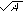
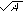

FREDERICK ENGELS
ANTI-DÜHRING
(Herr Eugen Dühring's Revolution in Science)
First Edition 1976
FOREIGN LANGUAGES PRESS
PEKING 1976
(191x235).GIF)
|
FREDERICK ENGELS
ANTI-DÜHRING(Herr Eugen Dühring's Revolution in Science)
First Edition 1976
|
|
The present English edition of Engels' Anti-Dühring [1] to a substantial extent follows previous English translations. In comparing these translations with the original text of the third German edition of Herrn Eugen Dührings Umwälzung der Wissenschaft (1894) it was found necessary to make numerous and sometimes drastic corrections and revisions.
The book includes the author's three Prefaces to the first three German editions.
As he indicated in the Preface to the second German edition (p. 10 below) he revised the "Introduction", Chapter I and Part III, Chapters I and II more or less to conform with the changes he had made in them for his pamphlet Socialism: Utopian and Scientific. Words and passages in the pamphlet not included in this revision are here given in square brackets. The most important formulations from Engels' rough draft of the "Introduction" and certain passages in the pamphlet which differ from the corresponding passages in the German edition of Anti-Dühring are given in footnotes.
This edition includes the special introduction to the English edition of Socialism: Utopian and Scientific which Engels wrote in English himself in 1892.
It is also supplied with notes and subject and name indexes.
|
PREFACES TO THE THREE EDITIONS | ||
|
|
3 | |
|
| ||
|
General |
18 | |
|
| ||
|
Classification. Apriorism |
42 | |
|
| ||
|
Subject Matter and Method |
186 | |
|
| ||
|
Historical |
327 | |
|
| ||
|
Introduction to the English Edition of Socialism: Utopian |
| |
|
[Transcriber's Note : Since the "Introduction" is included with the complete text of | ||
|
|
453 | |
|
Subject Index [not available -- DJR] |
471 | |
|
Name Index [not available -- DJR] |
492 | |
(Herr Eugen Dühring's Revolution in Science )
|
Written between September 1876 |
Original in German |
page 3
The following work is by no means the fruit of any "inner urge". On the contrary.
When three years ago Herr Dühring suddenly issued his challenge to his century as an adept and at the same time a reformer of socialism, friends in Germany repeatedly urged on me their desire that I should subject this new socialist theory to a critical examination in the central organ of the Social-Democratic Party, at that time the Volksstaat.[2] They thought this absolutely necessary in order to prevent a new occasion for sectarian splitting and confusion from developing within the Party, which was still so young, just having finally achieved unity. They were in a better position than I to judge the situation in Germany, and I was therefore duty bound to accept their view. Moreover, it became apparent that the new convert was being welcomed by a section of the socialist press with a warmth which it is true was only extended to Herr Dühring's goodwill, but which at the same time also indicated that its reciprocation of his goodwill
page 4
itself moved it to accept Herr Dühring's doctrine, and sight unseen into the bargain. Besides, there were people who were already preparing to spread this doctrine in a popularized form among the workers. Finally Herr Dühring and his little sect were using all the arts of advertisement and intrigue to force the Volksstaat to take a definite stand in relation to the new doctrine which had come forward with such mighty pretensions.
Nevertheless it was a year before I could make up my mind to neglect other work and get my teeth into this sour apple. It was the kind of apple that, once bitten into, had to be completely devoured; and it was not only very sour, but also very large. The new socialist theory was presented as the ultimate practical fruit of a new philosophical system. It was therefore necessary to examine it in connection with this system, and in doing so to examine the system itself; it was necessary to follow Herr Dühring into that vast territory in which he dealt with all things under the sun and with some others as well. Such was the origin of a series of articles which appeared in the Leipzig Vorwärts, the successor of the Volksstaat, from the beginning of 1877 and which are here presented as a connected whole.
It was thus the nature of the object itself which forced the criticism to assume a length entirely out of proportion to the scientific content of this object, that is to say, of Dühring's writings. But there are two other considerations which may excuse this length. On the one hand, in connection with the very diverse subjects to be touched on here, it gave me the opportunity of setting forth in a positive form my views on controversial issues which are of quite general scientific or practical interest today. This has been done in every single chapter, and although this work cannot in any way aim at
page 5
presenting another system as an alternative to Herr Dühring's "system", it is to be hoped that the reader will not fail to observe the connection inherent in the various views I have advanced. I have already had proof enough that in this respect my work has not been entirely fruitless.
On the other hand, Herr Dühring the "system-creator" is by no means an isolated phenomenon in contemporary Germany. For some time now in Germany systems of cosmogony, of natural philosophy in general, of politics, of economics, etc., have been springing up by the dozen overnight, like mushrooms. The most insignificant doctor of philosophy, nay, even the students will go in for nothing less than a complete "system". Just as in the modern state it is presumed that every citizen is competent to pass judgement on all the issues on which he is called to vote, and just as in economics it is assumed that every consumer is a connoisseur of all the commodities which he has occasion to buy for his maintenance -- so similar assumptions are now to be made in science. Freedom of science is taken to mean that people write on every subject they have not studied and proclaim this as the only strictly scientific method. Herr Dühring is one of the most characteristic types of this bumptious pseudo-science which is nowadays forcing its way to the front everywhere in Germany and is drowning everything with its resounding -- sublime nonsense. Sublime nonsense in poetry, in philosophy, in politics, in economics, in historiography, sublime nonsense in the lecture-room and on the platform, sublime nonsense everywhere; sublime nonsense which lays claim to a superiority and depth of thought distinguishing it from the simple, commonplace nonsense of other nations; sublime nonsense, the most characteristic mass product of Germany's intellectual industry -- cheap but bad -- just like other German-made goods, with which unfortunately
page 6
it was not exhibited at Philadelphia.[3] Particularly since Herr Dühring's good example, even German socialism has lately gone in for a considerable amount of sublime nonsense, producing various persons who give themselves airs about "science", of which they "never really learnt a word". This is an infantile disease which marks, and is inseparable from, the incipient conversion of the German student to Social-Democracy, but which our workers with their remarkably healthy nature will undoubtedly overcome.
It was not my fault that I had to follow Herr Dühring into realms where at best I can only claim to be a dilettante. In such cases I have for the most part limited myself to putting forward the correct, undisputed facts in opposition to my adversary's false or distorted assertions. This applies to jurisprudence and in some instances also to natural science. In other cases it has been a question of general views connected with theoretical natural sciences that is, a field where even the professional natural scientist is compelled to pass beyond his own speciality and encroach on neighbouring territory -- territory on which he is, therefore, just as much a "semi-initiate" as any one of us, as Herr Virchow has admitted. I hope I shall be granted the same indulgence in respect of minor inexactitudes and clumsiness of expression as people show each other in this domain.
Just as I was completing this preface, I received a publisher's notice, composed by Herr Dühring, of a new "authoritative" work of Herr Dühring's, Neue Grundgesetze zur rationellen Physik und Chemie.* Conscious as I am of the inadequacy of my knowledge of physics and chemistry, I still believe that I know my Herr Dühring, and therefore, without having seen
page 7
the work itself, think that I am entitled to say in advance that the laws of physics and chemistry put forward in it will be worthy to take their place, by their erroneousness or triteness, among the laws of economics, world schematism, etc., which were discovered earlier by Herr Dühring and are examined in this book of mine; and also that the rhigometer, the instrument constructed by Herr Dühring for measuring extremely low temperatures, will serve as a measure not of temperatures either high or low, but simply and solely of Herr Dühring's ignorant arrogance.
London, June 11, 1878
I had not expected that a new edition of this book would have to be published. The object of its criticism is now practically forgotten; the work itself was not only available to many thousands of readers in the form of a series of articles published in the Leipzig Vorwärts in 1877 and 1878, but also appeared in its entirety as a separate book in a large edition. How then can anyone still be interested in what I had to say about Herr Dühring years ago?
I owe this in the first place probably to the fact that this book was banned within the German Empire immediately after the promulgation of the Anti-Socialist Law,[4] as was generally the case with almost all my works still circulating at the time. To anyone whose brain has not been ossified by the hereditary bureaucratic prejudices of the countries of the Holy Alliance,[5] the effect of this measure must have been self-evident: a doubled and trebled sale of the banned books,
page 8
and the exposure of the impotence of the gentlemen in Berlin who issue bans they cannot enforce. Indeed the kindness of the Imperial Government has brought me more new editions of my minor works than I can claim the credit for; I have had no time to make a proper revision of the text, and in most cases have been obliged simply to allow it to be reprinted as it stood.
But there was also another factor. The "system" of Herr Dühring which is criticized in this book ranges over a very wide theoretical domain; I was compelled to follow him wherever he went and to oppose my conceptions to his. As a result, my negative criticism became positive; the polemic was transformed into a more or less connected exposition of the dialectical method and of the communist world outlook represented by Marx and myself -- an exposition covering a fairly comprehensive range of subjects. After it had been first presented to the world in Marx's Poverty of Philosophy and in The Communist Manifesto and after it had passed through an incubation period of fully twenty years before the publication of Capital,[6] this outlook of ours has been extending its influence among ever-widening circles with growing rapidity, and now finds recognition and support far beyond the boundaries of Europe, in every country which contains proletarians on the one hand and undaunted scientific theorists on the other. Therefore, it seems that there is a public with an interest in the subject great enough to accept the polemic against the Dühring tenets for the sake of the positive conceptions accompanying it, although the polemic has now largely lost its point.
I must note in passing that since the outlook expounded io this book was founded and developed in far greater measure by Marx, and only in an insignificant degree by myself, it was
page 9
automatically understood between us that this exposition of mine should not be issued without his knowledge. I read the whole manuscript to him before it was printed, and the tenth chapter of the part on economics ("From the Critical History ") was written by Marx but unfortunately had to be shortened somewhat by me for purely external reasons. As a matter of fact, we had always been accustomed to help each other out in special subjects.
With the exception of one chapter, the present new edition is an unaltered reprint of the previous one. For one thing, I had no time for a thoroughgoing revision, although there was much in the presentation that I should have liked to alter. Besides I am under the obligation to prepare for the press the manuscripts left by Marx, and this is much more important than anything else. Then again, my conscience rebels against making any alterations. The book is a polemic, and I think I owe it to my adversary not to improve anything in my work when he is unable to improve his. I could only claim the right to make a rejoinder to Herr Dühring's reply. But I have not read, and will not read, what Herr Dühring has written concerning my attack, unless there is some special reason to do so; in point of theory I have finished with him. Besides, I must observe the rules of decency in literary warfare all the more strictly in his regard because of the despicable injustice that has since been done to him by the University of Berlin. It is true that the University has not gone unpunished. A university that so abases itself as to deprive Herr Dühring of his academic freedom in circumstances which are well known must not be surprised to find Herr Schweninger forced on it in circumstances which are equally well known.[7]
The only chapter in which I have allowed myself some additional elucidation is the second chapter of Part III,
page 10
"Theoretical". This chapter deals solely and simply with the exposition of a pivotal point in the world outlook for which I stand, and my adversary cannot therefore complain if I attempt to state it in a more popular form and to make it more coherent. In fact, there was an extraneous reason for doing so. I had revised three chapters of the book (the first chapter of the "Introduction" and the first and second of Part III) for my friend Lafargue with a view to their translation into French as a separate pamphlet; and after the French edition had served as the basis for Italian and Polish editions, I issued a German edition under the title, Die Entwicklung des Sozialismus von der Utopie zur Wissenschaft.[*] This ran through three editions within a few months and also appeared in Russian and Danish translations. In all these editions it was only the chapter in question which had been amplified, and in the new edition of the original work it would have been pedantic to have tied myself down to its original text instead of the later text which had become known internationally.
Whatever else I should have liked to alter relates in the main to two points. First, to the history of primitive society, the key to which was provided by Morgan only in 1877.[8] But as I have since had the opportunity to work up the material, which had in the meantime become available to me, in my book Der Ursprung der Familie, des Privateigentums und des Staats ** (Zürich, 1884), a reference to this later work meets the case.
The second point concerns the section dealing with theoretical natural science. There is much that is awkward in the exposition, and much of it could be expressed today in a clearer
page 11
and more definite form. I have not allowed myself the right to improve this section, and for that very reason am under an obligation to criticize myself here instead.
Marx and I were pretty well the only people to salvage conscious dialectics from German idealist philosophy for the materialist conception of nature and history. But a knowledge of mathematics and natural science is essential to a conception of nature which is dialectical and at the same time materialist. Marx was well versed in mathematics, but we could keep up with the natural sciences only piecemeal, intermittently and sporadically. For this reason, when I retired from business and transferred my home to London,[9] thus enabling myself to give the necessary time to it, I went through as complete a "moulting", as Liebig calls it, in mathematics and the natural sciences as was possible for me, and spent the best part of eight years on it. I was right in the middle of this "moulting" process when, as it happened, I had to occupy myself with Herr Dühring's so-called natural philosophy. It was therefore only too natural that in dealing with this subject I was sometimes unable to find the correct technical expression, and in general moved with considerable clumsiness in the field of theoretical natural science. On the other hand, my lack of assurance in this field, which I had not yet overcome, made me cautious, and I cannot be charged with real blunders in relation to the facts as then known or with an incorrect presentation of recognized theories. In this connection there was only one unrecognized genius of a mathematician who complained in a letter to Marx that I had made a wanton attack upon the honour of
It goes without saying that my recapitulation of mathematics and the natural sciences was undertaken in order to convince myself in detail -- of what in general I was not in doubt -- that
page 12
in nature, amid the welter of innumerable changes, the same dialectical laws of motion impose themselves as those which in history govern the apparent fortuitousness of events; the same laws as those which similarly form the thread running through the history of the development of human thought and gradually rise to consciousness in the mind of man; the laws which Hegel first developed in all-embracing but mystified form, and which we made it one of our aims to strip of this mystic form and to bring clearly before the mind in their complete simplicity and universality. The old natural philosophy -- in spite of its real value and the many fruitful seeds it contained* -- was manifestly unable to satisfy us. As is more fully brought out in this book, the old natural philosophy, particularly in the Hegelian form, erred because it did not concede to nature any development in time, any "succession", but only "co-existence". This was on the one hand grounded in the Hegelian system itself, which ascribed continued historical
page 13
development only to the "spirit", but on the other hand was also due to the whole state of the natural sciences in that period. Here Hegel fell far behind Kant, whose nebular theory had already indicated the origin of the solar system, and whose discovery of the retardation of the earth's rotation by the tides had also proclaimed the doom of that system.[12] Finally, for me there could be no question of superimposing the laws of dialectics on nature but of discovering them in it and developing them from it.
But to do this systematically and in each separate department is a gigantic task. Not only is the domain to be mastered almost limitless; in this entire domain natural science itself is undergoing such a mighty process of revolutionization that even people who can devote the whole of their spare time to it can hardly keep pace. Since Karl Marx's death, however, my time has been requisitioned for more urgent duties, and I have therefore been compelled to lay my work aside. For
page 14
the present I must content myself with the indications given in this book, and must await some later opportunity to put together and publish the results which I have arrived at, perhaps in conjunction with the extremely important mathematical manuscripts left by Marx.[13]
Yet the advance of theoretical natural science may possibly make my work very largely or entirely superfluous. For the revolution which is being forced on theoretical natural science by the sheer necessity of setting the huge accumulation of purely empirical discoveries in order is such that it must increasingly bring the dialectical character of natural processes to the consciousness even of those empiricists who are most opposed to it. The old rigid antagonisms, the sharp, impassable dividing lines are disappearing more and more. Since even the last "true" gases have been liquefied and since it has been proved that a body can be brought into a condition in which the liquid and the gaseous forms are indistinguishable, the aggregate states have lost the last relics of their former absolute character. With the thesis of the kinetic theory of gases, that in perfect gases at equal temperatures the squares of the speeds with which the individual molecules of gas move are in inverse ratio to their molecular weights, heat also takes its place directly among the forms of motion which can be immediately measured as such. Whereas only ten years ago the great basic law of motion, then recently discovered, was as yet conceived as a mere law of the conservation of energy, as the mere expression of the indestructibility and uncreatability of motion, that is, merely in its quantitative aspect, this narrow, negative conception is being more and more supplanted by the positive idea of the transformation of energy, in which for the first time the qualitative content of the process comes into its own and the last vestige of an extramundane creator is obliterated. That
page 15
the quantity of motion (so-called energy) remains unaltered when it is transformed from kinetic energy (so-called mechanical force) into electricity, heat, potential energy of position, etc., and vice versa, no longer needs to be preached as something new; it serves as the basis which has already been secured for the now much more pregnant investigation into the very process of transformation, the great basic process, knowledge of which comprises all knowledge of nature. And since biology has been pursued in the light of the theory of evolution, one rigid boundary line of classification after another has been swept away in the domain of organic nature. The almost unclassifiable intermediate links are growing daily more numerous, closer investigation throws organisms out of one class into another, and distinguishing characteristics which had almost become articles of faith are losing their absolute validity; we now have mammals that lay eggs, and, if the report is confirmed, also birds that walk on all fours.[14] Years ago, following on the discovery of the cell, Virchow was compelled to dissolve the unity of the individual animal being into a federation of cell-states -- thus acting more progressively than scientifically and dialectically[15] -- and now the conception of animal (and therefore also human) individuality is becoming far more complex owing to the discovery of the white blood corpuscles which creep about amoeba-like within the bodies of the higher animals. But it is precisely the polar antagonisms put forward as irreconcilable and insoluble, the forcibly fixed lines of demarcation and class distinctions, which have given modern theoretical natural science its restricted metaphysical character. The recognition that these antagonisms and distinctions, though to be found in nature, are only of relative validity, and that on the other hand their imagined rigidity and absolute validity have been introduced into nature
page 16
only by our thought -- this recognition forms the kernel of the dialectical conception of nature. It is possible to arrive at this recognition because the accumulating facts of natural science compel us to do so; one arrives at it more easily if one approaches the dialectical character of these facts equipped with an understanding of the laws of dialectical thought. In any case natural science has now advanced so far that it can no longer escape dialectical generalization. However, it will make this process easier for itself if it does not lose sight of the fact that the results in which its experiences are summarized are concepts, that the art of working with concepts is not inborn and also is not given with ordinary everyday consciousness but requires real thought, and that similarly this thought has a long empirical history, no more and no less than empirical natural science. Only by learning to appropriate the results of the development of philosophy during the past 2,500 years will it rid itself on the one hand of any natural philosophy standing apart from it, outside it and above it, and on the other of its own limited method of thought inherited from English empiricism.
London, September 23, 1885
The following new edition is a reprint of the preceding one, except for a few very unimportant stylistic changes. It is only in one chapter -- the tenth of Part II: "From the Critical History " -- that I have allowed myself to make substantial additions on the following grounds.
As already stated in the preface to the second edition, this chapter was in all essentials the work of Marx. I was forced
page 17
to make considerable cuts in Marx's manuscript, which in its first wording had been intended as an article for a journal; and I had to cut precisely those parts in which the critique of Dühring's propositions was overshadowed by Marx's own developments regarding the history of economics. But this is just the section of the manuscript which is of the greatest and most permanent interest even today. I consider myself under an obligation to give in as full and faithful a form as possible the passages in which Marx assigns to people like Petty, North, Locke and Hume their appropriate place in the genesis of classical political economy, and even more his explanation of Quesnay's "Economic Tableau", which has remained an insoluble riddle of the sphinx to all modern political economy. On the other hand, wherever the thread of the argument makes this possible, I have omitted passages which refer exclusively to Herr Dühring's writings.
For the rest I may be perfectly satisfied with the extent to which the views presented here have spread since the previous edition in the scientific and working-class consciousness in every civilized country of the world.
F. Engels
London, May 23,1894
page 18
GENERAL
Modern socialism is, in its content, primarily the product of the recognition, on the one hand, of the class antagonisms prevailing in modern society between proprietors and non-proprietors, between capitalists and wage-workers, and on the other, of the anarchy ruling in production. In its theoretical form, however, it originally appears as a more developed and allegedly more consistent extension of the principles laid down by the great French philosophers of the Enlightenment in the eighteenth century.* Like every new theory, modern socialism
page 19
had at first to link itself with the intellectual data ready to hand, however deeply its roots lay in [material] economic facts.
The great men who in France were clearing men's minds for the coming revolution acted in an extremely revolutionary way themselves. They recognized no external authority of any kind. Religion, conceptions of nature, society, political systems -- everything was subjected to the most unsparing criticism: everything had to justify its existence before the judgement-seat of reason or give up existence. The reasoning intellect became the sole measure of everything. It was the time when, as Hegel says, the world was stood on its head,* first in the sense that the human head and the principles arrived at by its thinking claimed to be the basis of all human action and association; but then later also in the wider sense that the reality which was in contradiction with these principles was, in fact, turned upside down. Every previous form of society
page 20
and state, every old traditional notion was flung into the lumber-room as irrational; the world had hitherto allowed itself to be led solely by prejudice; everything in the past deserved only pity and contempt. The light of day [,the realm of reason,] now appeared for the first time; henceforth superstition, injustice, privilege and oppression were to be superseded by eternal truth, eternal justice, equality based on nature, and the inalienable rights of man.
We know today that this realm of reason was nothing more than the idealized realm of the bourgeoisie; that eternal justice found its realization in bourgeois justice; that equality reduced itself to bourgeois equality before the law; that bourgeois property was proclaimed as one of the most essential rights of man; and that the government of reason, Rousseau's Social Contract, came into being, and could only come into being, as a bourgeois democratic republic. The great thinkers of the eighteenth century were no more able than their predecessors to go beyond the limits imposed on them by their own epoch.
But side by side with the antagonism of the feudal nobility and the burghers [who claimed to represent all the rest of society], there was the general antagonism of exploiters and exploited, of the rich idlers and the toiling poor. It was precisely this circumstance that enabled the representatives of the bourgeoisie to put themselves forward as the representatives not of one special class but of the whole of suffering humanity. Still more. From its origin the bourgeoisie was saddled with its antithesis: capitalists cannot exist without wage-workers, and, in the same proportion as the mediaeval burgher of the guild developed into the modern bourgeois, so the guild journeyman and the day-labourer outside the guilds developed into the proletarian. And although, on the whole, the burghers in
page 21
their struggle with the nobility[*] could claim to represent at the same time the interests of the different working classes of that period, in every great bourgeois movement there were independent outbursts of that class which was the more or less developed forerunner of the modern proletariat. For example, at the time of the German Reformation and the Peasants' War, Thomas Münzer's trend [**] in the great English Revolution, the Levellers; in the great French Revolution, Babeuf.[16]
There were theoretical manifestations corresponding with these revolutionary uprisings of an as yet immature class; in the sixteenth and seventeenth centuries, utopian pictures of ideal social conditions, in the eighteenth, direct communistic theories (Morelly and Mably). The demand for equality was no longer limited to political rights but was also extended to the social conditions of individuals; it was not merely class privileges that were to be abolished, but class distinctions themselves. An ascetic communism [prohibiting all the pleasures of life] copied from Sparta was thus the first form of the new teaching. Then came the three great Utopians: Saint-Simon, to whom the bourgeois current still had a certain significance side by side with the proletarian, Fourier, and Owen, who in the country where capitalist production was most developed and under the influence of the antagonisms begotten by it systematically worked out his proposals for the abolition of class distinctions in direct relation to French materialism.
One thing is common to all three. Not one of them appears as a representative of the interests of the proletariat which
page 22
historical development had in the meantime produced. Like the philosophers of the Enlightenment, they want to emancipate not a particular class [to begin with], but all humanity [at once]. Like them, they wish to bring in the realm of reason and of eternal justice, but this realm is as far as heaven from earth from that of the philosophers of the Enlightenment. For the bourgeois world based upon the principles of these philosophers is also irrational and unjust and, therefore, finds its way to the dustbin just as readily as feudalism and all earlier orders of society. If pure reason and justice have not hitherto ruled the world, it is only because they have not been rightly understood. What was wanting was only the individual man of genius, who has now arisen and who has recognized the truth. The fact that he has now arisen, that the truth has been recognized precisely at this moment, is not an inevitable event following of necessity in the chain of historical development, but a mere happy accident. He might just as well have been born 500 years earlier and might then have spared humanity 500 years of error, strife, and suffering.
This outlook is essentially that of all English and French and of the first German socialists, including Weitling.* [To all these] socialism is the expression of absolute truth, reason and justice and needs only to be discovered to conquer the world by virtue of its own power; as absolute truth is independent of time, space, and human historical development, it is a mere accident when and where it is discovered. At the same time, absolute truth, reason and justice are different for the
page 23
founder of each different school; and as each one's special brand of absolute truth, reason and justice is in turn conditioned by his subjective understanding, his conditions of existence, the measure of his knowledge and his intellectual training, there is no other ending possible in this conflict of absolute truths than that they should grind each other down. Hence, from this nothing could come but a kind of eclectic, average socialism, such as in fact has dominated the minds of most of the socialist workers in France and England up to the present time; a mish-mash permitting of the most manifold shades of opinion; a mish-mash of the less striking critical statements, economic theories and pictures of future society of the founders of different sects; a mish-mash which is the more easily produced, the more the sharp edges of precision of the individual constituents are rubbed down in the stream of debate, like rounded pebbles in a brook.
To make a science of socialism, it had first to be placed upon a real basis.
In the meantime, the new German philosophy, terminating in Hegel, had arisen along with and after the French philosophy of the eighteenth century. Its greatest merit was its resumption of dialectics as the highest form of thinking. The old Greek philosophers were all born dialecticians, and Aristotle, the most encyclopaedic intellect among them, had already investigated the most essential forms of dialectical thought.* On the other hand, although the newer philosophy, too, included brilliant exponents of dialectics (e.g., Descartes
page 24
and Spinoza), it had become -- especially under English influence -- increasingly stuck in the so-called metaphysical mode of reasoning, by which the French of the eighteenth century were also almost wholly dominated, at all events in their special philosophical works. Outside philosophy in the narrow sense, the French nevertheless produced masterpieces of dialectic; we need only call to mind Diderot's Rameau's Nephew and Rousseau's Discourse on the Origin of Inequality Among Men.[17] We give here, in brief, the essential character of these two modes of thought; we shall have to return to them later in greater detail.
When we reflect on nature or the history of mankind or our own intellectual activity, at first we see the picture of an endless maze of connections and interactions, in which nothing remains what, where and as it was, but everything moves, changes, comes into being and passes away. [At first therefore, we see the picture as a whole, with its individual parts still more or less kept in the background; we observe the movements, transitions, connections, rather than the things that move, change and are connected.] This primitive, naive but intrinsically correct conception of the world is that of ancient Greek philosophy, and was first clearly formulated by Heraclitus: everything is and also is not, for everything is in flux, is constantly changing, constantly coming into being and passing away.
But this conception, correctly as it expresses the general character of the picture of phenomena as a whole, does not suffice to explain the details of which this picture is made up, and so long as we cannot do this,* we are not clear about the
page 25
whole picture. In order to understand these details we must detach them from their natural or historical connection and examine each one separately according to its nature, special causes and effects, etc. This is primarily the task of natural science and historical research, branches of science which for the Greeks of classical times occupied only a subordinate position on very good grounds, because they had first of all to piece together the materials [for these sciences to work upon]. [Only after a certain amount of natural and historical material has been collected can critical analysis, comparison, and arrangement in classes, orders, and species be undertaken.] The beginnings of the exact natural sciences were [,therefore,] worked out first by the Greeks of the Alexandrian period,[18] and later on, in the Middle Ages, further developed by the Arabs. Genuine natural science dates from the second half of the fifteenth century, and from then on it has advanced with ever increasing rapidity. The analysis of nature into its individual parts, the division of the different natural processes and objects into definite classes, the study of the internal anatomy of organic bodies in their manifold forms -- these were the fundamental conditions for the gigantic strides in our knowledge of nature that have been made during the last four hundred years. But this has bequeathed us the habit of observing natural objects and processes in isolation, detached from the general context; of observing them not in their motion, but in their state of rest; not as essentially variable elements, but as constant ones; not in their life, but in their death. And when this way of looking at things was transferred by Bacon and Locke from natural science to philosophy, it begot the narrow, metaphysical mode of thought peculiar to the last centuries.
page 26
To the metaphysician, things and their mental images, ideas, are isolated, to be considered one after the other and apart from each other, fixed, rigid objects of investigation given once for all. He thinks in absolutely unmediated antitheses. "His communication is 'yea, yea; nay, nay'; for whatsoever is more than these cometh of evil." For him a thing either exists or does not exist; a thing cannot at the same time be itself and something else. Positive and negative absolutely exclude one another; cause and effect stand in a rigid antithesis one to the other.
At first sight this way of thinking seems to us most plausible[*] because it is that of so-called sound common sense. Yet sound common sense, respectable fellow that he is in the homely realm of his own four walls, has very wonderful adventures directly he ventures out into the wide world of research. The metaphysical mode of thought, justifiable and even necessary as it is in a number of domains whose extent varies according to the nature of the object, invariably bumps into a limit sooner or later, beyond which it becomes one-sided, restricted, abstract, lost in insoluble contradictions, because in the presence of individual things it forgets their connections; because in the presence of their existence it forgets their coming into being and passing away; because in their state of rest it forgets their motion. It cannot see the wood for the trees. For every day purposes we know and can definitely say, e.g., whether an animal is alive or not. But, upon closer inquiry, we find that this is sometimes a very complex question, as the jurists very well know. They have cudgelled their brains in vain to dis cover a rational limit beyond which the killing of the child in
page 27
its mother's womb is murder. It is just as impossible to deter mine the moment of death, for physiology proves that death is not a sudden instantaneous phenomenon, but a very protracted process.
In like manner, every organic being is every moment the same and not the same; every moment it assimilates matter supplied from without and gets rid of other matter; every moment some cells of its body die and others build themselves anew; in a longer or shorter time the matter of its body is completely renewed and is replaced by other molecules of matter, so that every organic being is always itself, and yet something other than itself.
Further, we find upon closer investigation that the two poles of an antithesis, like positive and negative, are as in separable as they are opposed, and that despite all[*] their opposition, they interpenetrate. In like manner, we find that cause and effect are conceptions which only hold good in their application to the individual case as such; but as soon as we consider the individual case in its general connection with the universe as a whole, they merge, they dissolve in the concept of universal action and reaction in which causes and effects are constantly changing places, so that what is effect here and now will be cause there and then, and vice versa.
None of these processes and modes of thought fit into the frame of metaphysical thinking. But for dialectics, which grasps things and their conceptual images essentially in their interconnection, in their concatenation, their motion, their coming into and passing out of existence, such processes as those mentioned above are so many corroborations of its own procedure.
page 28
Nature is the test of dialectics, and it must be said for modern science that it has furnished this test with very rich and daily increasing materials, and thus has shown that in the last resort nature works dialectically and not metaphysically; [that she does not move in an eternally uniform and perpetually recurring circle, but goes through a genuine historical evolution. In this connection Darwin must be named before all others. He dealt the metaphysical conception of nature the heaviest blow by his proof that the organic world of today -- plants, animals, and consequently man too -- is the product of a process of evolution going on through millions of years]. But since the natural scientists who have learned to think dialectically are still few and far between, this conflict of the results of discovery with traditional modes of thinking explains the endless confusion now reigning in theoretical natural science, the despair of teachers as well as students, of authors and readers alike.
An exact representation of the universe, of its evolution and of that of mankind, and of the reflection of this evolution in the minds of men can therefore only be obtained by the method of dialectics with its constant regard to the general actions and reactions of becoming and ceasing to be, of progressive or retrogressive changes. And it is in this spirit that modern German philosophy immediately set to work. Kant began his career by resolving the stable solar system of Newton and its eternal duration, after the famous initial impulse had once been given, into a historical process, the formation of the sun and all the planets out of a rotating nebulous mass. From this he already drew the conclusion that, given this origin of the solar system, its future death followed of necessity. Half a century later his theory was established mathematically by Laplace, and after another half century the spectroscope con-
page 29
firmed the existence in cosmic space of such incandescent masses of gas in various stages of condensation.
This new German philosophy terminated in the Hegelian system. In this system -- and this is its great merit -- the whole world, natural, historical, intellectual, is for the first time represented as a process, i.e., as in constant motion, change, transformation, development; and the attempt was made to show internal interconnections in this motion and development.[*] From this point of view the history of man kind no longer appeared as a wild whirl of senseless deeds of violence, all equally condemnable at the judgement-seat of mature philosophic reason and best forgotten as quickly as possible, but as the process of evolution of humanity itself. It was now the task of the intellect to follow the gradual march of this process through all its devious ways, and to trace out the inner logic running through all its apparently contingent phenomena.
That [the] Hegel[ian system] did not solve the problem [it posed itself] is immaterial here. Its epoch-making merit was that it posed the problem. This problem is indeed one that no single individual will ever be able to solve. Although Hegel was -- with Saint-Simon -- the most encyclopaedic
page 30
mind of his time, he was restricted, first, by the necessarily limited extent of his own knowledge and, second, by the limited extent and depth of the knowledge and conceptions of his epoch. To these limits a third must be added. Hegel was an idealist. To him the thoughts within his brain were not the more or less abstract images of actual things and processes, but on the contrary, things and their development were only the realized images of the "Idea", existing somewhere[*] from eternity before the world existed. Consequently everything was stood on its head and the actual interconnection of things in the world was completely reversed. Although Hegel had grasped some individual interconnections correctly and with genius, yet for the reasons just given there is much that in point of detail necessarily turned out botched, artificial, laboured, in a word, upside down. The Hegelian system as such was a colossal miscarriage -- but it was also the last of its kind. In fact, it was suffering from an internal and incurable contradiction. On the one hand, its essential postulate was the conception that human history is a process of development, which, by its very nature, cannot find its intellectual final term in the discovery of any so-called absolute truth. But on the other hand, it laid claim to being the very essence of precisely this absolute truth. A system of natural and historical knowledge which is all-embracing and final for all time is in contradiction with the fundamental laws of dialectical thinking; which by no means excludes, but on the contrary includes, the idea that systematic knowledge of the entire external world can make giant strides from generation to generation.
page 31
The recognition of the complete inversion of previous German idealism necessarily led to materialism, but, it must be noted, not to the purely metaphysical, exclusively mechanical materialism of the eighteenth century. In contrast to the naively revolutionary, flat rejection of all previous history, modern materialism sees history as the process of development of humanity and its own task as the discovery of the laws of motion of this process. The conception was prevalent among the French of the eighteenth century and [later] in Hegel that nature was a whole, moving in narrow circles and [for ever] remaining immutable, with eternal celestial bodies, as in Newton's teaching, and with unalterable species of organic beings, as in Linnaeus' teaching. In opposition to this conception, modern materialism embraces the more recent advances of natural science, according to which nature too has its history in time, the celestial bodies, like the organic species with which they became peopled under favourable conditions, coming into being and passing away, and the recurrent cycles, in so far as they are at all admissible, assuming infinitely vaster dimensions. In both cases modern materialism is essentially dialectical and no longer needs any philosophy standing above the other sciences. As soon as each separate science is required to clarify its position in the great totality of things and of our knowledge of things, a special science dealing with this totality is superfluous. All that remains in an independent state from all earlier philosophy is the science of thought and its laws -- formal logic and dialectics. Everything else merges into the positive science of nature and history.
But whilst the revolution in the conception of nature could only be made to the extent that research furnished the corresponding positive materials, certain historical events had already asserted themselves much earlier which led to a
page 32
decisive change in the conception of history. In 1831, the first working-class rising took place in Lyons; between 1838 and 1842, the first national working-class movement, that of the English Chartists, reached its height. The class struggle between proletariat and bourgeoisie came to the front in the history of the most advanced countries in Europe in proportion to the development, on the one hand, of modern industry, and on the other, of the recently acquired political supremacy of the bourgeoisie. Facts more and more strenuously gave the lie to the teachings of bourgeois economics on the identity of the interests of capital and labour, on the general harmony and general prosperity flowing from free competition.* None of these things could be ignored any longer, any more than the French and English socialism, which was their theoretical, though extremely imperfect, expression. But the old idealist conception of history, which was not yet dislodged, knew nothing of class struggles based on material interests, indeed knew nothing at all of material interests; production and all economic relations appeared in it only as incidental, subordinate elements in the "history of civilization".
The new facts made imperative a new examination of all past history. Then it was seen that all past history [, with the exception of its primitive stages,] was the history of class
page 33
struggles; that these social classes warring with each other are always the products of the relations of production and exchange -- in a word, of the economic relations of their epoch; that therefore the economic structure of society always forms the real basis, from which, in the last analysis, the whole superstructure of legal and political institutions as well as of the religious, philosophical, and other ideas of a given historical period is to be explained. [Hegel had freed the conception of history from metaphysics -- he had made it dialectical; but his conception of history was essentially idealistic.] But now idealism was driven from its last refuge, the conception of history; new a materialist treatment of history was advanced, and the way found to explain man's consciousness by his being, instead of, as heretofore, his being by his consciousness.
[Henceforward socialism no longer appeared as an accidental discovery by this or that intellect of genius, but as the necessary outcome of the struggle between two classes produced by history -- the proletariat and the bourgeoisie. Its task was no longer to manufacture as perfect a system of society as possible, but to examine the historico-economic process from which these classes and their antagonism had of necessity sprung and to discover in the economic situation thus created the means of ending the conflict.] But the earlier socialism was just as incompatible with this materialist conception of history as the French materialists' conception of nature was with dialectics and modern natural science. The earlier socialism certainly criticized the existing capitalist mode of production and its consequences. But it could not explain this mode of production, and, therefore, could not get the mastery of it. It could only simply reject it as evil. [The more violently it denounced the exploitation of the working class,
page 34
which is inseparable from capitalism, the less able was it clearly to show in what this exploitation consists and how it arises.] But for this it was necessary, on the one hand, to present the capitalist mode of production in its historical interconnection and its necessity for a specific historical period, and therefore also the necessity of its doom; and, on the other, to lay bare its essential character, which was still hidden, as its critics had hitherto attacked its evil consequences rather than the process as such.[*] This was done by the discovery of surplus-value. It was shown that the appropriation of unpaid labour is the basic form of the capitalist mode of production and of the exploitation of the worker effected by it; that even if the capitalist buys the labour-power of his worker at the full value it possesses as a commodity on the market, he still extracts more value from it than he paid for; and that in the last analysis this surplus-value forms those sums of value from which there is heaped up the constantly increasing mass of capital in the hands of the possessing classes. The process both of capitalist production and of the production of capital was explained.
These two great discoveries, the materialist conception of history and the revelation of the secret of capitalist production through surplus-value, we owe to Marx. With them socialism became a science, which had now to be elaborated in all its details and interconnections.
This, approximately, was how things stood in the fields of theoretical socialism and extinct philosophy, when Herr Eugen Dühring, not without considerable din, sprang onto the stage and announced that he had accomplished a complete and
page 35
thoroughgoing revolution in philosophy, political economy and socialism.
Let us see what Herr Dühring promises us and how he fulfils his promises.
WHAT HERR DÜHRING PROMISES
The writings of Herr Dühring with which we are here primarily concerned are his Kursus der Philosophie, his Kursus der National- und Sozialökonomie, and his Kritische Geschichte der Nationalökonomie und des Sozialismus.[19] The first of these particularly claims our attention now.
On the very first page Herr Dühring introduces himself as
"the man who claims to represent this power" (philosophy) "in his age and for its immediately foreseeable development".*
He thus proclaims himself the only true philosopher of today and of the "foreseeable" future. Whoever diverges from him diverges from truth. Many people, even before Herr Dühring, have thought something of the kind about themselves, but -- except for Richard Wagner -- he is probably the first who has calmly blurted it out. And the truth to which he refers is "a final and ultimate truth".
Herr Dühring's philosophy is
"the natural system or the philosophy of reality. . . . In it reality is so conceived as to exclude any tendency to a visionary and subjectively limited conception of the world."
page 36
This philosophy, therefore, is such that it lifts Herr Dühring above the bounds set by what he himself can hardly deny are his personal and subjective limitations. And this is necessary if he is to be in a position to lay down final and ultimate truths, although so far we do not see how this miracle should come to pass.
This "natural system of knowledge which in itself is of value to the mind" has "securely established the basic forms of being without in any way compromising the profundity of thought". From its "genuinely critical standpoint" it provides "the elements of a philosophy which is real and therefore directed to the reality of nature and of life, a philosophy which cannot allow the validity of any merely apparent horizon, but unfolds all earths and heavens of outer and inner nature in its mighty revolutionizing sweep "; it is a "new mode of thought", and its results are "fundamentally original conclusions and views . . . system-creating ideas . . . established truths". We have before us "a work which must find its strength in concentrated initiative" (whatever that may mean) an "investigation going to the roots . . . a deep-rooted science . . . a strictly scientific conception of things and of men . . . an all-round penetrating work of thought . . . a creative outline of premises and conclusions controllable by thought . . . the absolutely fundamental ".
In the economic and political sphere he gives us not only
"historical and systematically comprehensive works", of which the historical ones are, to boot, notable for "my treatment of history in the grand manner", while those dealing with economics have brought about "creative changes",
but he even finishes with a fully worked-out socialist plan of his own for the society of the future, which is the "practical fruit of a clear theory going to the ultimate roots of things " and, like the Dühring philosophy, is consequently infallible and the only way to salvation. For
"only in that socialist structure which I have characterized in my 'Course of Political and Social Economy' can a true Own take the place of the ownership which is merely apparent and transitory or even based on violence". And the future has to follow these directions.
page 37
This bouquet of glorifications of Herr Dühring by Herr Dühring could easily be multiplied tenfold. It may already have created some doubt in the reader's mind as to whether it is really a philosopher with whom he is dealing, or a -- but we must beg the reader to reserve judgement until he has got to know the above-mentioned deep-rootedness at closer quarters. We have given the above anthology only for the purpose of showing that we have before us not any ordinary philosopher and socialist, who merely expresses his ideas and leaves it to the future to judge their worth, but quite an extraordinary creature, who claims to be no less infallible than the Pope, and whose doctrine is the one way to salvation and simply must be accepted by anyone who does not want to fall into the most abominable heresy. What we are here confronted with is certainly not one of those works to be found in plenty in all socialist literature and recently in the German, too, works in which people of various calibres, in the most straightforward way in the world, try to become clear on problems the solution of which requires material that to a greater or lesser extent is not at their disposal; works whose socialist goodwill is always deserving of recognition, whatever their scientific and literary shortcomings. On the contrary, Herr Dühring offers us principles which he declares are final and ultimate truths, and besides which any other views are therefore false from the outset; he is in possession not only of the exclusive truth but also of the sole strictly scientific method of investigation, in contrast with which all others are unscientific. Either he is right -- and in this case we have before us the greatest genius of all time, the first superhuman, because infallible, human being. Or he is wrong, and in that case, whatever our judgement may be, benevolent regard for his possibly good
page 38
intentions would nevertheless be the most deadly insult to Herr Dühring.
When a man is in possession of the final and ultimate truth and of the only strictly scientific approach, it is only natural that he should have a certain contempt for the rest of erring and unscientific humanity. We must therefore not be surprised that Herr Dühring should speak of his predecessors with the most extreme disdain and that there are only a few great men who, by way of exception, are so entitled by him and who find mercy at the bar of his "deep-rootedness".
Let us first hear what he has to say about the philosophers:
"Leibnitz, devoid of any better sentiments . . . that best of all possible courtier-philosophizers."
Kant is barely tolerated; but after Kant everything got into a muddle:
there followed the "wild ravings and equally inane and windy stupidities of the immediate epigoni, notably, a Fichte and a Schelling . . . monstrous caricatures of ignorant natural philosophizing . . . the post-Kantian monstrosities" and "the delirious fantasies" crowned by "a Hegel ". The latter used a "Hegel jargon" and spread the "Hegel pestilence" by means of his "method which was unscientific even in form" and by his 'crudities".
The natural scientists fare no better, but as only Darwin is cited by name, we must confine ourselves to him:
"Darwinian semi-poetry and dexterity in metamorphosis, with its gross-minded narrowness of comprehension and blunted sense of differentiation. . . . In our view what is specific to Darwinism, from which of course the Lamarckian elements must be excluded, is a piece of brutality directed against humanity."
But the socialists come off worst of all. With the exception at most of Louis Blanc -- the most insignificant of them all --
page 39
they are sinners, all and sundry, and they fall short of the reputation they should have before (or behind) Herr Dühring. And not only in regard to truth and scientific approach -- no, also in regard to their character. Except for Babeuf and a few of the Communards of 1871, not a single one of them is a "man". The three Utopians are called "social alchemists". As for them, a certain indulgence is shown in the treatment of Saint-Simon, in so far as he is merely charged with "mental queerness", and there is a charitable insinuation that he suffered from religious mania. With Fourier, however, Herr Dühring completely loses patience. For Fourier
"revealed every element of insanity . . . ideas which one would normally have most expected to find in madhouses . . . the wildest dreams . . . products of insanity . . . the unspeakably silly Fourier", "this childish mind", this "idiot", is withal not even a socialist; his phalanstery[20] has not the least bit of rational socialism in it but is "a misshapen edifice on the pattern of everyday commerce".
Finally:
"Anyone who does not find these effusions" (of Fourier's, about Newton) "sufficient to convince him that it is only the first syllable in Fourier's name and in the whole of Fourierism" (fou = crazy) "that has any truth in it, should himself be classed under some category of idiot."
Lastly, Robert Owen
"had feeble and paltry ideas . . . his reasoning, so crude in its ethics . . . a few commonplaces which degenerated into perversions . . . nonsensical and crude way of looking at things. . . . Owen's range of ideas is hardly worth subjecting to more serious criticism . . . his vanity" -- and so on.
Herr Dühring characterizes the Utopians according to their names with devastating wit: Saint-Simon -- saint (holy); Fourier -- fou (crazy); Enfantin -- enfant (childish); he only need add: Owen -- o woe! and a whole important period in the history of socialism has been condemned -- in four words,
page 40
too, and anyone who has any doubts about it "should himself be classed under some category of idiot".
As for Dühring's opinions on the later socialists, for the sake of brevity we will only cite those on Lassalle and Marx:
Lassalle : "Pedantic, hair-splitting efforts at popularization . . . rampant scholasticism . . . a monstrous hash of general theories and paltry trash . . . senseless and formless Hegel-superstition . . . a horrifying example . . . peculiarly limited . . . pompousness combined with the most pettifogging trifles . . . our Jewish hero . . . pamphleteer . . . vulgar . . . inherent instability in his view of life and of the world."
Marx : "Narrowness of conception . . . his works and achievements in and by themselves, that is, regarded from a purely theoretical standpoint, are without any permanent significance in our domain" (the critical history of socialism), "and in the general history of intellectual tendencies they are to be cited at most as symptoms of the influence of one branch of modern sectarian scholastics . . . impotence of the faculties of concentration and organization . . . deformity of thought and style, undignified affectation of language . . . Anglicized vanity . . . duping . . . barren conceptions which in fact are only bastards of historical and logical fantasy . . . deceptive twisting . . . personal vanity . . . scurrilous ways . . . scurvy . . . buffoonery passing for wit . . . Chinese erudition . . . philosophical and scientific backwardness."
And so on and so forth -- for this too is only a small bouquet superficially culled from the Dühring rose garden. It must be understood that, at the moment, we are not in the least concerned whether these amiable expressions of abuse, which, if he had any education, should forbid Herr Dühring from finding anything scurrilous and scurvy, are also final and ultimate truths. For the moment we will guard against voicing any doubt about their deep-rootedness, as we might otherwise be prohibited from trying to find out the category of idiot to which we belong. We only thought it was our duty, on the one hand, to give an example of what Herr Dühring calls
"the select language of the considerate and, in the real sense of the word moderate mode of expression",
page 41
and on the other, to make it clear that to Herr Dühring the worthlessness of his predecessors is no less established a fact than his own infallibility. Whereupon we sink to the ground in deepest reverence before the mightiest genius of all time -- if that is how things really stand.
page 42
PHILOSOPHY
CLASSIFICATION. APRIORISM
According to Herr Dühring, philosophy is the development of the highest form of consciousness of the world and of life, and in a wider sense embraces the principles of all knowledge and volition. Wherever a series of cognitions or stimuli or a group of forms of being come to be examined by human consciousness, the principles of these configurations are necessarily the object of philosophy. These principles are the simple, or the hitherto supposedly simple, constituents of which the manifold of knowledge and volition is composed. Like the chemical composition of bodies, the general constitution of things can also be reduced to basic forms and basic elements. These ultimate constituents or principles, once they have been discovered are valid not only for the immediately known and accessible, but also for the world which is unknown and inaccessible to us. Philosophical principles consequently provide the final complement required by the sciences in order to become a uniform system by which nature and human life can be explained. Apart from the fundamental forms of all existence, properly speaking, philosophy has only two subjects for investigation -- nature and the world of man. Thus we find our material quite spontaneously arranged in three groups, namely, the general schematism of the universe, the science of the principles of nature, and finally the science of mankind. At the same time, this succession contains an inner logical sequence, for
page 43
the formal principles which are valid for all being take precedence, and the objective realms to which they are to be applied then follow in the degree of their subordination.
So far Herr Dühring, and almost entirely word for word.
What he is dealing with are therefore principles, formal basic principles derived from thought and not from the external world, which are to be applied to nature and the realm of man, and to which therefore nature and man have to conform. But whence does thought obtain these principles? From itself? No, for Herr Dühring himself says the realm of pure thought is limited to logical schemata and mathematical forms (the latter is wrong, as we shall see). Logical schemata can only relate to forms of thought ; but what we are dealing with here are only forms of being, of the external world, and these forms can never be created and derived by thought out of itself, but only from the external world. But with this the whole relationship is inverted: the principles are not the starting point of the investigation, but its final result; they are not applied to nature and human history, but abstracted from them; it is not nature and the realm of humanity which conform to these principles, but the principles are only valid in so far as they are in conformity with nature and history. That is the only materialist conception of the question, and Herr Dühring's contrary conception is idealistic, makes things stand completely on their heads, and fashions the real world out of the Idea, out of schemata, schemes or categories existing somewhere prior to the world, from eternity, just like -- a Hegel.
In fact, let us compare Hegel's Encyclopaedia and all its delirious fantasies with Herr Dühring's final and ultimate truths. With Herr Dühring we have in the first place general world schematism, which Hegel calls Logic. Then with both of them we have the application of these schemata or logical cate-
page 44
gories to nature, the philosophy of nature; and finally their application to the realm of man, which Hegel calls the philosophy of mind. The "inner logical sequence" of the Dühring succession therefore leads us "quite spontaneously" back to Hegel's Encyclopaedia, from which it has been taken with a fidelity which would bring tears to the eyes of that wandering Jew of the Hegelian school, Professor Michelet of Berlin.
That is what comes of accepting "consciousness", "thought", quite naturalistically as something given, something opposed to being, to nature, from the outset. If this were so, it must seem most odd that consciousness and nature, thinking and being, the laws of thought and the laws of nature, should so closely correspond. But if we then ask what thought and consciousness are and whence they come, we find that they are products of the human brain and that man himself is a product of nature, who has developed in and along with his environment; whence it is self-evident that the products of the human brain, which in the last analysis are also products of nature, do not contradict the rest of nature's interconnections but correspond to them.[21]
But Herr Dühring cannot permit himself such a simple treatment of the subject. He thinks not only in the name of humanity -- in itself no small achievement -- but in the name of conscious and reasoning beings on all celestial bodies.
Indeed, it would be "a degradation of the basic forms of consciousness and knowledge to attempt to rule out or even to put under suspicion their sovereign validity and their unconditional claim to truth by applying the epithet 'human' to them".
Hence, in order that no suspicion may arise that twice two may make five on some celestial body or other, Herr Dühring cannot designate thought as human, and so he has to cut it off from the only real foundation on which we find it, namely,
page 45
man and nature; and with that he tumbles hopelessly into an ideology which reveals him as the epigone of the "epigone", Hegel. In passing, we shall often meet Herr Dühring again on other celestial bodies.
It goes without saying that no materialist doctrine can be founded on such an ideological basis. We shall see later that Herr Dühring is forced more than once to endow nature with conscious activity, with, therefore, what in plain language is called God.
But our philosopher of reality also had other motives for shifting the basis of all reality from the real world to the world of thought. The science of this general world schematism, of these formal basic principles of being, is indeed precisely the foundation of Herr Dühring's philosophy. If we deduce this world schematism not from our minds, but only through our minds from the real world, if we deduce the basic principles of being from what is, we need no philosophy for this purpose, but positive knowledge of the world and of what happens in it; and what this yields is not philosophy either, but positive science. But in that case Herr Dühring's whole volume would be nothing but love's labour lost.
Further, if no philosophy as such is needed any longer, then no system, not even a natural system of philosophy, is needed any longer either. The recognition of the fact that all the processes of nature are systematically interconnected drives science on to prove this systematic interconnection throughout, both in general and in detail. But an adequate, exhaustive scientific exposition of this interconnection, the formation of an exact mental image of the world system in which we live, remains impossible for us, as it does for all times. If at any epoch in the development of mankind such a final, definitive system of the interconnections within the world -- physical
page 46
as well as mental and historical -- were constructed, this would mean that the realm of human knowledge had reached its limit, and that further historical development would be cut short from the moment when society had been brought into accord with that system -- which would be an absurdity, pure nonsense. Mankind therefore finds itself faced with a contradiction: on the one hand, it has to gain an exhaustive knowledge of the world system in all its interconnections, and on the other hand, this task can never be completely fulfilled because of the nature both of men and of the world system. But this contradiction not only lies in the nature of the two factors -- the world and man -- it is also the main lever of all intellectual advance, and constantly finds its solution, day by day, in the endless progressive development of humanity, just as for example mathematical problems find their solution in an infinite series or continued fractions. Actually, each mental image of the world system is and remains limited, objectively by the historical situation and subjectively by its author's physical and mental constitution. But Herr Dühring explains in advance that his mode of reasoning is such that it excludes any disposition to take a subjectively limited view of the world. We saw above that he was omnipresent -- on all possible celestial bodies. We now see that he is omniscient, too. He has solved the ultimate problems of science and so nailed boards across the future of all science.
As with the basic forms of being, so also Herr Dühring thinks he can produce out of his head the whole of pure mathematics a priori, that is, without making use of the experiences offered us by the external world.
In pure mathematics, in his view, the mind deals "with its own free creations and imaginations"; the concepts of number and form are "its
page 47
adequate object, which it itself creates", hence mathematics has "a validity which is independent of particular experience and of the real content of the world".
To be sure, it is correct that pure mathematics has a validity which is independent of the particular experience of each individual, and this is true of all established facts in every science and indeed of all facts whatsoever. The magnetic poles, the fact that water is composed of hydrogen and oxygen, the fact that Hegel is dead and that Herr Dühring is alive, are valid independently of my own experience or of that of any other individual, and even independently of Herr Dühring's experience, when he begins to sleep the sleep of the just. But it is not at all true that in pure mathematics the mind deals only with its own creations and imaginations. The concepts of number and form have been derived from no source other than the world of reality. The ten fingers on which men learnt to count, that is, to carry out the first arithmetical operation, are anything but a free creation of the mind. Counting requires not only objects that can be counted, but also the ability to abstract from all properties of the objects being considered except their number -- and this ability is the product of a long historical development based on experience. Like the concept of number, so the concept of form is derived exclusively from the external world and does not arise in the mind as a product of pure thought. There must have been things which had shape and whose shapes were compared before anyone could arrive at the concept of form. Pure mathematics deals with the spatial forms and quantitative relations of the real world -- that is, with material which is very real indeed. The fact that this material appears in an extremely abstract form can only superficially conceal its origin in the external world. But in
page 48
order to make it possible to investigate these forms and relations in their pure state, it is necessary to separate them entirely from their content, to put the content aside as irrelevant; hence we get points without dimensions, lines without breadth and thickness, a 's and b 's and x 's and y 's, constants and variables, and only at the very end do we for the first time reach the mind's own free creations and imaginations, that is to say, imaginary magnitudes. Even the apparent derivation of mathematical magnitudes from each other does not prove their a priori origin, but only their rational interconnection. Before the idea was arrived at of deducing the form of a cylinder from the rotation of a rectangle about one of its sides, a number of real rectangles and cylinders, in however imperfect a form, must have been examined. Like all other sciences, mathematics arose out of the needs of men, from the measurement of land and of the content of vessels, from the computation of time and from mechanics. But, as in every department of thought, at a certain stage of development the laws abstracted from the real world become divorced from the real world and are set over against it as something independent, as laws coming from outside, to which the world has to conform. This is how things happened in society and the state, and in this way, and not otherwise, pure mathematics is subsequently applied to the world, although it is borrowed from this same world and represents only one part of its forms of interconnection -- and it is precisely only because of this that it can be applied at all.
But just as Herr Dühring imagines that he can deduce the whole of pure mathematics without any empirical ingredients out of the axioms of mathematics, which "in accordance with
page 49
pure logic are neither capable nor in need of proof", and then apply it to the world, so he imagines that he can first produce out of his head the basic forms of being, the simple elements of all knowledge, the axioms of philosophy, that he can deduce the whole of philosophy or the world schematism from them, and then, by sovereign decree, impose this constitution of his on nature and humanity. Unfortunately nature is not at all, and humanity only to an infinitesimal degree, composed of Manteuffel's Prussians of 1850.[22]
Mathematical axioms are expressions of the scantiest thought content, which mathematics is obliged to borrow from logic. They can be reduced to two.
1) The whole is greater than the part. This statement is a pure tautology, as the quantitatively conceived idea "part" is in advance related to the idea "whole" in a definite way, and particularly in such a way that "part" announces without further ado that the quantitative "whole" consists of several quantitative "parts". In stating this explicitly, the so-called axiom does not take us a step further. This tautology can to a certain degree even be proved by saying: a whole is that which consists of many parts; a part is that of which many make a whole, therefore the part is less than the whole -- in which the emptiness of repetition brings out even more clearly the emptiness of content.
2) If two magnitudes are equal to a third, then they are equal to one another. This statement, as Hegel has already shown, is a conclusion, the correctness of which is guaranteed by logic, and which is therefore proved, although outside of pure mathematics.[23] The remaining axioms relating to equality and inequality are merely logical extensions of this conclusion.
page 50
These meagre principles could not cut much ice, either in mathematics or anywhere else. In order to get any further, we are obliged to import real relations, relations and spatial forms which are taken from real bodies. The ideas of lines, planes, angles, polygons, cubes, spheres, etc., are all taken from reality, and it requires a pretty good portion of naive ideology to believe the mathematicians -- that the first line came into existence through the movement of a point in space, the first plane through the movement of a line, the first solid through the movement of a plane, and so on. Even language rebels against such a conception. A mathematical figure of three dimensions is called a solid body, corpus solidum, hence even in Latin, a tangible object; it therefore has a name derived from sturdy reality and not at all from the free imagination of the mind.
But why all this prolixity? After Herr Dühring has enthusiastically sung the independence of pure mathematics from the world of experience, its a priori nature, its preoccupation with its own free mental creations and imaginations of the mind on pages 42 and 43, he says on page 63:[24]
"It is, of course, easy to overlook that these mathematical elements" (number, magnitude, time, space and geometric motion) "are ideal only in their form . . . absolute magnitudes are therefore something completely empirical, no matter to what species they belong", but "mathematical schemata are capable of being described in a way which is adequate even though divorced from actual experience".
This last statement is more or less true of every abstraction, but in no way proves that it is not abstracted from reality. In the world schematism pure mathematics arose out of pure thought -- in the philosophy of nature it is something completely empirical, taken from the external world and then divorced from it. Which are we to believe?
page 51
WORLD SCHEMATISM
"All-embracing being is one. In its self-sufficiency it has nothing alongside of it or over it. To associate a second being with it would be to make it something that it is not, namely, a part or constituent of a more comprehensive whole. Since we extend our undivided thought like a framework, nothing that should be comprised in this unity of thought can contain a duality within itself. Nor again can anything escape this unity of thought. . . . The essence of all thinking consists in the union of the elements of consciousness into a unity. . . . It is the point of unity of the synthesis which gave rise to the indivisible concept of the world, and the universe, as the name itself implies, is apprehended as something in which everything is united into a unity."
Thus far Herr Dühring. This is the first example of the application of the mathematical method:
"Every question is to be decided axiomatically in accordance with simple basic forms, as if simple . . . basic principles of mathematics were being dealt with."
"All-embracing being is one." If tautology, the simple repetition in the predicate of what is already expressed in the subject -- if that makes an axiom, then we have one of the purest water here. Herr Dühring tells us in the subject that being embraces everything, and he intrepidly declares in the predicate that in that case there is nothing outside it. What colossal "system-creating thought"!
System-creating indeed! Within the space of the next six lines, Herr Dühring has transformed the oneness of being, by means of our undivided thought, into its unity. As the essence of all thinking consists in bringing things together into a unity, so being, as soon as it is conceived, is conceived as undivided, and the concept of the world as indivisible, and because being
page 52
as conceived, the concept of the world, is undivided, therefore real being, the real universe, is also an indivisible unity. Thus
"there is no longer any room for things beyond, once the mind has learnt to conceive being in its homogeneous universality".
Here is a campaign which puts Austerlitz and Jena, Königgratz and Sedan completely in the shade.[25] In a few sentences, hardly a page after we have mobilized the first axiom, we have already abolished, eliminated, annihilated, everything beyond the world -- God and the heavenly hosts, heaven, hell and purgatory, along with the immortality of the soul.
How do we get from the oneness of being to its unity? By the very act of conceiving it. In so far as we spread our undivided thought around being like a frame, individual being becomes undivided, a unity of thought; for the essence of all thinking consists in bringing together the elements of consciousness into a unity.
This last statement is simply untrue. In the first place, thinking consists just as much in the splitting up of objects of consciousness into their elements as in the union of related elements into a unity. Without analysis, no synthesis. Secondly, without committing blunders thinking can bring together into a unity only those elements of consciousness in which or in whose real prototypes this unity already existed before. If I include a shoe brush in the unity of mammals, this does not help it to get mammary glands. The unity of being, or rather, the legitimacy of its conception as a unity, is therefore precisely what was to be proved, and when Herr Dühring assures us that he conceives being as undivided and not perchance as a duality, he tells us nothing more than his own humble opinion.
If we try to state his process of thought in unalloyed form, we get the following: 'I begin with being. I therefore conceive
page 53
being. The thought of being is undivided. But thinking and being must be in agreement, they correspond to each other, they 'coincide'. Therefore being is undivided in reality also. Therefore there cannot be anything 'beyond'." But if Herr Dühring had spoken openly in this way, instead of treating us to the above-cited oracular passages, the ideology would have been clearly visible. To attempt to prove the reality of any product of thinking by the identity of thinking and being, that was indeed one of the wildest delirious fantasies of -- a Hegel.
Even if his whole method of proof had been correct, Herr Dühring would still not have won an inch of ground from the spiritualists. The latter would reply briefly: to us, too, the universe is simple; the cleavage between the here below and the beyond exists only from our specifically earthly standpoint which is imbued with original sin; in and for itself, that is in God, all being is a unity. And they would accompany Herr Dühring to his other beloved celestial bodies and show him one or more on which there had been no original sin, where therefore no opposition exists between the here below and the beyond, and where the unity of the universe is a requirement of faith.
The most comical part of the business is that Herr Dühring uses the ontological proof for the existence of God in order to prove the non-existence of God from the concept of being. This runs: when we think of God, we conceive him as the sum total of all perfections. But the sum total of all perfections includes existence above all, since a non-existent being is necessarily imperfect. We must therefore include existence among the perfections of God. Therefore God must exist. Herr Dühring reasons in exactly the same way: if we think of being, we think of it as one concept. Whatever is included in one
page 54
concept is undivided. Being would not correspond to the concept of being if it were not undivided. Therefore it must be undivided. Therefore there is no God, and so on.
When we speak of being, and purely of being, unity can only consist in this, that all the objects to which we are referring -- are, exist. They are included in the unity of this being, and in no other unity, and the general statement that they all are not only cannot give them any additional qualities, whether common or not, but for the time being excludes all such qualities from consideration. For as soon as we stray even a millimetre from the simple basic fact that being is common to all these things, the differences between these things begin to emerge before our eyes, and we cannot decide from the fact that mere existence is in equal manner ascribed to them all whether these differences consist in some being white and the others black, some being animate and the others inanimate, some being perhaps here below and the others perhaps beyond.
The unity of the world does not consist in its being, although its being is a precondition of its unity, since it must surely first be before it can be one. Indeed, being is always an open question beyond the point where our sphere of observation ends. The real unity of the world consists in its materiality, and this is proved not by a few juggling phrases, but by a long and laborious development of philosophy and natural science.
To return to the text. The being which Herr Dühring is telling us about is
"not that pure being which is self-identical, lacks all special determinations, and in fact represents only the counterpart of the thought of nothing or of the absence of thought".
But we shall see very soon that Herr Dühring's universe starts with a being which lacks all internal differentiation, all
page 55
motion and change, and is therefore in fact only a counterpart of the thought of nothing, and is therefore really nothing. Only out of this being-nothing does the present differentiated, variable state of the world develop, representing a development, a becoming ; and only after we have grasped this are we able "to hold fast to the concept of universal self-identical being", even within this perpetual variation.
Thus we now have the concept of being at a higher plane, where it includes in itself both constancy and change, both being and becoming. Having reached this point, we find that
"genus and species, or generally speaking the general and the particular are the simplest means of differentiation, without which the constitution of things cannot be understood".
But these are means of differentiation of quality; and after these have been dealt with, we proceed:
"The concept of magnitude stands in opposition to genus as that homogeneity in which no further differences of kind exist";
and so from quality we pass to quantity, and this is always "measurable ".
Let us now compare this "acute sifting of these general schemata of effects" and its "genuinely critical standpoint" with the crudities, ravings and delirious fantasies of a Hegel. We find that Hegel's logic starts from being -- as with Herr Dühring; that being turns out to be nothing, as with Herr Dühring; that from this being-nothing there is a transition to becoming, the result of which is determinate being (Dasein ), i.e., a higher, more replete form of being (Sein ) -- just as with Herr Dühring. Determinate being leads on to quality, and quality on to quantity -- just as with Herr Dühring. And so that no essential feature may be missing, Herr Dühring tells us on another occasion:
page 56
"From the realm of non-sensation man enters that of sensation, in spite of all quantitative gradualness, only through a qualitative leap, of which we can say that it is infinitely different from the mere gradation of one and the same quality."
This is precisely the Hegelian nodal line of measure relations, in which, at certain definite nodal points, the purely quantitative increase or decrease gives rise to a qualitative leap ; for example, in the case of water which is heated or cooled, where boiling-point and freezing-point are the nodes at which -- under normal pressure -- the transition to a new state of aggregation takes place, where therefore quantity changes into quality.
Our investigation has likewise tried to reach down to the roots, and it finds the roots of Herr Dühring's deep-rooted basic schemata to be -- the "delirious fantasies" of a Hegel, the Categories of Hegel's Logic, Part I, the Doctrine of Being, in strictly old-Hegelian "succession" and with hardly any attempt to cloak the plagiarism!
Not content with pilfering from his worst-slandered predecessor the latter's whole scheme of being, Herr Dühring, after he himself has given the above example of the sudden leap from quantity into quality, has the effrontery to say of Marx:
"How ridiculous, for example, is the reference" (Marx's) "to Hegel's confused and nebulous notion that quality changes into quantity !"
Confused and nebulous notion! Who has changed here, and who is ridiculous here, Herr Dühring?
Thus all these pretty knicknacks are not only not "axiomatically decided" as prescribed, but are merely imported from outside, that is to say, from Hegel's Logic. And in such a form that in the whole chapter there is not even the semblance of any internal coherence except in so far as it is borrowed from
page 57
Hegel, and that it all finally trickles out in empty logic-chopping about space and time, constancy and change.
From being Hegel passes to essence, to dialectics. Here he is dealing with the determinations of reflections, their internal opposites and contradictions, as for example, positive and negative; he then comes to causality or the relation of cause and effect, and ends with necessity. Not otherwise Herr Dühring. What Hegel calls the doctrine of essence Herr Dühring translates into "logical properties of being". But these consist above all of the "antagonism of forces", of opposites. On the other hand, Herr Dühring absolutely denies contradiction; we will return to this topic later. Then he passes over to causality, and from this to necessity. Therefore, when Herr Dühring says of himself, "We, who do not philosophize out of a cage," he apparently means that he philosophizes in a cage, namely, the cage of the Hegelian schema of categories.
NATURAL PHILOSOPHY. TIME AND SPACE
We now come to natural philosophy. Here again Herr Dühring has every cause for dissatisfaction with his predecessors.
Natural philosophy "sank so low that it became a chaotic doggerel founded on ignorance", and "fell to the lot of the prostituted philosophistics of a Schelling and others of that ilk rummaging in the priesthood of the Absolute and hoodwinking the public". Fatigue has saved us from these "deformities", but up to now it has only given place to "instability"; "and as far as the public at large is concerned, it is well known that the disappearance of a great charlatan is often only the opportunity for a lesser but commercially more experienced successor to put out the products of his
page 58
predecessor under another sign-board again". Natural scientists themselves feel little "inclination to make excursions into the realm of world-encompassing ideas", and consequently jump to "incoherent and hasty conclusions" in the theoretical sphere.
The need for deliverance is therefore urgent, and by a stroke of good luck Herr Dühring is at hand.
In order correctly to appreciate the revelations which now follow on the development of the world in time and its limitation in space, we must turn back again to certain passages in World Schematism.
Infinity -- which Hegel calls bad infinity -- is attributed to being, also in accordance with Hegel (Encyclopaedia §93),[26] and then this infinity is investigated.
"The clearest form of an infinity which can be conceived without contradiction is the unlimited accumulation of numbers in a numerical series. . . . Just as we can add yet another unit to any number without ever exhausting the possibility of further numbers, so also a further state aligns itself to every state of being, and infinity consists in the unlimited begetting of these states. This exactly conceived infinity has consequently only one single basic form with one single direction. For although it is immaterial to our thinking whether or not it conceives an opposite direction in the accumulation of states, this retrogressing infinity is nevertheless only a rash mental product. Indeed, since in reality this infinity would have to be traversed in the reverse direction, in each of its states it would have an infinite succession of numbers behind it. But this would involve the impermissible contradiction of a counted infinite numerical series, and so it turns out to be contrary to reason to postulate any second direction in infinity."
The first conclusion drawn from this conception of infinity is that the chain of causes and effects in the world must at some time have had a beginning:
"an infinite number of causes which should have already fallen into line one behind the other is inconceivable, just because it presupposes that the uncountable has been counted."
page 59
Thus a final cause is proved.
The second conclusion is
"the Law of Determinate Number: the accumulation of identities of any actual species of independent things is only conceivable as forming a determinate number". Not only must the number of celestial bodies existing at any point of time be in itself determinate, the total number of all the tiniest independent particles of matter existing in the universe must also be determinate. This latter requisite is the real reason why no combination can be conceived without atoms. Every actual state of being divided invariably has a finite determinateness, and must do so if the contradiction of the counted uncountable is to be avoided. For the same reason, not only must the number of the earth's revolutions round the sun up to the present time be finite though unstatable, but all periodical processes of nature must have had some beginning, and all differentiation, all the successive manifold elements of nature must have their roots in one self-identical state. This state may have existed from eternity without contradiction; but even this idea would be excluded if time in itself were composed of real parts instead of being merely arbitrarily divided up by our minds through the positioning of possibilities. The case is quite different with the real and intrinsically differentiated content of time; this real filling of time with differentiable facts of a certain kind and the forms of being of this sphere are countable precisely because of their differentiation. If we imagine a state in which no change occurs and which in its self-identity offers no differences whatever in the order of succession, the more specialized idea of time is transformed into the more general idea of being. What the accumulation of empty duration would mean is quite unimaginable."
Thus far Herr Dühring, and he is not a little edified by the significance of these discoveries. At first he hopes that they will "at least not be regarded as paltry truths"; but later we find:
"If the extremely simple methods by which we helped procure a hitherto unknown scope for the concepts of infinity and their critique are recalled . . . the elements of the universal conception of space and time, which have been given so simple a form by their present sharpening and deepening."
page 60
We helped! Their present deepening and sharpening! Who are "we", and what time is our "present"? Who is deepening and sharpening?
"Thesis: The world has a beginning in time, and is also limited as regards space.
These sentences are copied word for word from a celebrated book which first appeared in 178I and is called Critique of Pure Reason, by Immanuel Kant, where all and sundry can read them in the first part, Second Division, Book II, Chapter II, Section II: The First Antinomy of Pure Reason.[27] So that Herr Dühring's fame rests solely on his having tacked on the title -- Law of Determinate Number -- to an idea expressed by Kant, and on having made the discovery that there was once a time when as yet there was no time, though there was
page 61
a world. As for all the rest, that is, anything at all meaningful in Herr Dühring's exegesis, "we" -- is Immanuel Kant, and the "present" is only ninety-five years ago. Certainly "extremely simple"! Remarkable "hitherto unknown scope"!
But Kant makes absolutely no claim that the above propositions are established by his proof. On the contrary; he states and proves the opposite in a parallel column: that the world has no beginning in time and no end in space; and it is precisely in this that he places the antinomy, the insoluble contradiction, that the one is just as demonstrable as the other. People of smaller calibre might perhaps feel a little doubt here on account of "a Kant" having found an insoluble difficulty. But not our valiant fabricator of "fundamentally original conclusions and views"; he cheerfully copies down as much of Kant's antinomy as suits his purpose and throws the rest aside.
The problem itself has a very simple solution. Eternity in time, infinity in space, signify from the start, and in the simple meaning of the words, that there is no end in any direction, neither forwards nor backwards, upwards or downwards, to the right or to the left. This infinity is something quite different from that of an infinite series, for the latter always starts from one, with a first term. The inapplicability of this idea of a series to our object becomes clear directly we apply it to space. The infinite series, transferred to the sphere of space, is the line drawn from a definite point in a definite direction to infinity. Is the infinity of space expressed in this even in the remotest way? On the contrary, it requires at least six lines drawn from this one point in three opposite directions to conceive the dimensions of space; and consequently we would have six of these dimensions. Kant saw this so clearly that he transferred his numerical series only indirectly,
page 62
in a roundabout way, to the spatiality of the world. Herr Dühring, on the other hand, compels us to accept six dimensions in space, and immediately afterwards can find no words adequate to express his indignation at the mathematical mysticism of Gauss, who would not rest content with the usual three dimensions of space.
As applied to time, the line or series of units which is infinite in both directions has a certain metaphorical meaning. But if we think of time as a series counted from one forward, or as a line starting from a definite point, we imply in advance that time has a beginning: we assume precisely what we are to prove. We give the infinity of time a one-sided, halved character; but a one-sided, halved infinity is also a contradiction in itself, the exact opposite of an "infinity conceived without contradiction". We can only get past this contradiction if we assume that the one from which we begin to count the series, the point from which we proceed to measure the line, is any one in the series, is any one of the points in the line, and that it is a matter of indifference to the series or to the line where we place them.
But what of the contradiction of "the counted infinite numerical series"? We shall be in a position to examine it more closely as soon as Herr Dühring has performed the clever trick of counting it for us. When he has completed the task of counting from page 63
infinite series of lapsed time has been counted, he is thereby asserting that time has a beginning; for otherwise he would have been unable to start "counting" at all. Once again, therefore, he smuggles into the argument, as a premise, what he has to prove. The idea of an infinite series which has been counted, in other words, the world-encompassing Dühringian Law of Determinate Number, is therefore a contradiction in adjecto,[*] contains within itself a contradiction, and indeed an absurd contradiction.
It is clear that an infinity which has an end but no beginning is neither more nor less infinite than one with a beginning but no end. The slightest dialectical insight should have told Herr Dühring that beginning and end necessarily belong together, like the North Pole and the South Pole, and that if the end is left out, the beginning just becomes the end -- the one end which the series has; and vice versa. The whole deception would be impossible but for the mathematical usage of working with infinite series. Because in mathematics it is necessary to start from determinate, finite terms in order to reach the indeterminate, the infinite, all mathematical series, positive or negative, must start with 1, or they cannot be used for calculation. But the logical need of the mathematician is far from being a compulsory law for the real world.
For that matter, Herr Dühring will never succeed in conceiving real infinity without contradiction. Infinity is a contradiction, it is full of contradictions. It is already a contradiction that an infinity is composed of purely finite terms, and yet this is the case. The limited nature of the material world leads no less to contradictions than its unlimited nature, and every attempt to eliminate these contradictions leads, as we
page 64
have seen, to new and worse contradictions. It is just because infinity is a contradiction that it is an infinite process, unrolling endlessly in time and in space. The removal of the contradiction would be the end of infinity. Hegel already understood this quite correctly, and for this reason treated the gentlemen who chop logic over this contradiction with well-merited contempt.
Let us continue. So time had a beginning. What was there before this beginning? The universe, which was then in a self-identical, unchanging state. And as no changes succeed one another in this state, the more specialized idea of time transforms itself into the more general idea of being. In the first place, we are not in the least concerned here with what concepts change in Herr Dühring's head. The subject at issue is not the concept of time, but real time, which Herr Dühring will by no means rid himself of so cheaply. In the second place, however much the concept of time may be converted into the more general idea of being, this takes us not one step further. For the basic forms of all being are space and time, and being out of time is just as gross an absurdity as being out of space. The Hegelian "timelessly past being" and the neo-Schellingian "unpreconceivable being" are rational ideas compared with this being out of time.[28] For this reason Herr Dühring sets to work very cautiously; actually it is of course time, but of such a kind as cannot really be called time; time does not in itself consist of real parts, and is only divided up arbitrarily by our understanding -- only an actual filling of time with differentiable facts is susceptible of being counted -- what the accumulation of empty duration means is quite unimaginable. What this accumulation is supposed to mean is immaterial here; the question is whether the world, in the state assumed here, has duration, passes through a duration
page 65
in time. We have long known that we can get nothing by measuring such a duration without content, just as we can get nothing by measuring without aim or purpose in empty space; and Hegel calls this infinity bad precisely because of the tedium of this procedure. According to Herr Dühring, time exists only through change, and change does not exist in and through time. Just because time is different from change, is independent, it is possible to measure it by change, for measurement always requires something different from what is to be measured. And time in which no recognizable changes occur is very far removed from not being time at all ; rather it is pure time, untouched by any foreign admixtures, that is, real time, time as such. In fact, if we want to grasp the idea of time in all its purity, divorced from all foreign and improper admixtures, we are compelled to put aside, as not being relevant here, all the various events which occur simultaneously or successively in time, and in this way to imagine a time in which nothing happens. In this way, we have not let the concept of time be submerged in the general idea of being, but have for the first time arrived at the pure concept of time.
But all these contradictions and impossibilities are mere child's play compared with the confusion into which Herr Dühring falls with his self-identical initial state of the world. If the world had ever been in a state in which no change whatever was taking place, how could it pass from this state to one of change? The absolutely unchanging, especially when it has been in this state from eternity, cannot possibly get out of such a state by itself and pass over into a state of motion and change. An initial impulse must have therefore come from outside, from outside the universe, an impulse which set it in motion. But as everyone knows, the "initial impulse" is only another expression for God. God and the beyond,
page 66
which Herr Dühring pretended to have so beautifully unrigged in his world schematism, are both introduced again by him here, sharpened and deepened, into natural philosophy itself.
Further. Herr Dühring says:
"Where magnitude is attributed to a constant element of being, it will remain unchanged in its determinateness. This holds good . . . of matter and mechanical energy."
The first sentence, it may be noted in passing, is a precious example of Herr Dühring's axiomatic-tautological grandiloquence: where magnitude does not change, it remains the same. Therefore the amount of mechanical energy which once exists in the world remains the same for all eternity.[29] We will overlook the fact that, in so far as this is correct, Descartes already knew and said it in philosophy nearly three hundred years ago, that the theory of the conservation of energy has held sway in natural science for the last twenty years; and that in limiting it to mechanical energy Herr Dühring in no way improves on it. But where was the mechanical energy at the time of the unchanging state? Herr Dühring obstinately refuses to give us any answer to this question.
Where, Herr Dühring, was the eternally self-identical mechanical energy then, and what did it do?
Answer:
"The original state of the universe, or more plainly, of an unchanging existence of matter which comprised no accumulation of changes in time is a question which can be spurned only by a mind that sees the acme of wisdom in the self-mutilation of its own potency."
Therefore, either you accept without examination my unchanging original state, or I, the potent Eugen Dühring, certify you as intellectual eunuchs. Of course, that may frighten off a good many people. But we, who have already seen some examples of Herr Dühring's potency, can permit
page 67
ourselves to leave this elegant abuse unanswered for the moment, and ask once again: But Herr Dühring, if you please, what about that mechanical energy?
Herr Dühring at once grows embarrassed. In actual fact, he stammers,
"the absolute identity of that initial boundary state does not in itself provide any principle of transition. But we must remember that at bottom the same holds for every new link, however small, in the chain of existence with which we are familiar. Therefore, whoever wants to raise difficulties in the fundamental case now under consideration must take care that he does not allow himself to pass them by on less obvious occasions. Moreover, there is the possibility of interpolating progressively graduated intermediate stages, and thus of keeping open the bridge of continuity in order to arrive at the extinction of the process of change by moving backwards. It is true that purely conceptually this continuity does not help us get beyond the main idea, but for us it is the basic form of all regularity and of every transition which is otherwise known, so that we are entitled to use it also as a mediation between that initial equilibrium and its disturbance. But if we had conceived the so to speak (!) motionless equilibrium on the model of the concepts which are accepted without any particular objection (!) in our present-day mechanics, there would be no way of explaining how matter could have arrived at the process of change." But apart from the mechanics of masses, there is also, we are told, a transformation of mass movement into the movement of extremely small particles, but as to how this takes place -- "we have no general principle for this at our disposal up to the present, and consequently we should not be surprised if these processes end somewhat in the dark."
That is all Herr Dühring has to say. In fact, we would have to see the acme of wisdom not only in the self-mutilation of our generative power but also in blind implicit faith, if we allowed ourselves to be put off with these really pitiable and rank subterfuges and circumlocutions. Herr Dühring admits that absolute identity cannot of itself arrive at change. Nor is there any means whereby absolute equilibrium can of itself pass into motion. What is there, then? Three rotten swindles.
page 68
Firstly, it is just as difficult to show the transition from each link, however small, in the chain of existence with which we are familiar to the next one. Herr Dühring seems to think his readers are infants. The establishment of individual transitions and connections between the tiniest links in the chain of existence is precisely the content of natural science, and when there is anything amiss at some point, no one, not even Herr Dühring, thinks of explaining prior motion as having arisen out of nothing, but always only out of a transmission, transformation or propagation of some previous motion. But here the issue is admittedly one of accepting motion as having arisen out of immobility, that is, out of nothing.
In the second place, we have the "bridge of continuity". Purely conceptually of course, this does not help us over the difficulty, but all the same we are entitled to use it as a mediation between immobility and motion. Unfortunately the continuity of immobility consists in not moving; how therefore it is to produce motion remains more mysterious than ever. And however infinitely small the parts into which Herr Dühring minces his transition from non-motion to universal motion and however long the duration he assigns to it, we have not got a ten-thousandth of a millimetre further. Without an act of creation we can never get from nothing to something, even if the something were as small as a mathematical differential. The bridge of continuity is therefore not even an asses' bridge;* it is passable only for Herr Dühring.
Thirdly, so long as present-day mechanics holds good -- and according to Herr Dühring it is one of the most essential levers for the formation of thought -- it is absolutely impos-
page 69
sible to explain the passage from immobility to motion. But the mechanical theory of heat shows us that the movement of masses under certain conditions changes into molecular movement (although here too one motion originates from another motion, but never from immobility); and this, Herr Dühring shyly suggests, may possibly furnish a bridge between the strictly static (in equilibrium) and dynamic (in motion). But these processes take place "somewhat in the dark". And that's where Herr Dühring leaves us -- in the dark.
This is the point we have reached with all his deepening and sharpening -- that we have perpetually gone more deeply into ever sharper nonsense, and finally land up where we were bound to land up -- "in the dark". But this does not abash Herr Dühring much. Right on the next page he has the effrontery to declare that he has
"been able to provide a real content for the idea of self-identical inertia directly from the behaviour of matter and mechanical forces ".
And this man describes other people as "charlatans"!
Fortunately, with all this helpless wandering and confusion "in the dark", we are left with one consolation, and this is certainly edifying to the soul:
"The mathematics of the inhabitants of other celestial bodies can rest on no other axioms than our own!"
NATURAL PHILOSOPHY.
Continuing, we come now to the theories concerning the manner in which the present world came into existence.
page 70
A state of universal dispersion of matter, we are told, was the point of departure of the Ionic philosophers, but particularly from the time of Kant, the assumption of a primordial nebula played a new role, gravitation and the radiation of heat having been instrumental in the gradual formation of separate solid celestial bodies. The contemporary mechanical theory of heat makes it possible to give conclusions about the earlier states of the universe a far more definite form. However, "the state of gaseous dispersion can be a starting-point for serious deductions only when it is possible more definitely to characterize beforehand the mechanical system given in it. Otherwise, not only does the idea remain extremely nebulous, but also the original fog really grows increasingly dense and impenetrable as the deductions progress; . . . meanwhile it all remains in the vagueness and formlessness of an idea of diffusion that cannot be more closely determined", and so "this gaseous universe only" provides us with "an extremely airy conception".
The Kantian theory of the origin of all existing celestial bodies from rotating nebular masses was the greatest advance made by astronomy since Copernicus. For the first time the idea that nature had no history in time began to be shaken. Until then the celestial bodies were believed to have remained in the same permanent orbits and states from the beginning; and even though individual organisms on particular celestial bodies died out, genera and species were nevertheless held to be immutable. It is true that nature was conceived as obviously being in constant motion, but this motion appeared as the incessant repetition of the same processes. Kant made the first breach in this conception, which corresponded exactly to the metaphysical mode of thought, and indeed he did it so scientifically that most of the proofs furnished by him still hold good today. At the same time, the Kantian theory is, strictly speaking, still only a hypothesis. But the Copernican world system, too, is still no more than this,* and since the
page 71
irrefutable spectroscopic proof of the existence of such red hot gaseous masses in the starry heavens, the scientific opposition to Kant's theory has been silenced. Even Herr Dühring cannot complete his construction of the world without such a nebular stage, but takes his revenge by demanding to be shown the mechanical system existing in this nebular stage, and because no one can do so, he applies all kinds of depreciatory epithets to this nebular stage of the universe. It is a pity contemporary science cannot describe this system to Herr Dühring's satisfaction. It can just as little answer many other questions. To the question, why do toads have no tails? -- to this day it can only answer, because they have lost them. But should anyone get excited over that and say that this is to leave the whole question in the vagueness and formlessness of an idea of loss which cannot be determined more closely and that it is an extremely airy conception, such an application of morals to natural science does not take us one step further. Such expressions of dislike and bad temper can be used always and everywhere, and for that very reason they should never be used anywhere. After all, who is stopping Herr Dühring from discovering the mechanical system of the primordial nebula himself?
Fortunately we now learn that the Kantian nebular mass
page 72
"is fat from coinciding with a completely identical state of the world medium, or, to put it another way, with the self-identical state of matter".
It was really fortunate for Kant that he could be content with going back from the existing celestial bodies to the nebular ball, and that he did not even dream of the self-identical state of matter! It may be remarked in passing that when contemporary natural science describes the Kantian nebular ball as a primordial nebula, it is self-evident that this is only to be understood in a relative sense. It is a primordial nebula, on the one hand, because it is the origin of the existing celestial bodies, and on the other, because it is the earliest form of matter which up to now we have been able to work back to. This certainly does not exclude but rather implies the supposition that matter passed through an infinite series of other forms before the nebular stage.
Herr Dühring sees his advantage here. Where we stop for the time being in the company of science at the provisional primordial nebula, his science of sciences helps him much further back to that
"state of the world medium which cannot be understood either as purely static in the present meaning of the idea, or as dynamic"
-- which therefore cannot be understood at all.
"The unity of matter and mechanical energy which we call the world medium is what might be termed a logical-real formula for indicating the self-identical state of matter as the presupposition of all enumerable stages of evolution."
We are clearly not by a long shot rid of the self-identical primordial state of matter. Here it is spoken of as the unity of matter and mechanical energy, and this as a logical-real formula, etc. Hence, as soon as the unity of matter and mechanical energy comes to an end, motion begins.
page 73
The logical-real formula is nothing but a lame attempt to make the Hegelian categories "in itself" (Ansich ) and "for itself" (Fürsich ) usable in the philosophy of reality. With Hegel, "in itself" covers the original identity of the hidden, undeveloped contradictions within a thing, a process or a concept; "for itself" contains the differentiation and separation of these hidden elements and their antagonism begins. We are therefore to think of the motionless primordial state as the unity of matter and mechanical energy, and of the transition to movement as their separation and opposition. What we have thus gained is not any proof of the reality of that fantastic primordial state, but only the fact that it can be grasped under the Hegelian category of "in itself", and likewise its equally fantastic termination under the category of "for itself". Hegel help us!
Matter, Herr Dühring says, is the bearer of all reality; accordingly, there can be no mechanical energy apart from matter. Mechanical energy is furthermore a state of matter. Now in the primordial state, when nothing happened, matter and its state, mechanical energy, were one. Afterwards, when something began to happen, this state must apparently have become different from matter. So we are to let ourselves be dismissed with these mystical phrases and with the assurance that the self-identical state was neither static nor dynamic, neither in equilibrium nor in motion. We still do not know where mechanical energy was in that state, and how we are to get from absolute immobility to motion without an impulse from outside, that is, without God.
The materialists before Herr Dühring spoke of matter and motion. He reduces motion to mechanical energy as its supposed basic form, and thereby makes it impossible to understand the real connection between matter and motion, which
page 74
moreover was also obscure to all former materialists. And yet it is simple enough. Motion is the mode of existence of matter. Never anywhere has there been matter without motion, nor can there be. Motion in cosmic space, mechanical motion of smaller masses on the various celestial bodies, the vibration of molecules as heat or as electrical or magnetic currents, chemical decomposition and combination, organic life -- at each given moment each individual atom of matter in the world is in one or another of these forms of motion, or in several forms at once. All rest, all equilibrium, is only relative, only has meaning in relation to one or another definite form of motion. On the earth, for example, a body may be in mechanical equilibrium, may be mechanically at rest; but this in no way prevents it from participating in the motion of the earth and in that of the whole solar system, just as little as it prevents its most minute physical particles from carrying out the vibrations determined by its temperature, or its atoms of matter from passing through a chemical process. Matter without motion is just as inconceivable as motion without matter. Motion is therefore as uncreatable and indestructible as matter itself; as the older philosophy (Descartes) expressed it, the quantity of motion existing in the world is always the same. Motion therefore cannot be created; it can only be transmitted. When motion is transmitted from one body to another, it may be regarded as active and as the cause of motion in so far as it transmits itself, as passive in so far as it is transmitted. We call this active motion energy, and the passive, the manifestation of energy. Hence it is as clear as daylight that the energy is as great as its manifestation, because in fact the same motion takes place in both.
A motionless state of matter therefore proves to be one of the most empty and nonsensical of ideas -- a "delirious
page 75
fantasy" of the purest water. In order to arrive at such an idea, it is necessary to conceive as absolute rest the relative mechanical equilibrium in which a body on earth may find itself, and then to extend this absolute rest over the whole universe. This is certainly made easier if universal motion is reduced to purely mechanical energy. And then the restriction of motion to purely mechanical energy has the further advantage that energy can be conceived as at rest, as tied up, and therefore for the moment inoperative. For if the transmission of a motion is a somewhat complex process with a number of intermediate links, as is very often the case, it is possible to postpone the actual transmission to any moment desired by omitting the last link in the chain. This is the case, for instance, if a man loads a gun and postpones the moment when, by the pulling of the trigger, the discharge, the transmission of the motion set free by the combustion of the powder, takes place. It is therefore possible to imagine that during its motionless, self-identical state, matter was loaded with energy, and this, if anything at all, seems to be what Herr Dühring understands by the unity of matter and mechanical energy. This conception is nonsensical, because it transfers as absolute to the entire universe a state which by its nature is relative and which therefore can never be simultaneously applied except to a part of matter. Even if we overlook this point, the difficulty still remains: first, how did the world come to be loaded, since nowadays guns do not load themselves? And second, whose finger then pulled the trigger? We may turn and twist as much as we like, but under Herr Dühring's guidance we always return to -- the finger of God.
From astronomy our philosopher of reality passes on to mechanics and physics, and complains that in the generation since its discovery the mechanical theory of heat has not been
page 76
materially advanced beyond the point to which Robert Mayer had gradually developed it. Apart from this, the whole business is still very obscure;
we must "always remember that in the states of motion of matter static relations are also present, and that these latter are not measurable by mechanical work; . . . if we previously described nature as a great worker and now construe this expression strictly, we must add that self-identical states and static relations do not represent mechanical work. So once again we miss the bridge from the static to the dynamic, and if so-called latent heat has so far remained a stumbling-block for theory, we must here too recognize a defect which can least be denied in its cosmic applications."
All this oracular verbiage is once again nothing but the outpouring of a bad conscience, which is very well aware that with its creation of motion out of absolute immobility it became irretrievably stuck, but is nevertheless ashamed to appeal to the only possible saviour, namely, the creator of heaven and earth. If the bridge from the static to the dynamic, from equilibrium to motion, cannot be found even in mechanics, including the mechanics of heat, under what obligation should Herr Dühring be to find the bridge from his motionless state to motion? In this way he neatly extricates himself from his predicament.
In ordinary mechanics the bridge from the static to the dynamic is -- the external impulse. If a stone weighing a hundredweight is raised from the ground ten yards into the air and is freely suspended in such a way that it remains hanging there in a self-identical state and in a condition of rest, it would be necessary to have an audience of infants to be able to maintain that the present position of this body does not represent any mechanical work, or that its distance from its previous position is not measurable by mechanical work. Any passer-by will easily explain to Herr Dühring that the
page 77
stone did not rise of itself to the rope, and any manual of mechanics will tell him that if he lets the stone fall again, it performs in falling just as much mechanical work as was necessary to raise it the ten yards in the air. Even the very simple fact that the stone is hanging up there represents mechanical work, for if it remains hanging long enough, the rope breaks as soon as it is no longer strong enough to bear the weight of the stone as a result of chemical decomposition. But it is to such simple basic forms, to use Herr Dühring's language, that all mechanical processes can be reduced, and the engineer is still to be born who cannot find the bridge from the static to the dynamic, so long as he has a sufficient external impulse at his disposal.
To be sure, it is a hard nut and a bitter pill for our metaphysician that motion should find its measure in its opposite, in rest. That is indeed a crying contradiction, and every contradiction, according to Herr Dühring, is contrasense. It is none the less a fact that a suspended stone represents a definite quantity of mechanical motion, which is measurable exactly by the weight of the stone and its distance from the ground, and may be used in various ways at will, for example, by its direct fall, by sliding down an inclined plane, or by turning a shaft. The same is true of a loaded gun. From the dialectical standpoint, the possibility of expressing motion in its opposite, in rest, presents absolutely no difficulty. For the dialectical conception the whole antithesis, as we have seen, is only relative; there is no such thing as absolute rest, unconditional equilibrium. Each separate movement strives towards equilibrium, and the total motion again puts an end to the equilibrium. Wherever therefore rest and equilibrium occur, they are the result of limited motion, and it is self-evident that this motion is measurable by its result, can be expressed
page 78
in it, and can be re-established from it in one form or an other. But Herr Dühring cannot allow himself to be satisfied with so simple a presentation of the matter. As a good metaphysician he first tears open a non-existent yawning gulf between motion and equilibrium and is then surprised that he cannot find any bridge across this self-fabricated gulf. He might just as well mount his metaphysical Rosinante and chase the Kantian "thing-in-itself"; for it is that and nothing else which in the last analysis is hidden away behind this undiscoverable bridge.
But what about the mechanical theory of heat and the tied up or latent heat which "has remained a stumbling-block" for this theory?
If a pound of ice at freezing point temperature and under normal atmospheric pressure is transformed by heat into a pound of water of the same temperature, a quantity of heat disappears which would be sufficient to warm the same pound of water from 0 to 79.4 C, or to raise the temperature of 79.4 pounds of water by one degree. If this pound of water is heated to boiling point, that is, to 100 C, and is then transformed into steam of 100 C, the amount of heat that disappears by the time the last of the water has changed into steam is almost seven times greater, or enough to raise the temperature of 537.2 pounds of water by one degree.[31] The heat that disappears is called tied-up. If the steam is again transformed into water by cooling and the water, in its turn, into ice, the same quantity of heat as was previously tied up is now again set free, i.e., is perceptible and measurable as heat. This liberation of heat on the condensation of steam and the freezing of water is the reason why steam is only gradually transformed into water when cooled to 100, and why a mass of water at freezing point temperature is only very gradually transformed
page 79
into ice. These are the facts. The question is, what happens to the heat while it is tied up?
The mechanical theory of heat, according to which heat consists of the vibration of the smallest physically active particles (molecules) of bodies, a vibration which is greater or smaller in accordance with the temperature and the state of aggregation, and which under certain conditions can change into any other form of motion, explains that the heat that has disappeared has done work, has been transformed into work. When ice melts, the close and firm connection between the individual molecules is broken and transformed into a loose juxtaposition; when water at boiling point becomes steam, a state is reached in which the individual molecules have no noticeable influence whatsoever on one another and under the influence of heat even fly apart in all directions. Now it is clear that the individual molecules of a body are endowed with far greater energy in the gaseous state than in the fluid state, and in the fluid state likewise than in the solid state. The tied-up heat has therefore not disappeared, it has merely been transformed and has assumed the form of molecular tension. As soon as the condition under which the separate molecules are able to maintain this absolute or relative freedom in regard to one another ceases to exist -- that is, as soon as the temperature falls below the minimum of either 100 or 0 -- this tension relaxes, the molecules again press towards each other with the same force with which they had previously flown apart; and this force disappears, but only to reappear as heat, and as precisely the same quantity of heat as had previously been tied up. This explanation is of course a hypothesis, as is the whole mechanical theory of heat, since as yet no one has ever seen a molecule, let alone one in vibration. For this very reason, like the whole theory which is
page 80
still very young, it is certain to be full of defects, but it can at least explain what happens without in any way coming into conflict with the indestructibility and uncreatability of motion, and it can even account in a precise way for the where-abouts of heat during its transformation. Latent, or tied up, heat is therefore in no way a stumbling-block for the mechanical theory of heat. On the contrary, this theory provides the first rational explanation of what takes place, and it involves no stumbling-block except in so far as physicists continue to designate heat which has been transformed into another form of molecular energy by the term "tied-up", which has become obsolete and unsuitable.
Therefore, the self-identical states and conditions of rest in the solid, liquid and gaseous states of aggregation do represent mechanical work, in so far as mechanical work is the measure of heat. Both the solid crust of the earth and the water of the ocean in their present aggregate states represent a quite definite quantity of liberated heat, to which of course an equally definite quantum of mechanical energy corresponds. In the transition of the gaseous ball from which the earth has developed into the liquid and later mostly into the solid aggregate state, a definite quantum of molecular energy was radiated as heat into cosmic space. Thus the difficulty about which Herr Dühring mumbles mysteriously does not exist, and even if we may come up against defects and gaps in applying the theory cosmically -- defects and gaps which are due to our imperfect means of knowledge -- we nowhere come up against theoretically insuperable obstacles. Here too the bridge from the static to the dynamic is the external impulse -- the cooling or heating brought about by other bodies acting on the object which is in a state of equilibrium. The further we explore this natural philosophy of Dühring's, the more
page 81
impossible appear all attempts to explain motion out of immobility or to find the bridge over which the purely static, the resting, can by itself pass to the dynamic, to motion.
With this we have fortunately rid ourselves for a time of the primordial self-identical state. Herr Dühring passes on to chemistry, and takes the opportunity to reveal to us nature's three laws of inertia which have so far been discovered by his philosophy of reality, viz.:
(1) The quantity of matter in general, (2) that of the simple (chemical) elements, and (3) that of mechanical energy, are constant.
Hence, the uncreatability and indestructibility of matter and of its simple component parts, in so far as it has them, as well as of motion -- these old facts known the world over and expressed here most inadequately -- this is the only positive thing Herr Dühring can provide us with as a result of his natural philosophy of the inorganic world. We knew all this long ago. But what we did not know was that they were "laws of inertia" and as such "schematic properties of the system of things". It's the same story as we had with Kant.* Herr Dühring picks up some old familiar yarn, sticks a Dühring label on it, and calls it,
"fundamentally original conclusions and views . . . system-creating ideas . . . deep-rooted science".
But we need not yet despair on this account. Whatever defects even the most deep-rooted science and the best ordered society may have, Herr Dühring can assert one thing with confidence:
"The amount of gold on hand in the universe must at all times have been the same, and it can have increased or diminished just as little as matter in general."
page 82
Unfortunately Herr Dühring does not tell us what we can buy with this "gold on hand".
NATURAL PHILOSOPHY. THE ORGANIC WORLD
"A single and uniform ladder of intermediate steps leads from the mechanics of pressure and impact to the linking together of sensations and ideas."
With this assurance Herr Dühring saves himself the trouble of saying anything further about the origin of life, although it might reasonably have been expected that a thinker who had traced the development of the world back to its self-identical state and is so much at home on other celestial bodies would have known exactly what's what on this point too. For the rest, the assurance he gives us is only half right unless it is completed by the Hegelian nodal line of measure relations which has already been mentioned.* Despite all gradualness, the transition from one form of motion to another always remains a leap, a decisive change. This is true of the transition from the mechanics of celestial bodies to that of smaller masses on a particular celestial body; it is equally true of the transition from the mechanics of masses to the mechanics of molecules -- including the forms of motion investigated in physics proper, heat, light, electricity and magnetism. In the same way, the transition from the physics of molecules to the physics of atoms -- chemistry -- in turn involves a decided leap; and this is even more clearly the case in the transition from ordinary chemical action to the
page 83
chemism of protein which we call life.[32] Then within the sphere of life the leaps become ever more infrequent and imperceptible. -- Once again, therefore, it is Hegel who has to correct Herr Dühring.
The concept of purpose provides Herr Dühring with the conceptual transition to the organic world. Once again, this is borrowed from Hegel, who in his Logic -- the Doctrine of the Notion -- makes the transition from chemism to life by means of teleology, or the science of purpose. Wherever we look in Herr Dühring, we run into a Hegelian "crudity", which he quite unblushingly gives out as his own deep-rooted science. It would take us too far afield to investigate here the extent to which it is legitimate and appropriate to apply the ideas of means and end to the organic world. In any case, even the application of the Hegelian "inner purpose" -- i.e., a purpose which is not imported into nature by some third party acting purposively, such as the wisdom of providence, but which lies in the necessity of the thing itself -- constantly leads people who are not too well versed in philosophy to the thoughtless interpolation of conscious and purposive activity. The same Herr Dühring who is filled with boundless moral indignation at the slightest "spiritistic" tendency in other people assures us
"with certainty that the instinctive sensations were primarily created for the sake of the satisfaction involved in their activity".
He tells us that poor nature
"is obliged incessantly to re-establish order in the world of objects", and in doing so she has to settle more than one matter, "which requires more subtlety on nature's part than is usually credited to her". But nature not only knows why she does one thing or another, she not only has to perform the duties of a housemaid, she not only possesses subtlety, in itself a pretty good accomplishment in subjective conscious thought, she also has
page 84
a will. For what the instincts do in addition, incidentally fulfilling real natural functions such as nutrition, propagation, etc., "we should regard not as directly, but only as indirectly, willed ".
So we have arrived at a consciously thinking and acting nature, and are thus already standing on the "bridge" -- not indeed from the static to the dynamic, but from pantheism to deism. Or is Herr Dühring perhaps just for once indulging in a little "natural-philosophical semi-poetry"?
Impossible. All our philosopher of reality can tell us of organic nature is restricted to the fight against this natural philosophical semi-poetry, against "charlatanism with its frivolous superficialities and pseudo-scientific mystifications", against the "poetizing features" of Darwinism.
The main reproach levelled against Darwin is that he transferred the Malthusian population theory from political economy to natural science, that he was held captive by the ideas of the animal breeder, that in his theory of the struggle for existence he pursued unscientific semi-poetry, and that the whole of Darwinism, after subtracting what had been borrowed from Lamarck, is a piece of brutality directed against humanity.
Darwin brought back from his scientific travels the view that plant and animal species are not constant but subject to variation. In order to follow up this idea after his return home, there was no better field available than that of the breeding of animals and plants. It is precisely in this field that England is the classical country; the achievements of other countries, for example Germany, fall far short of what England has achieved in this connection. Moreover, most of these successes have been won during the last hundred years, so that there is little difficulty in establishing the facts. Now Darwin found that this breeding artificially produced differ-
page 85
ences among animals and plants of the same species greater than those occurring in what are generally recognized as different species. Thus there was established the variability of species up to a certain point, on the one hand, and the possibility of a common ancestry for organisms with different specific characteristics, on the other. Darwin then investigated whether there were not possibly causes in nature which -- without the conscious intention of the breeder -- would nevertheless necessarily produce in living organisms over the long run changes similar to those produced by artificial breeding. He discovered these causes in the disproportion between the immense number of embryonic germs created by nature and the insignificant number of organisms actually attaining maturity. But as each embryonic germ strives to develop, there necessarily arises a struggle for existence which manifests itself not merely as direct bodily combat or devouring but also as a struggle for space and light, even in the case of plants. It is evident that in this struggle those individuals possessing some individual characteristic, however insignificant, which nevertheless gives them an advantage in the struggle for existence, will have the best prospect of reaching maturity and propagating themselves. These individual characteristics have thus the tendency to descend by heredity, and when they occur among many individuals of the same species, to become enhanced through accumulated heredity in the direction once taken; while those individuals without these characteristics succumb more easily in the struggle for existence and gradually disappear. In this way a species is modified through natural selection, through the survival of the fittest.
Against this Darwinian theory Herr Dühring now says that the origin of the idea of the struggle for existence, as, he claims,
page 86
Darwin himself admitted, has to be sought in a generalization of the views of the economist and population theorist, Malthus, and that the idea therefore suffers from all the defects inherent in Malthus' clerical views on over-population.
Now Darwin would not dream of saying that the origin of the idea of the struggle for existence is to be found in Malthus. He only says that his theory of the struggle for existence is the theory of Malthus applied to the animal and plant world as a whole. However great Darwin's blunder in accepting the Malthusian theory so naively and uncritically, anyone can see at the first glance that no Malthusian spectacles are required to perceive the struggle for existence in nature -- the contradiction between the countless host of embryonic germs nature so lavishly produces and the small number of those which can ever reach maturity, a contradiction which in fact finds its solution for the most part in a struggle for existence -- often of extreme cruelty. And just as the law of wages has retained its validity even after the Malthusian arguments on which Ricardo based it have long been consigned to oblivion, so the struggle for existence can take place in nature, even without any Malthusian interpretation. For that matter, the organisms of nature also have their laws of population which have been left practically uninvestigated, although their establishment would be of decisive importance for the theory of the evolution of species. But who was it that lent the decisive impetus to work in this direction too? None other than Darwin.
Herr Dühring carefully avoids an examination of this positive side of the question. Instead, the struggle for existence is picked on again and again. It is obvious, according to him, that there can be no talk of a struggle for existence among unconscious plants and good-natured plant-eaters:
page 87
"In the precise and definite sense the struggle for existence is found in the realm of the brutes to the extent that they get their food by devouring their prey."
After he has reduced the concept of the struggle for existence to these narrow limits, he can give full vent to his indignation at the brutality of this concept, which he himself has thus restricted to the realm of the brutes. But this moral indignation only rebounds upon Herr Dühring himself, for he is the sole author of this narrowly conceived struggle for existence and is therefore solely responsible for it. It is consequently not Darwin who
"seeks the laws and understanding of all nature's actions in the domain of the beast" --
Darwin had in fact expressly included the whole of organic nature in the struggle -- but an imaginary bugbear dressed up by Herr Dühring himself. The name struggle for existence can for that matter be willingly sacrificed to Herr Dühring's highly moral indignation. That the fact exists among plants also can be demonstrated to him by every meadow, every corn field, every wood; and the question at issue is not whether it is to be called "struggle for existence" or "lack of conditions of life and mechanical effects", but how this fact influences the preservation or variation of species. On this point Herr Dühring maintains an obstinate and self-identical silence. Therefore for the time being we may as well stick to natural selection.
But Darwinism "produces its transformations and differences out of nothing".
It is true that, when considering natural selection, Darwin leaves out of account the causes which have produced the variations in separate individuals, and deals in the first place
page 88
with the way in which such individual deviations gradually become the characteristics of a race, variety or species. To Darwin it was of less immediate importance to discover these causes -- which up to the present are in part completely unknown, and in part can only be stated in quite general terms -- than to find a rational form in which their effects become fixed, acquire permanent significance. It is true that in doing this Darwin attributed to his discovery too wide a field of action, made it the sole agent in the variation of species and neglected the causes of repeated individual variations for the form in which these variations become general; but this is the kind of mistake which he shares with most other people who make any real advance. Moreover, if Darwin produces his individual transformations out of nothing and thus exclusively applies "the wisdom of the breeder", the breeder, too, must produce his transformations in animal and plant forms out of nothing, transformations which are not merely imaginary but real. But once again, the man who gave the impetus to the investigation of how exactly these transformations and differences arise is none other than Darwin.
The idea of natural selection has recently been extended, particularly by Haeckel, and the variation of species conceived as a result of the mutual interaction of adaptation and heredity, with adaptation being represented as the variation-producing factor and heredity as the preserving factor in the process. This again displeases Herr Dühring.
"Real adaptation to conditions of life which are offered or withheld by nature presupposes impulses and actions determined by ideas. Otherwise the adaptation is only apparent, and the operative causality does not rise above the low grades of the physical, chemical and plant-physiological."
Once again it is the name which makes Herr Dühring angry. But whatever name he may give the process, the question here
page 89
is whether variations in the species of organisms are produced through such processes or not. And again Herr Dühring gives no answer.
"If, in growing, a plant takes the path along which it will receive most light, this effect of the stimulus is nothing but a combination of physical forces and chemical agents, and any attempt to describe it as adaptation -- not metaphorically but literally -- must introduce a spiritistic confusion into the concepts."
Such is the severity meted out to others by the very man who knows exactly by whose will nature does one thing or another, who speaks of nature's subtlety and even of her will ! Spiritistic confusion, yes -- but where, in Haeckel or in Herr Dühring?
And not only spiritistic, but also logical, confusion. We saw that Herr Dühring insists with might and main on establishing the validity in nature of the concept of purpose:
"The relation between means and end does not in the least presuppose a conscious intention."
What, then, is adaptation without conscious intention, without the mediation of ideas which he so zealously opposes, if not such unconscious purposive activity?
If therefore tree-frogs and leaf-eating insects are green, desert animals sandy-yellow, and animals of the polar regions mainly snow-white in colour, they have certainly not adopted these colours on purpose or in conformity with any idea; on the contrary, the colours can only be explained on the basis of physical forces and chemical agents. Yet it cannot be denied that these animals are purposively adapted through those colours to the environment in which they live, since they have thus become far less visible to their enemies. In the same way the organs with which certain plants seize and devour insects
page 90
alighting on them are adapted to this action, and even purposively adapted. Consequently, if Herr Dühring insists that this adaptation must be effected through ideas, he is only saying in other words that purposive activity must likewise be brought about through ideas, must be conscious and intentional. As is usually the case in the philosophy of reality, this again brings us to a purposive creator, to God.
"An explanation of this kind used to be called deism, and was not thought much of" -- Herr Dühring tells us -- "but in this connection, too, things now seem to have retrogressed."
From adaptation we now move on to heredity. Here, too, according to Herr Dühring, Darwinism is completely on the wrong track. The whole organic world, Darwin is said to have asserted, descended from one primordial being, is so to speak the progeny of one single being. For Darwin, it is alleged, there is no such thing as the independent coexistence of homogeneous products of nature unmediated by descent, and therefore Darwin with his backward-looking views had perforce to come to a dead end immediately at the point where the thread of procreation or other reproduction breaks off.
To put it politely, the statement that Darwin traced all existing organisms back to one primordial being is a product of Herr Dühring's "own free creation and imagination". Darwin expressly says on the last page but one of his Origin of Species, sixth edition, that he regards
"all beings not as special creations, but as the lineal descendants of some few beings ".[33]
Haeckel goes considerably further, assuming
"a quite independent stock for the vegetable kingdom, a second for the animal kingdom", and between the two "a number of independent stocks of protista, each of which, quite independently of the former, has devel-
page 91
oped out of one special archegon of the moneron type" (Schöpfungsgeschichte,[*] p. 397).[34]
This primordial being was only invented by Herr Dühring in order to bring it into as great disrepute as possible by drawing a parallel with the original Jew Adam; and in this he -- that is to say, Herr Dühring -- has the bad luck to be ignorant of the fact that [George] Smith's Assyrian discoveries have shown that this original Jew emerged from the chrysalis of the original Semite, and that the whole biblical history of the creation and the flood turns out to be a fragment of the old cycle of heathen religious myths which the Jews have in common with the Babylonians, Chaldeans and Assyrians.
It is certainly a bitter and unanswerable reproach against Darwin that he comes to a dead end immediately at the point where the thread of descent breaks off. Unfortunately it is a reproach earned by the whole of our natural science. Where the thread of descent breaks off for it, it is at "a dead end". It has not yet succeeded in producing organic beings without descent; indeed, it has not yet succeeded in producing even simple protoplasm or other proteins out of chemical elements. With regard to the origin of life, therefore, so far natural science is only able to say with certainty that it must have been the result of chemical action. But perhaps the philosophy of reality is in a position to give some help on this point, as it has at its disposal the independent coexistence of products of nature unmediated by descent. How can these have come into existence? By spontaneous generation? But even the most audacious advocates of spontaneous generation have not as yet claimed that it has produced anything but bacteria, spores of moulds and other very primitive organisms -- no
page 92
insects, fishes, birds or mammals. But if these homogeneous products of nature -- organic, of course, as here we are only dealing with such -- are not connected by descent, they or each of their ancestors must have been put into the world by a separate act of creation at the point "where the thread of descent breaks off". So we arrive once again at a creator and at what is called deism.
Herr Dühring further declares that it was very superficial on Darwin's part
"to make the mere act of the sexual composition of properties the fundamental principle of the origin of these properties".
This is another free creation and imagination of our deep-rooted philosopher's. Darwin categorically states the opposite: the expression natural selection only comprises the preservation of variations, not their origin (p. 63). This new imputation to Darwin of things he never said nevertheless helps us to grasp the profundity of Dühringian thought in the following:
"If some principle of independent variation had been sought in the inner schematism of generation, this idea would have been quite rational; for it is a natural idea to combine the principle of universal genesis with that of sexual propagation into a unity, and to regard so-called spontaneous generation, from a higher standpoint, not as the absolute antithesis of reproduction but just as a production."
And the man who can write such a farrago is not ashamed to reproach Hegel for his "jargon"!
But enough of the peevish, contradictory grumbling and nagging with which Herr Dühring gives vent to his anger at the colossal upsurge natural science owes to the impetus of the Darwinian theory. Neither Darwin nor his followers among natural scientists ever think of in any way belittling the great services rendered by Lamarck; in fact, they are the
page 93
very people who first put him up again on his pedestal. But we must not overlook the fact that in Lamarck's time science was as yet far from having sufficient material available to enable it to answer the question of the origin of species except in an anticipatory way, prophetically, as it were. In addition to the enormous mass of material, both of descriptive and anatomical botany and zoology, which has accumulated in the interim, two completely new sciences have arisen since Lamarck's time which are of decisive importance here, the study of the development of plant and animal embryos (embryology) and that of the organic remains preserved in the various strata of the earth's surface (palaeontology). There is in fact a peculiar agreement between the gradual development of organic embryonic germs into mature organisms and the sequence of plants and animals succeeding each other in the history of the earth. And it is precisely this agreement which has given the theory of evolution its most secure basis. But the theory of evolution itself is still very young, and there is no doubt therefore that further research will very appreciably modify our present conceptions of the process of the evolution of species, including the strictly Darwinian ones.
What has the philosophy of reality to say of a positive character about the evolution of organic life?
"The . . . variability of species is an acceptable assumption." But in addition "the independent coexistence of homogeneous products of nature, unmediated by descent", is valid, too.
From this we are apparently to infer that the heterogeneous products of nature, i.e., the species showing variations, descend from each other, but not so the homogeneous products. But this is not altogether correct either; for even with species which show variations "mediation by descent is on the contrary quite a secondary act of nature".
page 94
So we get descent after all, but only "second class". Let us rejoice that, after Herr Dühring has ascribed so much that is evil and obscure to descent, we nevertheless find it finally readmitted by the backdoor. It is the same with natural selection, for, after all his moral indignation over the struggle for existence through which natural selection operates, we suddenly read:
"The deeper basis of the constitution of creatures is thus to be sought in the conditions of life and cosmic relations, while the natural selection emphasized by Darwin can only come in as a secondary factor."
So we get natural selection after all, though only second class, and along with natural selection also the struggle for existence, and with that also Malthus' clerical over-population! That is all, and for the rest Herr Dühring refers us to Lamarck.
In conclusion he warns us against the misuse of the terms metamorphosis and development. Metamorphosis, he maintains, is an obscure concept, and the concept of development is permissible only in so far as laws of development can be really established. In place of both these terms we should use the term "composition", and then everything would be all right. It is the old story over again: things remain as they were, and Herr Dühring is quite satisfied as soon as we just change the names. When we speak of the development of the chicken in the egg, we are creating confusion, for we are able to prove the laws of development only in an incomplete way. But if we speak of its composition, everything becomes clear. We shall therefore no longer say: This child is developing splendidly, but: It is composing itself magnificently. We can congratulate Herr Dühring on being a worthy peer of the author of the Nibelungenring not only in his noble self-esteem but also in his capacity as a composer of the future.[35]
page 95
NATURAL PHILOSOPHY. THE ORGANIC WORLD
(Concluded)
"Ponder . . . how much positive knowledge is required to equip our section on natural philosophy with all its scientific premises. Its basis is provided firstly by all the essential achievements of mathematics, then by the principal propositions established by exact science in mechanics, physics and chemistry, as well as by the general conclusions of natural science in physiology, zoology and similar branches of inquiry."
Such is the confidence and assurance with which Herr Dühring speaks of the mathematical and scientific erudition of Herr Dühring. It is impossible to detect from the meagre section concerned, and still less from its even more paltry conclusions, what deep-rooted positive knowledge lies hidden behind them. In any case, in order to create the Dühring oracles on physics and chemistry, it is not necessary to know any more of physics than the equation which expresses the mechanical equivalent of heat, or any more of chemistry than that all bodies can be divided into elements and combinations of elements. Moreover, a person who can talk of "gravitating atoms", as Herr Dühring does (p. 131), only proves that he is completely "in the dark" on the difference between atoms and molecules. As is well known, atoms do not exist in relation to gravitation or other mechanical or physical forms of motion, but only in relation to chemical action. And if anyone should read as far as the chapter on organic nature, with its empty, self-contradictory and, at the decisive point, oracularly senseless drivel and with its absolutely fatuous conclusion, he will be forced from the very start to the opinion that Herr Dühring is here speaking of things of which he knows remarkably little. This opinion becomes certainty when the
page 96
reader reaches his proposal that the term composition should be used instead of development in the science of organic beings (biology). The person who can make such a proposal shows that he has not the slightest inkling of the formation of organic bodies.
All organic bodies, except the very lowest, consist of cells, small globules of protein which are only visible when considerably magnified, with a cell nucleus inside. As a rule the cells also develop an outer membrane and the contents are then more or less liquid. The lowest cellular bodies consist of a single cell; the immense majority of organic beings are multicellular, interrelated complexes of many cells which in lower organisms remain of a homogeneous type, but in higher organisms assume more and more varied forms, groupings and functions. In the human body, for example, bones, muscles, nerves, tendons, ligaments, cartilages, skin, in a word, all tissues, are either composed of cells or originated from them. But in all organic cellular structures, from the amoeba, which is a simple and generally skinless globule of protein with a nucleus inside, up to man, and from the tiniest unicellular Desmidiaceae[36] up to the most highly developed plant, the manner in which the cells multiply is the same, by division. The cell nucleus first becomes constricted in the middle, the constriction separating the two halves of the nucleus gets more and more pronounced, and at last they separate from each other and form two cell nuclei. The same process takes place in the cell itself; each of the two nuclei becomes the centre of an accumulation of cellular substance, linked to the other by a strip which steadily grows narrower, until at last the two separate from each other and continue to exist as independent cells. Through such repeated cell division the whole animal is gradually developed in full out of the embryonal vesicle of the animal egg after it
page 97
has been fertilized, and the replacement of used-up tissues is effected in the same way in the adult animal. To call such a process composition and to say that to describe it as development is "pure imagination" undoubtedly indicates a person who -- however difficult this may be to believe at the present day -- knows absolutely nothing of this process; here it is precisely and exclusively development that is going on, and indeed development in the most literal sense, and composition has absolutely nothing to do with it!
Later on we shall have something more to say about what Herr Dühring understands in general by life. In particular, he pictures life as follows:
"The inorganic world too is a system of automatic movements; but it is only at the point where real differentiation and the interposition of the circulation of substances through special channels from one internal point and according to an embryonic scheme transmissible to a smaller structure begins that we may venture to speak of real life in the narrower and stricter sense."
In the narrower and stricter sense, this sentence is a system of automatic movements (whatever they may be) making nonsense, quite apart from its hopelessly confused grammar. If life first begins where real differentiation commences, we must declare the whole Haeckelian kingdom of protista and perhaps much else besides to be dead, according to the meaning we attach to the concept of differentiation. If life only begins when this differentiation can be transmitted through a smaller embryonic scheme, then at least all organisms up to and including unicellular ones are not living things. If the interposition of the circulation of substances through special channels is the distinguishing mark of life, then, in addition to the foregoing, we must strike from the ranks of the living the whole of the higher class of the Coelenterata (excepting however the
page 98
Medusae), that is, all polyps and other plant-animals.[37] If the circulation of substances through special channels from one internal point is the essential characteristic of life, then we must declare that all those animals with no heart and those with more than one heart are dead. That is, besides those already enumerated, all worms, starfish and rotifers (Annuloida and Annulosa, Huxley's classification[38]), a section of the Crustacea, and finally even a vertebrate animal, the Amphioxus.[39] And moreover all plants.
Thus, in undertaking to define real life in the narrower and stricter sense, Herr Dühring gives us four totally self-contradictory distinguishing marks of life, one of which condemns to eternal death not only the whole vegetable kingdom but also about half the animal kingdom. Really, no one can say that he misled us when he promised us "fundamentally original conclusions and views"!
Another passage runs:
"In nature, too, one simple type is the basis of all organisms, from the lowest to the highest," and this type is "fully and completely present in its general essence even in the most subordinate impulse of the most undeveloped plant".
This statement is again "full and complete" nonsense. The most simple type found in the whole of organic nature is the cell; and certainly it is the basis of the highest organisms. On the other hand, among the lowest organisms there are many which are far below the cell -- the protamoeba, a simple globule of protein without any differentiation whatever, and a whole series of other monera and all bladder seaweeds (Siphoneae). All these are linked with the higher organisms only by the fact that their essential component is protein and that they consequently perform the functions of protein, i.e., live and die.
page 99
Herr Dühring further tells us:
"Physiologically, sensation is bound up with the presence of some kind of nervous apparatus, however simple. It is therefore characteristic of all animal beings that they are capable of sensation, i.e., of a subjectively conscious apprehension of their states. The sharp border line between plant and animal lies at the place where the leap to sensation occurs. So far from being obliterated by the known transitional structures, this border line becomes a logical necessity precisely through these externally undecided or undecidable forms."
And again:
"On the other hand, plants are completely and for all time devoid of the slightest trace of sensation and even of any capacity for it."
In the first place, Hegel says (Philosophy of Nature, German ed., § 351, Addendum) that
"sensation . . . is the differentia specifica, the absolutely characteristic feature of the animal".[40]
So once again we find a Hegelian "crudity", which through the simple process of annexation by Herr Dühring is elevated to the noble rank of a final and ultimate truth.
In the second place, we hear for the first time here of transitional structures, externally undecided or undecidable forms (fine gibberish!) between plant and animal. That these intermediate forms exist; that there are organisms of which we cannot say flatly that they are plants or animals; that therefore we are wholly unable to draw a sharp border line between plant and animal -- it is precisely this fact that makes it a logical necessity for Herr Dühring to establish a criterion of differentiation which in the same breath he admits is unsound! But we have no need whatever to go back to the doubtful territory between plants and animals; are the sensitive plants which at the slightest touch fold their leaves or close their flowers, are the insect-eating plants devoid of the slightest trace of
page 100
sensation and even of any capacity for it? This cannot be asserted even by Herr Dühring without "unscientific semi-poetry".
In the third place, it is once again a free creation and imagination on Herr Dühring's part when he asserts that sensation is physiologically bound up with the presence of some kind of nervous apparatus, however simple. Not only all primitive animals, but also the plant-animals, or at any rate the great majority of them, show no trace of a nervous apparatus. It is only from the worms on that such an apparatus is regularly found, and Herr Dühring is the first person to make the assertion that those animals have no sensation because they have no nerves. Sensation is not necessarily associated with nerves, but quite probably with certain proteins which up to now have not been more precisely determined.
For the rest, Herr Dühring's biological knowledge is sufficiently characterized by the question which he is not afraid to put to Darwin: "Is it to be supposed that animals have developed out of plants?" Such a question could only be put by a person who has not the slightest knowledge of either animals or plants.
Of life in general Herr Dühring can only tell us:
"The metabolism which is carried out through a plastically creating schematization" (what in the world can that be?) "always remains a distinguishing characteristic of the real life process."
That is all we learn about life, while incidentally the "plastically creating schematization" leaves us stuck knee-deep in the meaningless twaddle of the purest Dühring jargon. If therefore we want to know what life is, we shall evidently have to search for it more closely ourselves.
That organic metabolism is the most general and most characteristic phenomenon of life has been said times out of
page 101
number during the last thirty years by physiological chemists and chemical physiologists, and it is here merely translated by Herr Dühring into his own elegant and lucid language. But to define life as organic metabolism is to define life as -- life; for organic metabolism or metabolism with plastically creating schematization is precisely a phrase which in its turn itself needs explanation through life, explanation through the distinction between the organic and the inorganic, that is, that which is living and that which is not living. This explanation therefore does not get us any further.
Metabolism as such takes place even without life. There is a whole series of processes in chemistry which, given an adequate supply of raw material, constantly reproduce their own conditions, and in such a way that a definite body is the carrier of the process. This is the case in the manufacture of sulphuric acid by the burning of sulphur. In this process sulphur dioxide, SO2, is produced, and when steam and nitric acid are added, the sulphur dioxide absorbs hydrogen and oxygen and is converted into sulphuric acid, H2S02. The nitric acid gives off oxygen and is reduced to nitric oxide; this nitric oxide immediately re-absorbs new oxygen from the air and is transformed into the higher oxides of nitrogen, but only to transfer this oxygen immediately to sulphur dioxide and to go through the same process again; so that theoretically an infinitesimal quantity of nitric acid should suffice to change an unlimited quantity of sulphur dioxide, oxygen and water into sulphuric acid.
Metabolism also takes place in the passage of liquids through dead organic and even through inorganic membranes, as in Traube's artificial cells. Here too it is clear that we cannot get
page 102
any further by means of metabolism; for the peculiar exchange of matter which is to explain life needs itself to be explained through life. We must therefore try some other way.
Life is the mode of existence of proteins (Eiweisskorper ),[41] and this mode of existence essentially consists in the constant self-renewal of the chemical constituents of these bodies.
The term Eiweisskorper is used here in the sense in which it is employed in modern chemistry, which includes under this name all bodies constituted similarly to ordinary white of egg, otherwise also known as protein substances. The name is an unhappy one, because ordinary white of egg plays the most lifeless and passive role of all the substances related to it, since, together with the yolk, it is merely food for the developing embryo. But while so little is yet known of its chemical composition, this name is better than any other because it is more general.
Wherever we find life, we find it associated with proteins, and wherever we find a protein not in the process of dissolution, there also without exception we find phenomena of life. Undoubtedly, the presence of other chemical combinations is also necessary in a living body in order to evoke particular differentiations of these phenomena of life; but they are not requisite for naked life, except in so far as they enter the body as food and are transformed into protein. The lowest living beings known to us are in fact nothing but simple globules of protein, and they already exhibit all the essential phenomena of life.
But what are these universal phenomena of life which are equally present among all living organisms? Above all, the fact that a protein absorbs other appropriate substances from its environment and assimilates them, while other, older parts
page 103
of the body are decomposed and are excreted. Other, non-living, bodies also change, are decomposed or combine in the natural course of events; but in doing this they cease to be what they were. A rock worn away by atmospheric action is no longer a rock; metal which oxidizes turns into rust. But what is the cause of destruction for non-living bodies is the fundamental condition of existence for protein. From the moment when this uninterrupted metamorphosis of its constituents, this constant alternation of nutrition and excretion, comes to an end in protein, from that moment the protein itself comes to an end, it decomposes, that is, dies. Life, the mode of existence of protein, therefore consists primarily in the fact that every moment it is itself and at the same time something else; and this not as a result of a process to which it is subjected from without, which may also be the case with inanimate bodies. On the contrary, life, the metabolism which takes place through nutrition and excretion, is a self-implementing process which is inherent in, native to, its bearer, protein, without which it cannot exist. From which it follows that if chemistry ever succeeds in producing protein artificially, this protein must show the phenomena of life, however weak these may be. It is certainly open to question whether chemistry will at the same time also discover the right food for this protein.
From metabolism -- the essential function of protein -- by means of nutrition and excretion and from its peculiar plasticity there are derived all the other most elementary processes of life: capacity for excitation, which is already included in the interaction between the protein and its food; contractibility, which is shown, already at a very low stage, in the consumption of food; the possibility of growth, which in the lowest stage
page 104
includes propagation by division; internal movement, without which neither the consumption nor the assimilation of food is possible.
Our definition of life is naturally very inadequate because, so far from including all the phenomena of life, it has to be limited to the simplest and the commonest of all. All definitions are scientifically of little value. In order to gain an exhaustive knowledge of what life is, we should have to go through all the forms in which it appears, from the lowest to the highest. But for ordinary usage such definitions are very convenient and in places cannot well be dispensed with; nor can they do any harm, provided their inevitable deficiencies are not forgotten.
But back to Herr Dühring. When things are faring badly with him in the sphere of earthly biology, he knows where to find consolation, he takes refuge in his starry heaven.
"It is not merely the special apparatus of an organ of sensation but the whole objective world which is adapted to the production of pleasure and pain. For this reason we take it for granted that the antithesis between pleasure and pain, and indeed exactly in the form with which we are familiar, is a universal antithesis, and must be represented in the various worlds of the universe by essentially homogeneous feelings. . . . This conformity, however, is of no little significance, for it is the key to the universe of sensations. . . . Hence the subjective cosmic world is not much more unfamiliar to us than the objective. The constitution of both spheres must be conceived according to one harmonious type, and we have the beginnings of a science of consciousness here whose range is wider than merely terrestrial."
What do a few gross blunders in terrestrial natural science matter to the man who carries in his pocket the key to the universe of sensations? Allons donc! *
page 105
MORALS AND LAW. ETERNAL TRUTHS
We refrain from giving samples of the mish-mash of platitudes and oracular sayings, in a word, of the simple balderdash with which Herr Dühring regales his readers for full fifty pages as the deep-rooted science of the elements of consciousness. We will cite only this:
"He who can think only by means of language has never yet learnt what is meant by abstract and authentic thought."
On this basis animals are the most abstract and most authentic thinkers, because their thought is never obscured by the obtrusive interference of language. In any case one can see from the Dühringian thoughts and the language in which they are couched how little suited these thoughts are to any language, and how little suited the German language is to these thoughts.
At last the fourth section brings us deliverance; apart from the liquefying pap of rhetoric, it does offer us, at least here and there, something tangible on morals and law. This time we are invited right at the outset to take a trip to the other celestial bodies:
the elements of morals must "occur harmoniously among all extra-human beings whose active reason has to deal with the conscious ordering of life impulses in the form of instincts. . . . And yet our interest in such deductions will remain small. . . . Nevertheless it is an idea which advantageously extends our range of vision, when we think that individual and communal life on other celestial bodies must be based on a scheme which . . . is unable to abrogate or escape from the general fundamental constitution of a rationally acting being."
In this case, by way of exception, the validity of the Dühringian truths for all other possible worlds too is put at the
page 106
beginning instead of the end of the relevant chapter, and for a sufficient reason. If the validity of the Dühringian conceptions of morals and justice is first established for all worlds, it is all the easier advantageously to extend their validity to all times. But once again what is involved is nothing less than final and ultimate truth.
The world of morals, "just as much as the world of knowledge in general," has "its permanent principles and simple elements". Moral principles stand "above history and above present differences in national characteristics. . . . The special truths out of which a more complete moral consciousness and, so to speak, conscience are built up in the course of evolution, may, in so far as their ultimate basis is understood, claim a validity and range similar to mathematical insights and their applications. Genuine truths are absolutely immutable . . . so that it is altogether stupid to think that the correctness of knowledge is something that can be affected by time and changes in reality." Hence, when we are in possession of our senses, the certitude of strict knowledge and the adequacy of common knowledge leave no room for despairing of the absolute validity of the principles of knowledge. "Persistent doubt itself is already a pathological state of weakness and nothing but the expression of sterile confusion, which sometimes seeks to contrive the appearance of some stability in the systematic consciousness of its nothingness. In the sphere of ethics, the denial of general principles clutches at the geographical and historical variety of customs and principles, and once the inevitable necessity of moral wickedness and evil is conceded, it believes itself to be far above the recognition of the serious validity and actual efficacy of harmonious moral impulses. This mordant scepticism, which is not directed against particular false doctrines but against mankind's very capacity to develop conscious morality, resolves itself ultimately into a real Nothing, in fact into something that is worse than mere nihilism. . . . It flatters itself that it can easily reign within its confused chaos of dissolved moral ideas and open the gates to unprincipled arbitrariness. But it is greatly mistaken: for mere reference to the inevitable fate of reason in error and truth suffices to show by this analogy alone that natural fallibility does not necessarily exclude the attainment of accuracy."
Up to now we have calmly put up with all these pompous phrases of Herr Dühring's about final and ultimate truths,
page 107
the sovereignty of thought, the absolute certainty of knowledge, and so forth, because it is only at the point we have now reached that the matter can be brought to a head. So far it has been enough to inquire how far the separate assertions of the philosophy of reality had "sovereign validity" and "an unconditional claim to truth"; now we come to the question whether any, and if so which, products of human knowledge ever can have sovereign validity and an unconditional claim to truth. When I say "of human knowledge", I do not use the phrase with the intention of insulting the inhabitants of other celestial bodies, whom I don't have the honour of knowing, but only because animals also have knowledge, though it is in no way sovereign. A dog acknowledges his master to be his God, though this master may be the biggest scoundrel on earth.
Is human thought sovereign? Before we can answer yes or no, we must first inquire, what is human thought? Is it the thought of the individual man? No. But it exists only as the individual thought of many billions of past, present and future men. If, then, I say that the total thought of all these human beings, including the as yet unborn, which is embraced in my idea, is sovereign, able to know the world as it exists, if only mankind lasts long enough and in so far as no limits are imposed on its knowledge by its organs of knowledge or the objects to be known, then I am saying something which is pretty banal and, what is more, pretty barren. For the most valuable result would be that it should make us extremely distrustful of our present knowledge, since in all probability we are just about at the beginning of human history, and the generations which will correct us are likely to be far more numerous than those whose knowledge we are in a position to correct -- often enough with considerable contempt.
page 108
Herr Dühring himself declares it to be a necessity that consciousness, and therefore also thought and knowledge, can become manifest only in a series of individual beings. We can only ascribe sovereignty to the thought of each of these individuals in so far as we know of no power capable of forcibly imposing any idea on him, when he is of sound mind and wide awake. But as for the sovereign validity of the knowledge in each individual thought, we all know that there can be no talk of such a thing, and that according to all previous experience such knowledge without exception always contains much more that is capable of being improved upon than is not or than is correct.
In other words, the sovereignty of thought is realized in a succession of human beings whose thinking is most unsovereign; the knowledge which has an unconditional claim to truth is realized in a series of relative errors; neither the one nor the other can be fully realized except through an unending duration of human existence.
Here again we find the same contradiction as we found above between the character of human thought, necessarily conceived as absolute, and its reality in individual human beings who think only limitedly.* This is a contradiction which can be resolved only in the course of an infinite progression, in what is -- at least for us -- the practically endless succession of generations of mankind. In this sense human thought is just as much sovereign as not sovereign, and its capacity for knowledge just as much unlimited as limited. It is sovereign and unlimited in its disposition, its vocation, its possibilities and its final historical goal; it is not sovereign and
page 109
it is limited in its individual fulfilment and in reality at any particular moment.
It is just the same with eternal truths. If mankind ever reached the stage at which it worked only with eternal truths, with intellectual conclusions which possess sovereign validity and an unconditional claim to truth, it would have reached the point where the infinity of the intellectual world had been exhausted both in its actuality and in its potentiality, and the famous miracle of the counted uncountable would have thus been performed.
But then are there any truths which are so well established that any doubt about them seems to us to be tantamount to insanity? That twice two makes four, that the three angles of a triangle are equal to two right angles, that Paris is in France, that a man who gets no food dies of hunger, and so forth? Are there then eternal truths, final and ultimate truths?
Of course there are. We can divide the whole realm of knowledge in the traditional way into three great departments. The first includes all sciences that deal with inanimate nature and are to a greater or lesser degree susceptible of mathematical treatment: mathematics, astronomy, mechanics, physics, chemistry. If it gives anyone any pleasure to use big words for very simple things, it can be asserted that certain results obtained by these sciences are eternal truths, final and ultimate truths, for which reason these sciences are called the exact sciences. But this is very far from being the case for all their results. With the introduction of variable magnitudes and the extension of their variability to the infinitely small and infinitely large, mathematics, which was so strictly moral in other respects, fell from grace; it ate of the tree of knowledge which opened up to it a path of most colossal achievements but at the same time a path of error, too. The virgin state of
page 110
absolute validity and irrefutable proof of everything mathematical was gone for ever; the realm of controversy was inaugurated, and we have reached the point where most people differentiate and integrate not because they understand what they are doing but from pure faith, because up to now it has always come out right. Things are even worse with astronomy and mechanics, and in physics and chemistry hypotheses swarm around us like bees. And it cannot be otherwise. In physics we are dealing with the motion of molecules, in chemistry with the formation of molecules out of atoms, and unless the interference of light waves is a myth, we have absolutely no prospect of ever seeing these interesting objects with our own eyes. As time goes on, final and ultimate truths become remarkably rare here.
We are even worse off in geology, which by its nature has to deal chiefly with processes which took place not only in our absence but in the absence of any human being whatever. Consequently, the yield of final and ultimate truths is extremely scanty and involves a great deal of trouble here.
The second department of science is the one which covers the investigation of living organisms. In this field there is such a multiplicity of interrelations and causal connections that not only does the solution of each problem give rise to a host of other problems, but each separate problem can in most cases only be solved piecemeal, through a series of investigations which often require centuries; besides, the need for a systematic presentation of interconnections constantly makes it necessary to surround the final and ultimate truths with a luxuriant growth of hypotheses again and again. What a long series of intermediaries from Galen to Malpighi was necessary for correctly establishing such a simple matter as the circulation of the blood in mammals, how little do we know about
page 111
the origin of blood corpuscles, and how numerous are the missing links even today, for example, in the establishment of a rational relationship between the symptoms of a disease and its causes! Again, often enough discoveries such as that of the cell are made which compel us to revise completely all formerly established final and ultimate truths in the realm of biology, and to discard whole piles of them once and for all. Therefore, anyone who wants to set up really genuine and immutable truths here will have to be content with such platitudes as all men are mortal, all female mammals have mammary glands, and the like; he will not even be able to assert that the higher animals digest with their stomachs and intestines and not with their heads, for nervous activity, which is centralized in the head, is indispensable to digestion.
But eternal truths are in an even worse plight in the third group of sciences, the historical ones; what they investigate in their historical sequence and in their resultant present state are the conditions of human life, social relations and forms of law and government, with their ideal superstructure of philosophy, religion, art, etc. In organic nature we are at least dealing with a succession of processes which, so far as our immediate observation is concerned, recur with fair regularity within very wide limits. Organic species have on the whole remained unchanged since the time of Aristotle. In social history, however, the repetition of conditions is the exception and not the rule, once we pass beyond the primitive state of man, the so-called Stone Age; and when such repetitions occur, they never arise under exactly the same circumstances. Such, for example, is the occurrence of an original common ownership of the land among all civilized peoples, or the way it was dissolved. In the sphere of human history our knowledge is therefore even more backward than in the realm of biology.
page 112
What is more, when by way of exception the inner connections of the social and political forms of existence in an epoch come to be known, this occurs as a rule only when these forms have already by half outlived themselves and are nearing their decline. Therefore, knowledge is here essentially relative, because it is limited to the investigation of the interconnections and consequences of certain forms of society and state which exist only in a particular epoch and among particular peoples and are transitory by their very nature. Therefore, anyone who sets out here to hunt down final and ultimate truths, genuine, absolutely immutable truths, will bring home but little, apart from platitudes and commonplaces of the sorriest kind -- for example, that generally men cannot live without working; that up to the present they have for the most part been divided into rulers and ruled; that Napoleon died on May 5, 1821; and so on.
Now it is a remarkable thing that it is precisely in this sphere that we most frequently encounter truths which claim to be eternal, final and ultimate and all the rest of it. That twice two makes four, that birds have beaks, and similar statements are proclaimed as eternal truths only by someone who aims at drawing from the existence of eternal truths in general the conclusion that there are also eternal truths in the sphere of human history -- eternal morality, eternal justice, and so on -- which claim a validity and scope similar to those of the truths of mathematics and its applications. And then we can confidently rely on this same friend of humanity to assure us at the first opportunity that all previous fabricators of eternal truths have been to a greater or lesser extent asses and charlatans, that they were all entangled in error and made mistakes; but that their error and their fallibility are in accordance with nature's laws, and prove
page 113
the existence of truth and correctness precisely in his case; and that he, the prophet who has now arisen, has in his bag, all ready-made, final and ultimate truth, eternal morality and eternal justice. This has all happened so many hundreds and thousands of times that we can only feel astonished that there should still be people credulous enough to believe this, not of others, oh no! but of themselves. Nevertheless we have here before us at least one more such prophet, who also flies into a highly moral temper much in the usual way when other people deny that any individual whatsoever is in a position to deliver the final and ultimate truth. Such a denial, or indeed mere doubt, is weakness, sterile confusion, nothingness, mordant scepticism, worse than sheer nihilism, utter chaos and other such pleasantries. As with all prophets, instead of critical and scientific examination and judgement we find moral condemnation out of hand.
We might have also mentioned above the sciences which investigate the laws of human thought, i.e., logic and dialectics. But here eternal truths do not fare any better. Herr Dühring declares that dialectics proper is pure nonsense; and the many books which have been and are still being written on logic provide abundant proof that here, too, final and ultimate truths are much more sparsely sown than some people believe.
For that matter, there is absolutely no need to be alarmed by the fact that the stage of knowledge which we have now reached is as little final as all that have preceded it. It already embraces a vast accumulation of knowledge and requires highly specialized study on the part of anyone who wants to become at home in any particular science. But a man who applies the measure of genuine, immutable, final
page 114
and ultimate truth to knowledge which, by its very nature, must either remain relative for many generations and be completed only bit by bit, or which, as in cosmogony, geology and the history of man, must always remain defective and incomplete because of the inadequacy of the historical material -- such a man is only proving his own ignorance and perversity, even if the real background is not, as in this case, the claim to personal infallibility. Truth and error, like all determinations of thought which move in polar opposites, have absolute ,validity only in an extremely limited field. as we have just seen, and as even Herr Dühring would realize if he had any acquaintance with the first elements of dialectics, for it is precisely with the inadequacy of all polar opposites that they deal. As soon as we apply the antithesis between truth and error outside that narrow field referred to above, it becomes relative and therefore unserviceable for exact scientific modes of expression; but if we try to apply it as absolutely valid outside that field, then we really come a cropper: both poles of the antithesis become transformed into their opposites, truth becomes error and error truth. Let us take as an example Boyle's well-known law, according to which, if the temperature remains constant, the volume of a gas varies inversely with the pressure to which it is subjected. Regnault found that this law does not hold good in certain cases. Had he been a philosopher of reality, he would have been obliged to say: Boyle's Law is mutable, hence it is not a genuine truth, hence it is not a truth at all, hence it is an error. But had he done so, he would have committed an error far greater than the one contained in Boyle's Law; his grain of truth would have been lost in a sand-hill of error; he would therefore have wrought his originally
page 115
correct conclusion into an error compared with which Boyle's Law, together with the particle of error that clings to it, would have seemed like truth. However, Regnault, being a man of science, did not indulge in such childishness, but continued his investigations and discovered that in general Boyle's Law is only approximately true and in particular loses its validity in the case of gases which can be liquefied by pressure, i.e., as soon as the pressure approaches the point at which liquefaction begins. Therefore Boyle's Law was proved to be true only within definite limits. But is it absolutely and finally true within those limits? No physicist would assert that. He would say that it holds good within certain limits of pressure and temperature and for certain gases; and even within these more restricted limits he would not exclude the possibility of a still narrower limitation or of an altered formulation as the result of future investigations.* This is how things stand with final and ultimate truths in physics, for example. Therefore, really scientific works as a rule avoid such dogmatically moral expressions as error and truth, while we meet them everywhere in works such as the philosophy of reality, in which
page 116
empty phrasemongering attempts to impose itself on us as the most sovereign result of sovereign thought.
But, a naive reader may ask, where has Herr Dühring expressly stated that the content of his philosophy of reality is final and indeed ultimate truth? Where? Well, for example, in the dithyramb on his system (page 13), part of which we cited in chapter II.[*] Or when he says, in the passage quoted above: Moral truths, in so far as their ultimate bases are understood, claim a validity similar to mathematical truths.[**] And doesn't Herr Dühring assert that, working from his really critical standpoint and by means of those researches of his which go to the root of things, he has forced his way through to these ultimate foundations, the basic schemata, and has thus bestowed final and ultimate validity on moral truths? Or, if Herr Dühring does not advance this claim either for himself or for his age, if he only means to say that perhaps some day in the dark and nebulous future final and ultimate truths may be established, if therefore he means to say, only in a more confused way, much the same as "mordant scepticism" and "sterile confusion" -- then why all the din, what is my master's pleasure?
If, then, we have not made much progress with truth and error, we can make even less with good and evil. This antithesis manifests itself exclusively in the domain of morals, that is, a domain belonging to the history of mankind, and it is precisely in this field that final and ultimate truths are most sparsely sown. The conceptions of good and evil have varied so much from nation to nation and from age to age
page 117
that they have often been in direct contradiction with each other.
But all the same, someone may object, good is not evil and evil is not good; if good is confused with evil, there is an end to all morality and everyone can do or leave undone whatever he wants. Stripped of all oracular pomposity, this is also Herr Dühring's opinion. But the matter cannot be so simply disposed of. If it were such an easy business, there would certainly be no dispute at all over good and evil; everyone would know what was good and what was bad. But how do things stand today? What morality is preached to us today? There is first Christian-feudal morality, inherited from past centuries of faith; and this again is divided, essentially, into a Catholic and a Protestant morality, each of which in turn has no lack of subdivisions, from the Jesuit-Catholic and the Orthodox-Protestant to the lax and "enlightened" morality. Beside the Christian-feudal morality we find the modern-bourgeois morality and again beside the latter the proletarian morality of the future, so that in the most advanced European countries alone the past, present and future provide three great groups of ethical theories which are in force simultaneously and side by side. Which, then, is the true one? Not one of them, in the sense of absolute finality; but certainly that morality which contains the most elements promising permanence, which, in the present, represents the overthrow of the present, represents the future, and therefore the proletarian morality.
But when we see that the three classes of modern society, the feudal aristocracy, the bourgeoisie and the proletariat, each have a morality of their own, we can only draw the conclusion that men, consciously or unconsciously, derive
page 120
dog instead of a black cat. Evil is the cat! That is morality, not only for all worlds, but also -- for the cat![*]
MORALS AND LAW. EQUALITY
We have already had more than one occasion to become acquainted with Herr Dühring's method. It consists in splitting up each group of objects of knowledge into their allegedly simplest elements, applying to these elements similarly simple and allegedly self-evident axioms, and then continuing to operate with the results so obtained. Even a problem in the sphere of social life
"is to be decided axiomatically, in accordance with particular, simple basic forms, just as if we were dealing with the simple . . . basic forms of mathematics".
Thus the application of the mathematical method to history, morals and law is to provide us in these fields, too, with mathematical certainty for the truth of the results obtained, is to characterize them as genuine, immutable truths.
This is only giving a new twist to the old favourite ideological method, also known as the a priori method, which consists in ascertaining the properties of an object not from the object itself but by a logical deduction from the concept of the object. First, the concept of the object is formed from the object; then the spit is turned round, and the object is measured by its image, the concept. The object is then
page 121
to conform to the concept, not the concept to the object. With Herr Dühring the simplest elements, the ultimate abstractions he can reach, do service for the concept, which does not alter matters; these simplest elements are at best of a purely conceptual nature. The philosophy of reality, therefore, proves here again to be pure ideology, the deduction of reality not from itself but from its representation.
Now when such an ideologist constructs morals and law from the concept, or the so-called simplest elements "of society", instead of from the real social relations of the people around him, what material is then available for this construction? Material clearly of two kinds: first, the meagre residue of real content which may possibly survive in the abstractions from which he starts, and, second, the content which our ideologist reintroduces from his own consciousness. And what does he find in his consciousness? For the most part, moral and legal notions which are a more or less accurate expression (positive or negative, corroborative or antagonistic) of the social and political relations amidst which he lives; perhaps also ideas drawn from the literature on the subject; and finally maybe some personal idiosyncrasies. Our ideologist may twist and turn as he likes, but the historical reality which he cast out at the door comes in again at the window, and while he thinks he is framing a doctrine of morals and law for all times and for all worlds, he is in fact only fashioning an image of the conservative or revolutionary tendencies of his day, an image which is distorted because it has been torn from its real basis and, like a reflection in a concave mirror, is standing on its head.
Herr Dühring thus splits society up into its simplest elements, and discovers in doing so that the simplest society consists of at least two people. With these two people he
page 122
then proceeds to operate axiomatically. And so the basic moral axiom spontaneously presents itself:
"Two human wills are as such completely equal to each other, and in the first place one can demand positively nothing from the other." This "characterizes the basic form of moral justice", and equally that of legal justice, for "we need only the utterly simple and elementary relation of two persons for the development of the fundamental concepts of right".
Not only is it not an axiom that two people or two human wills are as such completely equal to each other, it is actually a gross exaggeration. In the first place, two people, even as such, may be unequal in sex, and this simple fact leads us on at once to the conclusion that the simplest elements of society -- if we enter into this childishness for a moment -- are not two men, but a man and a woman, who found a family, the simplest and first form of association for the purpose of production. But this cannot in any way suit Herr Dühring. For, on the one hand, the two founders of society must be made as equal as possible; and, secondly, even Herr Dühring could not succeed in constructing the moral and legal equality of man and woman from the primitive family. Consequently, one thing or the other: either the Dühringian social molecule, by the multiplication of which the whole of society is to be built up, is doomed from the first, because two men can never by themselves bring a child into the world; or we must think of them as two heads of families. And in that case the whole simple basic scheme is turned into its opposite: instead of the equality of people it proves at most the equality of heads of families, and as women are not consulted, it further proves that they are subordinate.
We have now to make the unpleasant announcement to the reader that henceforward he will not get rid of this
page 123
famous twosome for a long time. In the sphere of social relations they play a similar role to that hitherto played by the inhabitants of other celestial bodies, with whom it is to be hoped we have now finished. Whenever there is a question of economics, politics, etc., to be solved, the two men instantly march up and settle the matter in the twinkling of an eye, "axiomatically". An excellent, creative and system-building discovery on the part of our philosopher of reality. But unfortunately, if we want to pay homage to truth, the two men are not his discovery. They are the common property of the whole eighteenth century. They are already to be found in Rousseau's discourse on inequality (1754), where, by the way, they axiomatically prove the opposite of what is asserted by Herr Dühring. They play a leading part with the economists, from Adam Smith to Ricardo; but here they are at least unequal in that each of the two pursues a different occupation -- as a rule one is a hunter and the other a fisherman -- and in that they mutually exchange their products. Besides, throughout the eighteenth century, they serve in the main as a purely illustrative example, and Herr Dühring's originality consists only in elevating this method of illustration into a basic method for all social science and a yardstick for all historical forms. Certainly it would be impossible to simplify the "strictly scientific conception of things and men any further".
In order to establish the fundamental axiom that two people and their wills are completely equal to each other and that neither lords it over the other, we cannot use any couple of men at random. They must be two people who are so thoroughly detached from all reality, from all the national, economic, political and religious relations present in the world, from all sexual and personal characteristics,
page 124
that nothing is left of either of them beyond the mere concept, human being, and then of course they are "completely equal". They are therefore two perfect phantoms conjured up by that very Herr Dühring who scents out and denounces "spiritistic" tendencies everywhere. These two phantoms are of course obliged to do everything the man who conjured them up wants them to do, and for that very reason all their feats are of no interest whatever to the rest of the world.
But let us pursue Herr Dühring's axiomatics a little further. The two wills can demand positively nothing from each other. Nevertheless, if one of them does so and has his way by force, this gives rise to a state of injustice; and it is by this fundamental scheme that Herr Dühring explains injustice, tyranny, servitude -- in short, the whole reprehensible history of the past. Now Rousseau, in the essay referred to above, had already proved the exact opposite -- and at that no less axiomatically -- by means of the two men, that is, given two men, A cannot enslave B by force, but only by putting B into a position in which the latter cannot do without A, a conception, however, which is much too materialistic for Herr Dühring. Let us put the same thing in a slightly different way. Two shipwrecked people are alone on an island and form a society. Formally, their wills are completely equal, and this is acknowledged by both. But from a material standpoint there is great inequality. A has determination and energy, B is irresolute, lazy and flabby. A is quick-witted, B stupid. How long will it be before A regularly imposes his will on B, first by persuasion, later by dint of habit, but always in a voluntary form? Servitude remains servitude, whether the voluntary form is retained or is trampled underfoot. Voluntary entry into
page 125
servitude was known throughout the Middle Ages, and in Germany until after the Thirty Years' War.[42] When serfdom was abolished in Prussia after the defeats of 1806 and 1807, and with it the obligation of the liege lords to provide for their subjects in need, illness and old age, the peasants petitioned the king asking to be left in servitude -- for otherwise who would look after them when in distress? The scheme of two men is therefore just as "appropriate" to inequality and servitude as to equality and mutual help; and since we are forced, on pain of extinction, to assume that they are heads of families, hereditary servitude is also foreseen from the start.
But let this entire matter rest for the moment. Let us assume that Herr Dühring's axiomatics have convinced us and that we are enthusiastic supporters of complete equality of rights as between the two wills, of "general human sovereignty", of the "sovereignty of the individual" -- veritable verbal colossi, compared with whom Stirner's "Ego" together with his Own is a mere amateur, although he too could claim a modest part in them.[43] Well, then, we are now all completely equal and independent. All? No, not quite all.
There are also cases of "permissible dependence", but these can be explained "on grounds which are to be sought not in the activity of the two wills as such, but in a third sphere, as for example in regard to children, in the inadequacy of their self-determination".
Indeed! The grounds of dependence are not to be sought in the activity of the two wills as such! Naturally not, for the activity of one of the wills is being actually impeded. But in a third sphere! And what is this third sphere? The concrete determination of the one subjected will as inadequate! Our philosopher of reality has so far departed from reality that, as against the abstract and empty term "will",
page 126
he regards the real content, the characteristic determination of this will, as a "third sphere". But be that as it may, we must state that the equality of rights has an exception. It does not hold good for a will afflicted with inadequacy of self-determination. Retreat No. 1.
To proceed.
"Where beast and man are blended in one person, the question may be asked, on behalf of a second, entirely human, person, whether his mode of action should be the same as if only human persons, so to speak, were confronting each other . . . our hypothesis of two morally unequal persons, one of whom in some sense or other has something of the real beast in his character, is therefore the typical basic form for all relations which may come about in accordance with this difference . . . within and between groups of people."
Now let the reader see for himself the pitiful diatribe that follows these clumsy subterfuges, in which Herr Dühring twists and turns like a Jesuit priest in order to determine casuistically how far the human man can interfere with the bestial man, how far he may show distrust and employ stratagems and harsh, nay terrorist means, as well as deception against him, without himself deviating in any way from immutable morality.
So equality also ceases when two persons are "morally unequal". But then it was surely not worth while to conjure up two completely equal people, for there are no two persons who are completely equal morally. But the inequality is supposed to consist in this, that one person is human and the other has a streak of the beast in him. But then it is inherent in the descent of man from the animal world that he can never entirely rid himself of the beast in him, so that it can always be only a question of more or less, of a difference in the degree of bestiality or of humanity. Apart from the
page 127
philosophy of reality, a division of mankind into two sharply differentiated groups, into human men and bestial men, into good and bad, sheep and goats, is only to be found in Christianity, which quite logically also has its judge of the universe to make the separation. But who is to be the judge of the universe in the philosophy of reality? Presumably the procedure will have to be the same as in Christian practice, in which the pious lambs themselves assume the office of judge of the universe in relation to their profane goat-neighbours, and discharge this duty with notorious success. The sect of philosophers of reality, if it ever comes into being, will assuredly not yield precedence in this respect to the pious of the land. This, however, is of no concern to us; what interests us is the admission that as a result of the moral inequality between men equality has vanished once again. Retreat No. 2.
Once more, let us proceed.
"If one man acts in accordance with truth and science and the other in accordance with some superstition or prejudice, then . . . as a rule mutual interference must occur. . . . At a certain degree of incompetence, brutality or perversity of character, conflict is always inevitable. . . . It is not only children and madmen in relation to whom the ultimate resource is force. The character of whole natural groups and cultural classes of human beings may inexorably necessitate the subjection of their will, which is hostile because of its perversity, if it is to be led back to the common social ties. Even in such cases the alien will is still considered as having equal rights ; but the perversity of its injurious and hostile activity has provoked an equalization, and if it is subjected to force, it is only reaping the reaction to its own unrighteousness."
So not only moral but also mental inequality is enough to remove the "complete equality" of the two wills and to call into being a morality by which all the infamous deeds of civilized robber states against backward peoples, down to the Russian atrocities in Turkestan, can be justified.[44]
page 128
When in the summer of 1873 General Kaufmann ordered the Tatar tribe of the Yomuds to be attacked, their tents to be burnt and their wives and children butchered -- "in the good old Caucasian way", as the order was worded -- he, too, declared that the subjection of the hostile, because perverted, will of the Yomuds had become an inexorable necessity if it were to be led back to the common social ties, that the means he employed were best suited to the purpose, and that whoever willed the end had also to will the means. Only he was not so cruel as to insult the Yomuds on top of it all and to say that in massacring them for purposes of equalization it was precisely the possession by their wills of equal rights that he was respecting. Once again in this conflict it is the elect, those who claim to be acting in accordance with truth and science and therefore in the last resort the philosophers of reality, who have to decide what are superstition, prejudice, brutality and perversity of character and when force and subjection are necessary for purposes of equalization. Equality, therefore, is now -- equalization by force; and the second will is recognized by the first to have equal rights through subjection. Retreat No. 3, here already degenerating into ignominious flight.
Incidentally, the phrase that the alien will is recognized as having equal rights precisely through forcible equalization is only a distortion of the Hegelian theory, according to which punishment is the right of the criminal:
"punishment is regarded as containing the criminal's right and hence by being punished he is honoured as a rational being." (Rechtsphilosophie, § 100, Anmerk.)[45]
With that we can break off. It would be superfluous to follow Herr Dühring further in his piecemeal destruction
page 129
of the equality which he set up so axiomatically, of his general human sovereignty, and so on; to observe how he manages to set up society with his two men, but how in order to create the state he requires a third because -- to put the matter briefly -- without the third no majority decisions can be arrived at, and without these and so without the rule of the majority over the minority, no state can exist; and how he then gradually steers into the calmer waters of the construction of his socialitarian state of the future, where one fine morning we shall have the honour to look him up. We have sufficiently observed that the complete equality of the two wills exists only so long as these two wills will nothing ; that as soon as they cease to be human wills as such and are transformed into real, individual wills, into the wills of two real people, equality comes to an end; that childhood, madness, so-called bestiality, alleged superstition, assumed prejudice and putative incapacity on the one hand, and pretensions to humanity and knowledge of truth and science on the other -- that therefore every difference in the quality of the two wills and in that of the intelligence associated with them justifies an inequality which may go as far as subjection. What more can we ask, when Herr Dühring has so deep-rootedly and fundamentally demolished his own edifice of equality?
But even though we have finished with Herr Dühring's shallow, amateurish treatment of the idea of equality, this does not mean that we have finished with the idea itself, which played a theoretical role especially thanks to Rousseau and a practical political role during and since the Great Revolution, and which to this day still plays an important agitational role in the socialist movement of almost every country. The establishment of its scientific content will also determine its value for proletarian agitation.
page 130
The idea that all men, as men, have something in common and to that extent are also equal is of course very, very ancient. But the modern demand for equality is something entirely different; it consists rather in deducing from that common quality of being human, from that equality of men as men, a claim to equal political and social status for all human beings, or at least for all citizens of a state or all members of a society. Before that original conception of relative equality could lead to the conclusion that men should have equal rights in the state and in society, before that conclusion could even appear to be something natural and self-evident, thousands of years had to pass and did pass. In the oldest primitive communities equality of rights could apply at most to members of the community; women, slaves, and strangers were excluded from this equality as a matter of course. Among the Greeks and Romans the inequalities of men were of much greater importance than any equality. It would necessarily have seemed crazy to the ancients that Greeks and barbarians, freemen and slaves, citizens and denizens, Roman citizens and Roman subjects (to use a comprehensive term) should have a claim to equal political status. Under the Roman Empire all these distinctions gradually dissolved, except that between freemen and slaves; in this way there arose, for the freemen at least, that equality as between private individuals on the basis of which Roman law developed -- the fullest elaboration we know of law based on private property. But so long as the antithesis between freemen and slaves existed, there could be no talk of drawing legal conclusions from a general human equality; we saw this again recently in the slave states of the North American Union.
page 131
Christianity knew only one equality on the part of all men, that of an equal possession of original sin, which corresponded perfectly to its character as the religion of the slaves and the oppressed. Apart from this it recognized, at most, the equality of the elect, which however was only stressed at the very beginning. The traces of common ownership which are also found in the early stages of the new religion can be ascribed to solidarity among the proscribed rather than to genuine equalitarian ideas. Within a very short time the establishment of the distinction between priests and laymen put an end to even this incipient Christian equality.
The overrunning of Western Europe by the Germans abolished for centuries all ideas of equality through the gradual building up of a complicated social and political hierarchy such as had never existed before. But at the same time the invasion drew Western and Central Europe into the course of historical development, created a compact cultural area for the first time, and within this area also for the first time a system of predominantly national states influencing each other and mutually holding each other in check. It thus prepared the ground on which alone the question of the equal status of men, of the rights of man, could be raised at a later period.
Moreover, mediaeval feudalism developed in its womb the class which in the course of its further development was destined to become the standard-bearer of the modern demand for equality, the bourgeoisie. Originally itself a feudal estate, the bourgeoisie had developed the predominantly handicraft industry and the exchange of products within feudal society to a relatively high level, when at the end of the fifteenth century the great maritime discoveries opened
page 132
up to it a new career of wider scope. Trade beyond the confines of Europe, which had previously been carried on only between Italy and the Levant, was now extended to America and India, and soon surpassed in importance both the mutual exchange between the various European countries and the internal trade within each individual country. American gold and silver flooded Europe and forced its way like a disintegrating element into every gap, fissure and pore of feudal society. Handicraft industry could no longer satisfy the rising demand; in the leading industries of the most advanced countries it was replaced by manufacture.
But this mighty revolution in the economic conditions of society was not followed by any immediate corresponding change in its political structure. The state order remained feudal, while society became more and more bourgeois. Trade on a large scale, that is to say, particularly international and, even more so, world trade, requires free owners of commodities who are unrestricted in their movements and as such enjoy equal rights, who may exchange their commodities on the basis of laws that are equal for them all, at least in each particular place. The transition from handicraft to manufacture presupposes the existence of a number of free workers -- free on the one hand from the fetters of the guild and on the other from the means by which they could themselves utilize their labour-power -- workers who can contract with the manufacturer for the hire of their labour-power, and who hence, as parties to the contract, have rights equal to his. And finally the equality and equal status of all human labour, because and in so far as it is human labour, found its unconscious but clearest expression in the law of value of modern bourgeois political economy, according to which the value of
page 133
a commodity is measured by the socially necessary labour embodied in it.[*]
However, where economic relations required freedom and equality of rights, the political system opposed them at every step with guild restrictions and special privileges. Local privileges, differential duties, exceptional laws of all kinds affected in their trade not only foreigners and people living in the colonies, but often enough whole categories of nationals proper; everywhere and ever anew the privileges of the guilds barred the development of manufacture. Nowhere was the road clear and were the chances equal for the bourgeois competitors -- and yet this was the prime and ever more pressing demand.
The demand for liberation from feudal fetters and the establishment of equality of rights by the abolition of feudal inequalities was soon bound to assume wider dimensions, once the economic advance of society had placed it on the order of the day. If it was raised in the interests of industry and trade, it was also necessary to demand the same equality of rights for the great mass of the peasantry who, in every degree of bondage, from total serfdom onwards, were compelled to give the greater part of their labour-time to their liege lord without compensation and in addition to render innumerable other dues to him and to the state. On the other hand, it was inevitable that a demand should also be made for the abolition of the feudal privileges, of the nobility's
page 134
freedom from taxation and of the political privileges of the separate estates. As people were no longer living in a world empire such as the Roman Empire had been but in a system of independent states dealing with each other on an equal footing and at approximately the same level of bourgeois development, it was a matter of course that the demand should assume a general character reaching out beyond the individual state, that freedom and equality should be proclaimed human rights. It is significant of the specifically bourgeois character of these human rights that the American Constitution, the first to recognize the rights of man, in the same breath confirms the slavery of the coloured races existing in America: class privileges are proscribed, race privileges sanctioned.
But as is well known, from the moment when the bourgeoisie emerged from feudal burgherdom, when this mediaeval estate changed into a modern class, it was always and inevitably accompanied by its shadow, the proletariat. In the same way bourgeois demands for equality were accompanied by proletarian demands for equality. From the moment when the bourgeois demand for the abolition of class privileges was put forward, there appeared beside it the proletarian demand for the abolition of classes themselves -- at first in a religious form, leaning towards primitive Christianity, and later drawing support from the bourgeois equalitarian theories themselves. The proletarians took the bourgeoisie at its word: equality must not be merely apparent, must not apply merely to the sphere of the state, but must also be real, must also be extended to the social and economic sphere. In particular, ever since the French bourgeoisie, from the Great Revolution on, brought civil equality to the forefront, the French proletariat has answered blow for blow with the de-
page 135
mand for social and economic equality, and equality has become the battle-cry especially of the French proletariat.
The demand for equality in the mouth of the proletariat has therefore a double meaning. It is either the spontaneous reaction against the crying social inequalities, against the contrast between rich and poor, the feudal lords and their serfs, the surfeiters and the starving, as was the case especially at the very start, for example in the Peasants' War; as such it is simply an expression of the revolutionary instinct and finds its justification in that, and in that alone. Or, on the other hand, this demand has arisen from the reaction against the bourgeois demand for equality, drawing more or less correct and more far-reaching demands from the latter and serving as an agitational means in order to stir up the workers against the capitalists with the aid of the capitalists' own assertions; and in this case it stands or falls with bourgeois equality itself. In both cases the real content of the proletarian demand for equality is the demand for the abolition of classes. Any demand for equality which goes beyond that of necessity passes into absurdity. We have given examples of this and shall find plenty more when we come to Herr Dühring's fantasies of the future.
Thus the idea of equality, whether in its bourgeois or in its proletarian form, is itself a historical product, the creation of which required definite historical conditions that in turn themselves presuppose a long previous history. It is consequently anything but an eternal truth. If today it is taken for granted by the general public -- in one sense or another -- if, as Marx says, it "already possesses the fixity of a popular prejudice",* this is not the result of its axiomatic
page 136
truth but of the general diffusion and the persistent up-to-dateness of the ideas of the eighteenth century. If therefore Herr Dühring is able to let his famous twosome function economically on the basis of equality without more ado, this is so because it seems quite natural to popular prejudice. In fact Herr Dühring calls his philosophy natural because it is derived solely from things which seem quite natural to him. But why they seem natural to him is a question which of course he does not ask.
MORALS AND LAW. FREEDOM
"In the sphere of politics and law the principles expounded in this course are based on the most exhaustive specialized studies. It is therefore . . . necessary to proceed from the fact that what we have here . . . is a consistent exposition of the conclusions reached in the sphere of legal and political science. My original special subject was precisely jurisprudence and I not only devoted to it the customary three years of theoretical university preparation but also continued to study it during a further three years of court practice, particularly with a view to the deepening of its scientific content. . . . And certainly the critique of private law relationships and the corresponding legal inadequacies could not have been put forward with such confidence but for the consciousness that all the weaknesses of the subject as well as its stronger sides were known to it."
A man who is justified in saying this of himself must from the outset inspire confidence, especially in contrast with the "one-time, admittedly neglected, legal studies of Herr Marx".
Therefore it must surprise us to find that the critique of private law relationships which is advanced with such confidence is restricted to telling us that
page 137
"the scientific character of jurisprudence has not got very far", that positive civil law is non-law because it sanctions property based on force, and that the "natural basis" of criminal law is revenge --
an assertion in which in any case only the mystical wrapping of its "natural basis" is new. The conclusions in political science are limited to the transactions of the familiar trio, one of whom has done violence to the others, with Herr Dühring in all seriousness conducting an investigation into whether it was the second or the third who first introduced violence and subjection.
However, let us go a little more deeply into our confident jurist's most exhaustive specialized studies and his erudition deepened by three years of court practice.
Herr Dühring tells us of Lassalle that
he was prosecuted for "inciting to an attempt to steal a cash-box" but that "no court sentence could be recorded, as the so-called acquittal for lack of evidence, which was then still possible, supervened . . . this half acquittal".
The Lassalle case here referred to came up in the summer of 1848 before the assizes at Cologne, where, as in almost the whole of the Rhine province, French criminal law was in force.[46] The Prussian Landrecht had been introduced by way of exception only for political offences and crimes, but already in April 1848 this exceptional measure had been abrogated by Camphausen.[47] French law has no knowledge whatever of the loose Prussian Landrecht category of "inciting" to a crime, let alone inciting to an attempt to commit a crime. It knows only instigation to crime, and this, to be punishable, must have occurred "by means of gifts, promises, threats, abuse of authority or of power, machinations or culpable artifices" (Code pénal, art. 60).[48] The Ministry of State, steeped in the Prussian Landrecht, overlooked, just as Herr
page 138
Dühring does, the essential difference between the sharply defined French code and the vagueness and indefiniteness of the Landrecht and, subjecting Lassalle to a tendentious trial, egregiously failed in the case. Only a person who is completely ignorant of modern French law can venture to assert that French criminal procedure permitted the Prussian Landrecht form of acquittal for lack of evidence, this half acquittal; criminal procedure under French law knows only conviction or acquittal, nothing in between.
So we are forced to say that Herr Dühring would certainly not have been able to perpetrate this "treatment of history in the grand manner" against Lassalle with such confidence if he had ever had the Code Napoléon in his hands.[49] We must therefore state as a fact that modern French law, the only modern civil code, which rests on the social achievements of the great French Revolution and translates them into legal form, is completely unknown to Herr Dühring.
In another place, in the criticism of trial by jury with majority decision which was adopted throughout the Continent in accordance with the French model, we are taught:
"Yes, it will even be possible to familiarize oneself with the idea, which for that matter is not without historical precedent, that a conviction where opinion is divided should be one of the impossible institutions in a perfect community. . . . However, as already indicated above, this serious and profoundly intelligent mode of thought must seem unsuitable for the traditional forms, because it is too good for them."
Once again, Herr Dühring is ignorant of the fact that under English common law, i.e., the unwritten customary law which has been in force since time immemorial, and certainly at least since the fourteenth century, the unanimity of the jury is absolutely essential, not only for convictions in criminal cases but also for judgements in civil suits. Thus the
page 139
serious and profoundly intelligent mode of thought, which according to Herr Dühring is too good for the present-day world, had legal validity in England as far back as the darkest Middle Ages, and from England it was brought to Ireland, the United States of America and all the English colonies. Yet the most exhaustive specialized study failed to reveal to Herr Dühring the faintest whisper of all this! The area in which a unanimous verdict by the jury is required is therefore not only infinitely greater than the tiny area where the Prussian Landrecht is in force, but is also more extensive than all the areas taken together in which juries decide by majority vote. Not only is French law, the only modern law, totally unknown to Herr Dühring; he is equally ignorant of the only Germanic law which has developed independently of Roman authority up to the present day and spread to all parts of the world -- English law. And why not? Because the English brand of the juridical mode of thought
"would in any case be unable to stand up against the schooling in the pure concepts of the classical Roman jurists achieved on German soil",
says Herr Dühring; and he proceeds:
"What is the English-speaking world with its childish hodge-podge of a language as compared with our natural language structure?"
To which we might answer with Spinoza: Ignotantia non est argumentum, ignorance is no argument."[50]
We can accordingly come to no other conclusion than that Herr Dühring's most exhaustive specialized study consisted in his absorption for three years in the theoretical study of the Corpus juris,[51] and for a further three years in the practical study of the noble Prussian Landrecht. That is certainly quite meritorious and would be ample for a really respectable
page 140
district judge or lawyer in old Prussia. But when a person undertakes to compose a philosophy of law for all worlds and all ages, he should at least have some degree of acquaintance with legal systems like those of the French, English and Americans, nations which have played quite a different role in history from that played by the little corner of Germany in which the Prussian Landrecht flourishes. But let us see further.
"The variegated medley of local, provincial and national laws, which arbitrarily run counter to one another in the most diverse directions sometimes as common law, sometimes as written law, often cloaking the most important issues in a purely statutory form -- this pattern-book of disorder and contradiction, in which particular points override general principles and general principles sometimes override particular points -- is really not calculated to enable anyone . . . to form a clear conception of jurisprudence."
But where does this confusion exist? Once again, within the area where the Prussian Landrecht holds sway, where alongside, over or under this Landrecht there are provincial laws and local statutes, here and there also common law and other trash, ranging through the most diverse degrees of relative validity and eliciting from all practising jurists that cry for help which Herr Dühring here so sympathetically echoes. He need not even go outside his beloved Prussia -- he need only come as far as the Rhine to convince himself that all this has ceased to be an issue there for the last seventy years -- not to speak of other civilized countries, where these antiquated conditions have long since been abolished.
Further:
"In a less blunt form the natural responsibility of individuals is veiled by means of secret and therefore anonymous collective decisions and actions on the part of collegia or other official institutions of public authority, which mask the personal share of each separate member."
page 141
And in another passage:
"In our present situation it will be regarded as an astonishing and extremely stringent demand if one opposes the cloaking and covering up of individual responsibility by collective bodies."
Perhaps Herr Dühring will regard it as an astonishing piece of information when we tell him that in the sphere of English law each member of a judicial bench has to give his decision separately and in open court, stating the grounds on which it is based; that administrative collective bodies which are not elected and do not transact business or vote publicly are essentially a Prussian institution and are unknown in most other countries; and that therefore his demand can only be regarded as astonishing and extremely stringent -- in Prussia.
Similarly, his complaints about the compulsory introduction of religious practices in birth, marriage, death and burial apply to Prussia alone of all the larger civilized countries, and since the introduction of civil registration no longer even there. What Herr Dühring can accomplish only by means of a future "socialitarian" state of things, even Bismarck has meanwhile managed by means of a simple law.[52]
It is just the same when he strikes up a specifically Prussian jeremiad with his "complaint over the inadequate preparation of jurists for their profession", a complaint which could be extended to cover "administrative officials"; and even his ridiculously inflated hatred of the Jews, which he exhibits on every possible occasion, is a feature which if not specifically Prussian is yet specific to the region east of the Elbe. That same philosopher of reality who has a sovereign contempt for all prejudices and superstitions is himself so deeply immersed in personal crotchets that he calls the popular prejudice against the Jews, inherited from the bigotry of
page 142
the Middle Ages, a "natural judgement" based on "natural grounds", and he rises to pyramidal heights in asserting that
"socialism is the only power which can oppose population conditions with a rather strong Jewish admixture" (conditions with a Jewish admixture! What "natural" German!).
Enough of this. The grandiloquent boasts of legal erudition have as their basis -- at best -- only the most common-place professional knowledge possessed by a very ordinary jurist from old Prussia. The sphere of legal and political science, the achievements of which Herr Dühring consistently expounds, "coincides" with the area where the Prussian Landrecht holds sway. Apart from Roman law, with which every jurist is fairly familiar, even in England nowadays, his knowledge of law is confined wholly and solely to the Prussian Landrecht -- that legal code of an enlightened patriarchal despotism which is written in the kind of German Herr Dühring appears to have been trained in, and which, with its moral glosses, its juristic vagueness and inconsistency, its caning as a means of torture and punishment, belongs entirely to the pre-revolutionary epoch. Whatever exists beyond this Herr Dühring regards as evil -- both modern French civil law and English law with its quite peculiar development and its safeguarding of personal liberty, which is unknown anywhere on the Continent. The philosophy which "cannot allow the validity of any merely apparent horizon, but unfolds all earths and heavens of outer and inner nature in its mighty revolutionizing sweep" -- has as its real horizon the boundaries of the six eastern provinces of old Prussia, and in addition perhaps the few other patches of land where the noble Landrecht holds sway; and beyond this horizon it unfolds neither earths nor heavens, neither outer nor inner nature, but only a
page 143
picture of the crassest ignorance of what is happening in the rest of the world.
It is hard to deal with morals and law without coming up against the question of the so-called freedom of the will, of man's responsibility for his actions, of the relation between necessity and freedom. The philosophy of reality has not one but actually two solutions of this problem.
"All false theories of freedom must be replaced by what we know from experience is the nature of the relation between rational judgement on the one hand and instinctive impulses on the other, a relation which so to speak unites them into a single mean force. The fundamental facts of this form of dynamics must be drawn from observation and must in general also be estimated as closely as possible according to their nature and magnitude with regard to the calculation in advance of events which have not yet occurred. In this manner the silly delusions of inner freedom, which people have chewed and fed on for thousands of years, are not only thoroughly cleared away, but are replaced by something positive, which can be made use of for the practical regulation of life."
On this basis freedom consists in rational judgement pulling a man to the right while irrational impulses pull him to the left, and in this parallelogram of forces the actual movement follows the direction of the diagonal. Freedom would therefore be the mean between judgement and impulse, between reason and unreason, and its degree in each individual case could be determined on the basis of experience by a "personal equation", to use an astronomical expression.[53] But a few pages later on we find:
"We base moral responsibility on freedom, which however means nothing more to us than susceptibility to conscious motives in accordance with our natural and acquired intelligence. All such motives operate with the inevitability of natural law, notwithstanding an awareness of the possible contradictions in the actions; but it is precisely on this unavoidable compulsion that we rely when we apply the moral levers."
page 144
This second definition of freedom, which quite unceremoniously gives a knock-out blow to the first, is again nothing but an extreme vulgarization of the Hegelian conception. Hegel was the first to state the relation between freedom and necessity correctly. To him, freedom is the recognition of necessity. "Necessity is blind only in so far as it is not understood ."[54] Freedom does not consist in an imaginary independence from natural laws, but in the knowledge of these laws and in the possibility which is thus given of systematically making them work towards definite ends. This holds good in relation both to the laws of external nature and to those which govern the bodily and mental existence of men themselves -- two classes of laws which we can separate from each other at most only in thought but not in reality. Freedom of the will therefore means nothing but the capacity to make decisions with knowledge of the facts. Therefore the freer a man's judgement in relation to a definite point in question, the greater the necessity with which the content of this judgement will be determined; while the uncertainty founded on ignorance, which seems to make an arbitrary choice among many different and contradictory possibilities of decision, shows precisely by this that it is not free, that it is commanded by the very object it should itself command. Freedom therefore consists in command over ourselves and over external nature, a command founded on knowledge of natural necessity; it is therefore necessarily a product of historical development.
The first men who separated themselves from the animal kingdom were in all esentials as unfree as the animals themselves, but each step forward in civilization was a step towards freedom. On the threshold of human history there stands the discovery that mechanical motion can be transformed into
page 145
heat, the production of fire by friction; at the close of the development traversed so far there stands the discovery that heat can be transformed into mechanical motion, the steam-engine. In spite of the gigantic liberating revolution which the steam-engine is carrying through in the social world -- and which is not yet completed by half -- it is beyond all doubt that the generation of fire by friction has had an even greater effect on the liberation of mankind. For the generation of fire by friction for the first time gave man command over one of the forces of nature, and thus separated him for ever from the animal kingdom. The steam-engine will never bring about such a mighty leap forward in human development, however important it may seem in our eyes as representing all those immense productive forces dependent on it, forces which alone make possible a state of society in which there are no longer class distinctions or anxiety over the means of subsistence for the individual, and in which for the first time there can be talk of real human freedom, of an existence in harmony with the known laws of nature. But the simple fact that all past history can be characterized as the history of the epoch from the practical discovery of the transformation of mechanical motion into heat up to that of the transformation of heat into mechanical motion shows how young the whole of human history still is, and how ridiculous it would be to attempt to ascribe any absolute validity to our present views.
True, Herr Dühring's treatment of history is different. In general, as a story of error, ignorance and barbarity, of violence and subjugation, it is a repulsive object to the philosophy of reality, but considered in detail it is divided into two great periods, namely (1) from the self-identical state of matter up to the French Revolution; (2) from the French
page 146
Revolution up to Herr Dühring; the nineteenth century remains
"still essentially reactionary, indeed from the intellectual standpoint it is that (!) even more so than the eighteenth". Nevertheless, it bears socialism in its womb, and therewith "the germ of a mightier regeneration than was imagined (!) by the forerunners and heroes of the French Revolution".
The philosophy of reality's contempt for all past history is justified as follows:
"The few thousand years, the historical recollection of which has been facilitated by original documents, are, together with the constitution of man so far, of little significance when one thinks of the succession of thousands of years to come. . . . The human race as a whole is still very young, and when in time to come scientific recollection has tens of thousands instead of thousands of years to reckon with, the intellectually immature childhood of our institutions becomes a self-evident premise undisputed in relation to our epoch, which will then be revered as hoary antiquity."
Without dwelling on the really "natural language structure" of the last sentence, we shall note only two points. Firstly, this "hoary antiquity" will in any case remain a historical epoch of the greatest interest for all future generations, because it forms the basis of all subsequent higher development and because it has for its starting-point the moulding of man from the animal kingdom and for its content the overcoming of obstacles such as will never again confront the associated men of the future. Secondly, the close of this hoary antiquity -- contrasted with which the future periods of history hold the promise of quite other scientific, technical and social achievements because they will no longer be retarded by these difficulties and obstacles -- this close is in any case a very strange moment to choose for laying down the law for these thousands of years to come in the form of final and ultimate truths, immutable truths
page 147
and deep-rooted conceptions discovered on the basis of the intellectually immature childhood of our so very "backward" and "retrogressive" century. Only the Richard Wagner of philosophy -- but minus Wagner's talents -- could fail to see that all the depreciatory epithets flung at previous historical development also remain attached to what is claimed to be its final outcome -- the so-called philosophy of reality.
One of the most significant morsels of the new deep-rooted science is the section on the individualization of life and the enhancement of its value. Here oracular commonplaces bubble up and gush forth in an irresistible torrent for three full chapters. Unfortunately we must limit ourselves to a few short samples.
"The deeper essence of all sensation and therefore of all subjective forms of life rests on the difference between states. . . . But for a full (!) life it can be shown without much trouble (!) that appreciation is heightened and the decisive stimuli are developed, not by persistence in a particular state but by a transition from one situation in life to another. . . . The approximately self-identical state which is so to speak in permanent inertia and as it were continues in the same position of equilibrium, whatever its nature may be, has but little significance for the testing of existence. . . . Habituation and so to speak inurement make it something of absolute in difference and unconcern, something which is not very distinct from being dead. At most the torment of boredom also enters into it as a kind of negative life impulse. . . . A life of stagnation extinguishes all passion and all interest in existence, both for individuals and for peoples. But it is our law of difference through which all these phenomena become explicable."
The rapidity with which Herr Dühring establishes his fundamentally original conclusions passes all belief. The commonplace that the continued stimulation of the same nerve or the continuation of the same stimulus fatigues each nerve or each nervous system, and that therefore in a normal condition nerve stimuli must be interrupted and varied -- which for years has been stated in every textbook of
page 148
physiology and is known to every philistine from his own experience -- is first translated into the language of the philosophy of reality. No sooner has this hoary platitude been translated into the mysterious formula that the deeper essence of all sensation rests on the difference between states than it is further transformed into "our law of difference". And this law of difference makes "absolutely explicable" a whole series of phenomena, which in turn are nothing more than illustrations and examples of the pleasantness of variety, and which require no explanation whatever even for the most common philistine understanding and gain not the breadth of an atom in clarity by reference to this alleged law of difference.
But this far from exhausts the deep-rootedness of "our law of difference".
"The sequence of ages in life and the emergence of the different conditions of life bound up with them furnish a very obvious example with which to illustrate our principle of difference. . . . Child, boy, youth and man experience the intensity of their appreciation of life not so much when the state in which they find themselves has already become fixed as in the periods of transition from one stage to another."
Even this is not enough.
"Our law of difference can be given an even more distant application if we take into consideration the fact that the repetition of what has already been tried or done has no attraction."
And now the reader can himself imagine the oracular twaddle for which sentences of the profundity and deep-rootedness of those cited form the starting-point. Herr Dühring may well shout triumphantly at the end of his book:
"The law of difference has become decisive both in theory and in practice for the appreciation and enhancement of the value of life!"
page 149
This is likewise true of Herr Dühring's appreciation of the intellectual value of his public: he must believe that it is composed of sheer asses or philistines.
We are further given the following extremely practical rules of life:
"The method whereby total interest in life can be kept active" (a fitting task for philistines and those who want to become such!) "consists in allowing the particular and so to speak elementary interests, of which the total interest is composed, to develop or succeed each other in accordance with natural periods of time. Simultaneously, for the same state the succession of stages may be made use of by replacing the lower and more easily satisfied stimuli by higher and more permanently effective excitations in order to avoid the occurrence of any gaps that are entirely devoid of interest. However, it will also be necessary to ensure that natural tensions or those arising in the normal course of social existence are not arbitrarily accumulated or forced or -- the opposite perversion -- satisfied by the lightest stimulation, and thus prevented from developing a want which is capable of gratification. In this as in other cases the maintenance of the natural rhythm is the precondition of all harmonious and agreeable movement. Nor should anyone set himself the insoluble problem of trying to prolong the stimuli of any situation beyond the period allotted them by nature or by the circumstances" -- and so on.
The good fellow who takes as his rule for the "testing of life" these solemn oracles of philistine pedantry splitting hairs over the shallowest platitudes will certainly not have to complain of "gaps entirely devoid of interest". It will take him all his time to prepare his pleasures and get them in the right order, so that he will not have a moment left to enjoy them.
We should try out life, full life. There are only two things which Herr Dühring prohibits us:
first "the uncleanliness of indulging in tobacco", and second beverages and foods which "have properties that rouse disgust or are in general reprehensible to the more refined feelings".
page 150
In his Course of Political Economy, however, Herr Dühring writes such a dithyramb on the distilling of spirits that it is impossible that he should include liquor in this category; we are therefore forced to conclude that his prohibition covers only wine and beer. He has only to prohibit meat, too, and he will have then raised the philosophy of reality to the same height as that on which the late Gustav Struve moved with such great success -- the height of pure childishness.
For the rest, Herr Dühring might be slightly more liberal in regard to liquor. A man who, by his own admission, still cannot find the bridge from the static to the dynamic has surely every reason to be indulgent in judging some poor devil who for once has had a drop too much and so gropes in vain for the bridge from the dynamic to the static.
DIALECTICS. QUANTITY AND QUALITY
"The first and most important principle of the basic logical properties of being refers to the exclusion of contradiction. The contradictory is a category which can only appertain to a combination of thoughts, but not to reality. There are no contradictions in things, or, in other words, contradiction accepted as reality is itself the apex of absurdity. . . . The antagonism of forces measured against each other in opposite directions is in fact the basic form of all actions in the life of the world and its creatures. But this opposition of the directions taken by the forces of elements and individuals does not in the slightest degree coincide with the absurd idea of contradictions. . . . We can be content here with having cleared the fogs which generally rise from the supposed mysteries of logic by presenting a clear picture of the actual absurdity of contradictions in reality, and with having shown the uselessness of the incense which has been wasted here and there in honour of the dialectics of contradiction -- the very clumsily
page 151
carved wooden doll which is substituted for the antagonistic world schematism."
This is practically all we are told about dialectics in the Course of Philosophy. In his Critical History, on the other hand, the dialectics of contradiction, and with it particularly Hegel, are treated quite differently.
"Contradiction, according to the Hegelian logic, or rather the doctrine of the Logos, is objectively present not in thought, which by its nature can only be conceived as subjective and conscious, but in things and processes themselves and can be met with in so to speak corporeal form, so that absurdity does not remain an impossible combination of thought but becomes an actual force. The reality of the absurd is the first article of faith in the Hegelian unity of the logical and the illogical. . . . The more contradictory a thing, the truer it is, or in other words, the more absurd, the more credible it is. This maxim, which is not even newly invented but is borrowed from the theology of the Revelation and from mysticism, is the naked expression of the so-called dialectical principle."
The thought contained in the two passages cited can be summed up in the statement that contradiction = contra-sense and therefore cannot occur in the real world. People who in other respects show a fair degree of common sense may regard this statement as having the same self-evident validity as the statement that a straight line cannot be a curve and a curve cannot be straight. But, regardless of all protests made by common sense, the differential calculus assumes that under certain circumstances straight lines and curves are nevertheless identical, and thus obtains results which common sense, by insisting on the absurdity of straight lines being identical with curves, can never attain. And in view of the important role which the so-called dialectics of contradiction has played in philosophy from the time of the earliest Greeks up to the present, even a stronger opponent than Herr Dühring should
page 152
have felt obliged to attack it with other arguments besides a single assertion and a good many abusive epithets.
True, so long as we consider things as at rest and lifeless, each one by itself, side by side and in succession, we do not run up against any contradictions in them. We find certain qualities which are partly common to, partly different from, and even contradictory to, each other, but which in this case are distributed among different objects and therefore contain no contradiction in them. Within the limits of this sphere of observation we can get along on the basis of the usual metaphysical mode of thought. But the position is quite different as soon as we consider things in their motion, their change, their life, their reciprocal influence. Then we immediately become involved in contradictions. Motion itself is a contradiction: even simple mechanical change of place can only come about through a body being both in one place and in another place at one and the same moment of time, being in one and the same place and also not in it. And the continual assertion and simultaneous solution of this contradiction is precisely what motion is.
Here, therefore, we have a contradiction which "is objectively present in things and processes themselves and can be met with in so to speak corporeal form". What has Herr Dühring to say about it? He avers that
up to the present there has been "no bridge" whatever "in rational mechanics from the strictly static to the dynamic".
The reader can now at last see what is hidden behind this favourite phrase of Herr Dühring's -- it is nothing but this: the mind which thinks metaphysically is absolutely unable to pass from the idea of rest to the idea of motion, because the contradiction pointed out above blocks its path. To it,
page 153
motion is simply inconceivable because it is a contradiction. And in asserting the inconceivability of motion, it admits against its will the existence of this contradiction, and thus admits that there is a contradiction objectively present in things and processes themselves, a contradiction which is moreover an actual force.
If simple mechanical change of place contains a contradiction, this is even truer of the higher forms of motion of matter, and especially of organic life and its development. We saw above that life consists precisely and primarily in this -- that a living thing is at each moment itself and yet something else.[*] Life is therefore also a contradiction which is present in things and processes themselves, and which constantly asserts and resolves itself; and as soon as the contradiction ceases, life, too, comes to an end, and death steps in. We likewise saw that we could not escape contradictions in the sphere of thought as well, and that for example the contradiction between man's intrinsically unlimited cognitive faculty and its actual presence in men who are all extrinsically limited and possess limited knowledge finds its solution in what is practically -- at least for us -- an endless succession of generations, in infinite progress.**
We have already noted that one of the main foundations of higher mathematics is the contradiction that in certain circumstances straight lines and curves may be identical. It also achieves this other contradiction: that lines which intersect before our eyes can nevertheless be shown to be parallel only five or six centimetres from their point of intersection, that is, that they will never meet even if extended
page 154
to infinity. Yet, working with these and even with far greater contradictions, it attains results which are not only correct but also quite unattainable for lower mathematics.
But even lower mathematics teems with contradictions. For example, it is a contradiction that a root of A should be a power of A, and yet
In its operations with variable magnitudes mathematics itself enters the field of dialectics, and it is significant that it was a dialectical philosopher, Descartes, who introduced this advance. The relation between the mathematics of variable and the mathematics of constant magnitudes is in general the same as the relation between dialectical and metaphysical thought. Which by no means prevents the great mass of mathematicians from recognizing dialectics solely in the sphere of mathematics, and a good many of them from continuing to work entirely in the old, limited, metaphysical way with methods that were obtained dialectically.
It would only be possible to go more closely into Herr Dühring's antagonism of forces and his antagonistic world schematism if he had given us something more on this theme than the mere phrase. After he accomplishes this feat, this antagonism is not shown to us in operation even once, whether in his world schematism or in his natural philosophy
page 155
-- the most convincing admission that Herr Dühring can do absolutely nothing of a positive character with his "basic form of all actions in the life of the world and its creatures". When Hegel's "Doctrine of Essence" has in fact been reduced to the platitude of forces moving in opposite directions but not in contradictions, surely the best thing to do is to avoid any application of this commonplace.
Marx's Capital furnishes Herr Dühring with another occasion for venting his anti-dialectical spleen.
"The absence of natural and intelligible logic which characterizes these dialectical frills and mazes and arabesques of ideas . . . even to the part that has already appeared we must apply the principle that in a certain respect and also in general (!), according to a well-known philosophical prejudice, all must be sought in each and each in all, and that therefore, according to this hybrid and hobbled idea, everything is all the same in the end."
Thus this insight of his into the well-known philosophical prejudice also enables Herr Dühring to prophesy with assurance what will be the "end" of Marx's economic philosophizing, that is, what the following volumes of Capital will contain, and this he does exactly seven lines after he has declared that
"speaking in plain human language it is really impossible to foresee what is still to come in the two" (final) "volumes".
However, this is not the first time that Herr Dühring's writings are revealed to us as belonging to the category of "things" in which "contradiction is objectively present and can be met with in so to speak corporeal form". But this in no wise prevents him from victoriously continuing:
"Yet sound logic will predictably triumph over its caricature. . . . This pretence of superiority and this mysterious dialectical rubbish will tempt no one who has even a modicum of sound judgement left to have anything
page 156
to do . . . with these deformities of thought and style. With the demise of the last relics of the follies of dialectics this means of duping . . . will lose its deceitful influence, and no one will believe any longer that he has to torture himself in order to get behind some profound piece of wisdom, the kernel of which, when purged of its excrescences, reveals at best the features of standard theories if not of absolute commonplaces. . . . It is quite impossible to reproduce the" (Marxist) "contortions in accordance with the doctrine of the Logos without prostituting sound logic." Marx's method, it would seem, consists in "contriving dialectical miracles for his faithful followers", and so on.
For the moment, we are concerned in no way with the correctness or incorrectness of the economic results of Marx's researches, but only with the dialectical method applied by Marx. But this much is certain: most readers of Capital will have learnt for the first time from Herr Dühring what it is that they have really read. And among them there will also be found Herr Dühring himself, who in the year 1867 (Ergänzungsblätter III, Heft 3)[*] was still able to provide what for a thinker of his calibre was a relatively rational review of the book without being obliged to translate the Marxist argument into Dühringian language, a procedure which he now declares to be indispensable. Though he even then committed the blunder of identifying Marxist with Hegelian dialectics, he had not quite lost the capacity to distinguish between the method and the results obtained by using it, and to understand that the latter are not refuted in particular by vilifying the former in general.
At any rate, Herr Dühring's most astonishing statement is that from the Marxist standpoint "everything is all the same in the end," that therefore to Marx capitalists and wage workers, and the feudal, capitalist and socialist modes of
page 157
production, for example, are also "all the same" -- no doubt in the end even Marx and Herr Dühring are "all the same". Such utter nonsense can only be explained if we suppose that the mere mention of the word dialectics throws Herr Dühring into such a state of irresponsibility that, as a result of a certain hybrid and hobbled idea, what he says and does is "all the same" in the end.
Here we have a sample of what Herr Dühring calls
"my historical treatment in the grand manner", or "the summary procedure which settles with genus and type, and does not condescend to honour what a Hume called the learned mob with an exposure in micrological detail; this treatment in a loftier and nobler style is the only one compatible with the interests of the whole truth and with one's duty to the non-professional public".
Indeed, historical treatment in the grand manner and the summary settlement with genus and type are very convenient for Herr Dühring, since he can neglect all known facts as micrological and equate them to zero by this means, so that instead of proving anything he need only use general phrases, make assertions and thunder his denunciations. The method has the further advantage that it offers no real foothold to an opponent, who is consequently left with almost no other possibility of reply than to make similar summary assertions in the grand manner, to resort to genera] phrases and finally thunder back denunciations at Herr Dühring -- in a word, as they say, to engage in a slanging match, which is not to everyone's taste. We must therefore be grateful to Herr Dühring for dropping the loftier and nobler style once in an exceptional while, and giving us at least two examples of the detestable Marxist doctrine of the Logos.
"What a comical effect, for example, is produced by the appeal to the confused and nebulous Hegelian notion that quantity changes into quality,
page 158
and that therefore an advance, when it reaches a certain limit, becomes capital merely by this quantitative increase!"
Certainly it all looks curious enough in Herr Dühring's "expurgated" presentation. Let us see how it looks in the original in Marx (page 313, 2nd edition of Capital [*]). On the basis of his previous examination of constant and variable capital and surplus-value, Marx draws the conclusion that "not every sum of money, or of value, is at pleasure transformable into capital. To effect this transformation, in fact, a certain minimum of money or of exchange-value must be presupposed in the hands of the individual possessor of money or commodities". He then takes as an example the case of a worker in any branch of industry, who works eight hours daily for himself -- that is, in producing the value of his wages -- and the following four hours for the capitalist, in producing surplus-value, which immediately flows into the capitalist's pocket. In this case, a person would have to have at his disposal a sum of value allowing him to provide two workers with raw materials, instruments of labour and wages, in order to pocket enough surplus-value every day to live as well as one of his workers. As the aim of capitalist production is not mere subsistence but the increase of wealth, our man with his two workers would still not be a capitalist. Now in order to live twice as well as an ordinary worker and turn half the surplus-value produced back into capital, he would have to be able to employ eight workers, that is, he would have to possess four times the sum of value assumed above. It is only after this, and in the course of further explanations elucidating and substantiating the fact that not every petty sum of values is enough to be transformable at pleasure into
page 159
capital but that in this respect each period of development and each branch of industry have their definite minimum sum, that Marx observes: "Here, as in natural science, is shown the correctness of the law discovered by Hegel (in his Logic ), that merely quantitative differences beyond a certain point pass into qualitative changes."[*]
Now let the reader admire the loftier and nobler style by virtue of which Herr Dühring attributes to Marx the opposite of what he really said. Marx says: The fact that a sum of value can be transformed into capital only when it has reached a certain size, varying according to the circumstances but in each case a definite, minimum size -- this fact is a proof of the correctness of the Hegelian law. Herr Dühring makes him say: Because, according to the Hegelian law, quantity changes into quality, "therefore an advance, when it reaches a certain limit, becomes capital". That is to say, the very opposite.
Herr Dühring's habit of quoting incorrectly in "the interests of the whole truth" and from his sense of "duty to the non-professional public" has already become familiar to us in the matter of his treatment of Darwin. It becomes more and more evident that this habit is an internal necessity of the philosophy of reality, and it is certainly a very "summary procedure". Not to mention the fact that Herr Dühring makes Marx speak of any kind of "advance", whereas Marx refers only to an advance made in the form of raw materials, instruments of labour and wages, and that Herr Dühring thus succeeds in making Marx talk pure nonsense. He then has the cheek to describe as comic the nonsense which he himself has fabricated. Just as he rigged
page 160
up an imaginary Darwin to try out his strength on, so here he rigs up an imaginary Marx. "Historical treatment in the grand manner", indeed!
In discussing world schematism we have already seen that Herr Dühring had a little accident and that in a weak moment he himself recognized and used the Hegelian nodal line of measure relations, in which a qualitative transformation suddenly sets in at certain points of quantitative change.[*] We there gave one of the best-known examples -- that of the change of the aggregate state of water, which under normal atmospheric pressure changes at 0 C. from the liquid into the solid state and at 100 C from the liquid into the gaseous state, so that at both these turning-points the mere quantitative change of temperature brings about a qualitative change in the state of the water.
In proof of this law we might have cited hundreds of other similar facts from nature as well as from human society. Thus, for example, the whole of Part IV of Marx's Capital -- "Production of Relative Surplus-Value", relating to co-operation, division of labour and manufacture, machinery and modern industry -- deals with innumerable cases in which quantitative change alters the quality, and qualitative change likewise alters the quantity, of the things under consideration; in which therefore, to use the expression so hated by Herr Dühring, quantity is transformed into quality and vice versa. As for example the fact that the co-operation of a number of people, the fusion of many forces into one single force, creates, to use Marx's phrase, a "new power", which is essentially different from the sum of its separate forces.**
page 161
What is worse, Marx had added this footnote to the passage which Herr Dühring perverted into its opposite in the interests of the whole truth: "The molecular theory of modern chemistry first scientifically worked out by Laurent and Gerhardt rests on no other law."[*] But what did that matter to Herr Dühring? Of course, he knew that
"the eminently modern educative elements provided by the natural-scientific mode of thought are lacking precisely among those who, like Herr Marx and his rival Lassalle, make a smattering of science and of philosophistics the meagre armour for their parade of learning" --
while Herr Dühring bases himself -- we have seen in what fashion -- on "the main achievements of exact knowledge in mechanics, physics and chemistry", etc. However, in order to enable third persons to judge for themselves, we shall look a little more closely into the example cited in Marx's footnote.
What is referred to here is the homologous series of carbon compounds, a great many of which are already known and each of which has its own algebraic formula of composition. If for example, as is done in chemistry, we denote an atom of carbon by C, an atom of hydrogen by H, an atom of oxygen by O, and the number of atoms of carbon contained in each compound by n, the molecular formulas for some of these series can be expressed as follows:
CnH2n+2 -- the series of normal paraffins
page 162
Let us take as an example the last of these series, and let us assume successively that n= 1, n = 2, n = 3, etc. We then obtain the following results (omitting the isomers):
CH2O2 -- formic acid boiling point 100 melting point 1
C2H4O2 -- acetic acid " " 118 " " 17
C3H6O2 -- propionic acid " " 140 " " --
C4H8O2 -- butyric acid " " 162 " " --
C5H10O2 -- valerianic acid " " 175 " " --
Here therefore we have a whole series of qualitatively different bodies, formed by the simple quantitative addition of elements, and in fact always in the same proportion. This is most clearly evident in cases where the quantity of all the elements of the compound changes in the same proportion. Thus, in the normal paraffins CnH2n+2, the lowest is methane, CH4, a gas; the highest known, hexadecane, C16H34, is a solid body forming colourless crystals which melts at 21 and boils only at 278. Each new member of both series comes into existence through the addition of CH2, one atom of carbon and two atoms of hydrogen, to the molecular formula of the preceding member, and this quantitative change in the molecular formula produces a qualitatively different body at each step.
These series, however, are only one particularly obvious example; throughout practically the whole of chemistry, even in the various oxides of nitrogen and oxygen acids of phosphorus or sulphur, one can see how "quantity changes into quality" and how this allegedly confused and foggy Hegelian notion is to be found in so to speak corporeal form in
page 163
things and processes -- and no one but Herr Dühring is confused and befogged by it. If Marx was the first to call attention to it, and if Herr Dühring read the reference without even understanding it (otherwise he would certainly not have allowed this unparalleled outrage to pass unchallenged), this is enough -- even without looking back at the celebrated Dühringian philosophy of nature -- to make it clear which of the two, Marx or Herr Dühring, is lacking in "the eminently modern educative elements provided by the natural-scientific mode of thought" and in acquaintance with "the main achievements in . . . chemistry".
In conclusion we shall call one more witness for the transformation of quantity into quality, namely Napoleon. He describes the combat between the French cavalry, who were bad riders but disciplined, and the Mamelukes, who were undoubtedly the best horsemen of their time for single com bat but who lacked discipline, as follows:
"Two Mamelukes were undoubtedly more than a match for three Frenchmen; 100 Mamelukes were equal to 100 Frenchmen; 300 Frenchmen could generally beat 300 Mamelukes, and 1,000 Frenchmen invariably defeated 1,500 Mamelukes."[55]
Just as with Marx a definite, though varying, minimum sum of exchange-value was necessary to make possible its transformation into capital, so with Napoleon a detachment of cavalry had to be of a definite minimum number in order to permit the force of discipline, embodied in close order and planned utilization, to manifest itself and even rise superior to greater numbers of irregular cavalry, who were better mounted, more dexterous horsemen and fighters, and at least as brave as the former. But what does this prove as against Herr Dühring? Was not Napoleon miserably vanquished in his conflict with Europe? Did he not suffer defeat after
page 164
defeat? And why? Solely in consequence of having introduced the confused and foggy Hegelian notion into cavalry tactics!
DIALECTICS. NEGATION OF THE NEGATION
"This historical sketch" (of the genesis of the so called original accumulation of capital in England) "is relatively the best part of Marx's book, and would be even better if it had not supported itself with the dialectical crutch in addition to the scholarly crutch. In default of anything better and clearer, the Hegelian negation of the negation has in fact to serve here as the midwife to deliver the future from the womb of the past. The abolition of individual property, which has been effected in the way indicated above since the sixteenth century, is the first negation. It will be followed by a second, which bears the character of a negation of the negation and hence of a restoration of 'individual property', but in a higher form, based on the common ownership of land and of the instruments of labour. Herr Marx calls this new 'individual property' also 'social property', and in this there appears the Hegelian higher unity, in which the contradiction is supposed to be sublated, that is to say, in the Hegelian verbal jugglery, both overcome and preserved. . . . Consequently, the expropriation of the expropriators is, as it were, the automatic result of historical reality in its materially external relations. . . . It would be difficult to convince a sensible man of the necessity of the common ownership of land and capital on the basis of credence in Hegelian dodges such as the negation of the negation. . . . However, the nebulous hybrids of Marx's conceptions will not appear strange to anyone who realizes what nonsense can be concocted with Hegelian dialectics as its scientific basis, or rather what nonsense must necessarily spring from it. For the benefit of the reader who is not familiar with these tricks, it must be expressly pointed out that Hegel's first negation is the catechismal idea of the fall from grace, and his second is that of a higher unity leading to redemption. The logic of facts can hardly be based on this farcical analogy borrowed from the religious sphere. . . . Herr Marx cheerfully remains in the nebulous world of his property which is at once both individual and social, and leaves it to his adepts to solve for themselves this profound dialectical enigma."
page 165
Thus far Herr Dühring.
So Marx has no other way of proving the necessity of the social revolution and of establishing the common ownership of land and of the means of production produced by labour than by appealing to the Hegelian negation of the negation; and because he bases his socialist theory on these farcical analogies borrowed from religion, he arrives at the result that an ownership at once both individual and social will prevail in the society of the future as a Hegelian higher unity of the sublated contradiction.
Let the negation of the negation rest for the moment, and let us have a look at the ownership which is "at once both individual and social". Herr Dühring characterizes this as a "nebulous world", and curiously enough he is actually right on this point. Unfortunately, however, it is not Marx but again Herr Dühring himself who is to be found in this nebulous world. Just as his dexterity with the Hegelian method of "delirious raving" enabled him to determine without any difficulty what the still unfinished volumes of Capital are sure to contain, so here, too, without any great effort he can, following Hegel, put Marx right by foisting on him the higher unity of a property, of which there is not a word in Marx.
Marx says: "It is the negation of negation. This re-establishes individual property for the producer, but based on the acquisitions of the capitalist era, on the co-operation of free workers and on their common property in land and in the means of production produced by labour itself. The transformation of the scattered private property of individuals, arising from their own labour, into capitalist private property is, naturally, a process, incomparably more protracted, violent, and difficult, than the transformation of
page 166
capitalist private property, already actually resting on socialized production, into socialized property."[*] That is all. The state of things brought about by the expropriation of the expropriators is therefore characterized as the re-establishment of individual property, but on the basis of the social ownership of the land and of the means of production produced by labour itself. To anyone who understands plain language, this means that social ownership extends to land and the other means of production and individual ownership to the products, that is, to articles of consumption. In order to make the matter comprehensible even to children of six, Marx assumes on page 56 "a community of free individuals, carrying on their work with the means of production in common, in which the labour-power of all the different individuals is consciously applied as the combined labour-power of the community", that is, a society organized on a socialist basis; and he continues: "The total product of the community is a social product. One portion of this product serves as means of production again. It remains social. But another portion is consumed by the members of the community as means of subsistence. A distribution of this portion among them is consequently necessary."** Surely that is clear enough even for Herr Dühring's Hegelianized brain.
The property which is at once both individual and social, this confusing hybrid, this nonsense which necessarily springs
page 167
from Hegelian dialectics, this nebulous world, this profound dialectical enigma which Marx leaves his adepts to solve for themselves -- is yet another free creation and imagination of Herr Dühring's. As an alleged Hegelian, Marx is obliged to produce a true higher unity as the outcome of the negation of the negation, and as Marx does not do this to Herr Dühring's taste, the latter has again to slip back into his loftier and nobler style and to foist on Marx in the interests of the whole truth things of Herr Dühring's very own manufacture. A man who is so totally incapable of quoting correctly, even by way of exception, may well lapse into moral indignation at the "Chinese erudition" of other people who always quote correctly, but who precisely by doing so "poorly conceal their lack of insight into the totality of ideas of every writer they quote". Herr Dühring is right. Long live historical treatment in the grand manner!
So far we have proceeded from the assumption that Herr Dühring at least showed good faith in his inflexible practice of quoting falsely and that it was due either to his total incapacity to understand things or to a habit of quoting from memory, a habit which seems to be peculiar to historical treatment in the grand manner but which is usually described as slovenly. But we seem to have reached the point at which quantity is transformed into quality even with Herr Dühring. For we must take the following facts into consideration. Firstly, the passage in Marx is perfectly clear by itself and is moreover amplified in the same book by a further passage leaving absolutely no room for misunderstanding. Secondly, Herr Dühring had discovered the monstrosity of "property which is at once both individual and social" neither in the critique of Capital appearing in the Supplementary Sheets, which was referred to above, nor yet in the critique in the
page 168
first edition of his Critical History, but only in the second edition -- that is, on his third reading of Capital. Further, in this second edition, which was rewritten in a socialist sense, it was deemed necessary by Herr Dühring to make Marx talk the worst possible nonsense about the future organization of society, in order to enable him, by way of contrast, to trot out all the more triumphantly -- as he in fact does -- "the economic commune which I outlined economically and juridically in my Course ". When we take all this into consideration, we are almost forced to the conclusion that Herr Dühring has here deliberately made an "advantageous extension" of Marx's idea -- to his own advantage.
Now what role does the negation of the negation play in Marx? On page 791 and the following pages* he sets out the final conclusions which he draws from the preceding fifty pages of economic and historical investigation into the so-called original accumulation of capital. Before the capitalist era, petty industry existed, at least in England, on the basis of the private property of the worker in his means of production. The so-called original accumulation of capital here consisted in the expropriation of these immediate producers, that is, in the dissolution of private property based on the labour of its owner. This became possible because the petty industry referred to above is compatible only with narrow and crude bounds of production and society, and at a certain stage brings forth the material agencies for its own annihilation. This annihilation, the transformation of the individual and scattered means of production into socially concentrated ones, forms the prehistory of capital. As soon as the workers
page 169
are turned into proletarians and their conditions of labour into capital, as soon as the capitalist mode of production stands on its own feet, the further socialization of labour and further transformation of the land and other means of production, and therefore the further expropriation of private proprietors, takes a new form. "That which is now to be expropriated is no longer the worker working for himself, but the capitalist exploiting many workers. This expropriation is accomplished by the action of the immanent laws of capitalist production itself, by the concentration of capital. One capitalist kills many. Hand in hand with this concentration, or this expropriation of many capitalists by few, there develop, on an ever extending scale, the co-operative form of the work-process, the conscious technological application of science, the methodical collective cultivation of the soil, the transformation of the instruments of labour into instruments of labour only usable in common, the economizing of all means of production by their use as the collective means of production of combined socialized labour. Along with the constantly diminishing number of the magnates of capital, who usurp and monopolize all the advantages of this process of transformation, grows the mass of misery, oppression, slavery, degradation and exploitation; but with this too there grows the revolt of the working class, a class always increasing in numbers, and disciplined, united, organized by the very mechanism of the process of capitalist production itself. The monopoly of capital becomes a fetter on the mode of production, which has sprung up and flourished along with and under it. Concentration of the means of production and socialization of labour reach a point where they become incompatible with their capitalist integument. This integument is burst asunder. The knell of
page 170
capitalist private property sounds. The expropriators are expropriated."[*]
Now I ask the reader: Where are the dialectical frills and mazes and arabesques of ideas, where the hybrid and hobbled ideas as a result of which everything is all the same in the end, where the dialectical miracles for his faithful followers, where the mysterious dialectical rubbish and the contortions in accordance with the Hegelian doctrine of the Logos, without which Marx, according to Herr Dühring, is unable to put his exposition into shape? Giving a brief summary here, Marx shows in a simple historical way that, just as formerly petty industry by its very development necessarily created the conditions for its own annihilation, i.e., for the expropriation of the small proprietors, so now the capitalist mode of production has itself created the material conditions which will necessarily make it perish. The process is a historical one, and if it is at the same time a dialectical one, this is not Marx's fault, however annoying it may be to Herr Dühring.
It is only at this point, after Marx has completed his historico-economic proof, that he proceeds: "The capitalist mode of production and appropriation, and consequently capitalist private property, is the first negation of individual private property based on one's own labour. The negation of capitalist production is begotten by itself with the inexorability of a natural process. It is the negation of the negation" -- and so on (as quoted above).*
Thus, by characterizing the process as the negation of the negation, Marx does not intend to prove that the process
page 171
was historically necessary. On the contrary. After he has proved from history that in fact the process has in part already occurred, and in part must occur in the future, he also characterizes it as a process which develops in accordance with a definite dialectical law. That is all. It is therefore once again a pure distortion of Herr Dühring's when he declares that the negation of the negation has to serve here as the midwife to deliver the future from the womb of the past, or that Marx wants anyone to be convinced of the necessity of the common ownership of land and capital (which is itself a Dühringian contradiction in corporeal form) on the basis of credence in the negation of the negation.
Herr Dühring's total lack of understanding of the nature of dialectics is shown by the very fact that he holds it to be an instrument of mere proof, as in a more limited way perhaps formal logic or elementary mathematics can be regarded. Even formal logic is primarily a method of discovering new results, of advancing from the known to the unknown, and the same holds, only much more eminently so, for dialectics, which, by breaking through the narrow horizon of formal logic, also contains the germ of a more comprehensive world outlook. The same relation exists in mathematics. Elementary mathematics, the mathematics of constant quantities, moves, by and large at least, within the confines of formal logic; the mathematics of variables, the most important part of which is the infinitesimal calculus, is essentially nothing but the application of dialectics to mathematical relations. Here mere proof is decidedly pushed into the background, as compared with the manifold applications of the method to new spheres of research. But almost all the proofs of higher mathematics, from the first
page 172
proofs of the differential calculus on, are strictly speaking wrong from the standpoint of elementary mathematics. This is necessarily so, when, as in this case, an attempt is made to prove by formal logic results obtained in the field of dialectics. To attempt to prove anything by dialectics alone to a crass metaphysician like Herr Dühring would be as much a waste of time as was the attempt made by Leibnitz and his pupils to prove the principles of the infinitesimal calculus to the mathematicians of their time. The differential gave them the same convulsions as Herr Dühring gets from the negation of the negation, in which the differential also plays a certain role, as we shall see. Finally these gentlemen -- or such as had not died in the interval -- grudgingly gave way, not because they were convinced, but because it always came out right. As he himself tells us, Herr Dühring is only in his forties, and if he attains old age, as we hope he will, perhaps his experience will be the same.
But what then is this terrible negation of the negation which makes life so bitter for Herr Dühring and is the same unpardonable crime for him as the sin against the Holy Ghost is for Christianity?
A very simple process that is taking place everywhere and every day, that any child can understand as soon as it is stripped of the veil of mystery behind which it was hidden by the old idealist philosophy, and behind which it is to the advantage of helpless metaphysicians of Herr Dühring's calibre to keep it hidden. Let us take a grain of barley. Billions of such grains of barley are milled, boiled and brewed and then consumed. But if such a grain of barley meets with conditions which are normal for it, if it falls on suitable soil, then under the influence of heat and moisture a specific change occurs in it, it germinates; the grain as such ceases to exist,
page 173
it is negated, and in its place there appears the plant which has arisen from it, the negation of the grain. But what is the normal life-process of this plant? It grows, flowers, is fertilized and finally once more produces grains of barley, and as soon as these have ripened, the stalk dies, is in its turn negated. As a result of this negation of the negation we have the original grain of barley once again, but not as a single unit, but ten-, twenty- or thirty-fold. Species of grain change extremely slowly, and so the barley of today is almost the same as it was a century ago. But if we take a plastic ornamental plant, for example a dahlia or an orchid, and treat the seed and the plant which grows from it according to the gardener's art, as a result of this negation of the negation we get not only more seeds, but also qualitatively improved ones, which produce more beautiful flowers, and each repetition of this process, each fresh negation of the negation, enhances this improvement.
With most insects, this process follows the same lines as in the case of the grain of barley. Butterflies, for example, spring from the egg by a negation of the egg, pass through certain transformations until they reach sexual maturity, pair and are in turn negated, dying as soon as the pairing process has been completed and the female has laid its numerous eggs. We are not concerned at the moment with the fact that the process does not take such a simple form with other plants and animals, that before they die they produce seeds, eggs or offspring not once but many times; our purpose here is only to show that the negation of the negation really does take place in both kingdoms of the organic world.
Furthermore, the whole of geology is a series of negated negations, a series in which old rock formations are successively shattered and new ones deposited. First the original earth crust
page 174
formed by the cooling of the liquid mass was broken up by oceanic, meteorological and atmospherico-chemical action, and these fragmented masses were stratified on the ocean bed. Local elevations of the ocean bed above the surface of the sea subjected portions of these first strata once more to the action of rain, the changing temperature of the seasons and the oxygen and carbon dioxide of the atmosphere. These same influences acted on the molten masses of rock which issued from the interior of the earth, broke through the strata and subsequently cooled off. In this way, in the course of millions of centuries, ever new strata were formed and in turn were for the most part destroyed, ever anew serving as material for the formation of new strata. But the result of this process has been a very positive one: the production of a soil out of a mixture of the most varied chemical elements and in a state of mechanical pulverization, which makes possible the most abundant and diversified vegetation.
It is the same in mathematics. Let us take any algebraic quantity we like: for example, a. If it is negated, we get -a (minus a). If we negate that negation by multiplying -a by -a, we get + a 2, i.e., the original positive quantity, but at a higher degree, raised to its second power. It makes no difference in this case that we can obtain the same a 2 by multiplying the positive a by itself, thus likewise getting a 2. For the negated negation is so securely entrenched in a 2 that the latter always has two square roots, namely a and -a. The fact that it is impossible to get rid of the negated negation, the negative root of the square, acquires very obvious significance as soon as we come to quadratic equations.
The negation of the negation appears even more strikingly in higher analysis, in those "summations of infinitely small magnitudes" which Herr Dühring himself declares are the
page 175
highest operations of mathematics and which in ordinary parlance are known as the differential and integral calculus. How are these forms of calculus used? In a given problem, for example, I have two variables, x and y, neither of which can vary without the other also varying in a ratio determined by the facts of the case. I differentiate x and y, i.e., I take x and y as so infinitely small that in comparison with any real quantity, however small, they disappear, that nothing is left of x and y but their reciprocal relation without any, so to speak, material basis, a quantitative ratio in which there is no quantity. Therefore, dy/dx, the ratio between the differentials of x and y, is equal to 0/0, but 0/0 taken as the expression of x/y. I only mention in passing that this ratio between two vanished quantities, caught at the moment of their vanishing, is a contradiction; however, it cannot disturb us any more than it has disturbed the whole of mathematics for almost two hundred years. Now what have I done but negate x and y, though not in such a way that I need not bother about them any more, which is the way metaphysics negates, but in the way that corresponds with the facts of the case? In place of x and y, therefore, I have their negation, dx and dy, in the formulas or equations before me. Now I continue to operate with these formulas, treating dx and dy as quantities which are real, though subject to certain exceptional laws, and at a certain point I negate the negation, i.e., I integrate the differential formula, and in place of dx and dy again get the real quantities x and y, and then am not back where I was at the beginning, but on the contrary have in this way solved the problem on which ordinary geometry and algebra might perhaps have broken their jaws in vain.
page 176
It is the same in history. All civilized peoples begin with the common ownership of the land. With all peoples who have passed a certain primitive stage, this common ownership becomes a fetter on production in the course of the development of agriculture. It is abolished, negated, and after a longer or shorter series of intermediate stages is transformed into private property. But at a higher stage of agricultural development brought about by precisely this private property in land, private property becomes contrariwise a fetter on production, as is the case today with small as well as with large landownership. The demand necessarily arises that it, too, should be negated, that it should once again be transformed into common property. But this demand does not mean the restoration of the old primitive common ownership, but the institution of a much higher and more developed form of possession in common which, far from being a hindrance to production, will on the contrary free production for the first time from all fetters and enable it to make full use of modern chemical discoveries and mechanical inventions.
Or let us take another example. The philosophy of antiquity was primitive, natural materialism. As such, it was in capable of clearing up the relation between thought and matter. But the need to get clarity on this question led to the doctrine of a soul separable from the body, then to the assertion of the immortality of this soul, and finally to monotheism. The old materialism was therefore negated by idealism. But in the course of the further development of philosophy, idealism, too, became untenable and was negated by modern materialism. This modern materialism, the negation of the negation, is not the mere re-establishment of the old, but adds to the lasting foundations of this old material-
page 177
ism the whole intellectual content of two thousand years of progress in philosophy and natural science, as well as in these two thousand years of history itself. Generally speaking, it is no longer philosophy at all, but a simple world outlook which has to be verified and implemented, not in a science of sciences standing apart, but in the positive sciences. Philosophy is therefore "sublated" here, that is, "both overcome and preserved"; overcome in its form, and preserved in its real content. Thus, where Herr Dühring sees only "verbal jugglery", closer inspection reveals an actual content.
Finally, even Rousseau's doctrine of equality, of which Dühring's is only a feeble and spurious imitation, could not have seen the light but for the midwife's services rendered by the Hegelian negation of the negation -- rendered, what is more, well-nigh twenty years before Hegel was born. So far from being ashamed of this, in its first presentation the doctrine bears almost ostentatiously the imprint of its dialectical origin. In the state of nature and savagery men were equal; and as Rousseau regards even language as a perversion of the state of nature, he is fully justified in extending the equality of animals within the limits of a single species also to the animal-men recently classified by Haeckel hypothetically as Alali, speechless. But these equal animal-men had one quality which gave them an advantage over the other animals, perfectibility, the capacity to develop further; and this became the cause of inequality. So Rousseau sees progress in the birth of inequality. But this progress contained an antagonism, it was at the same time retrogression.
"All subsequent advances" (beyond the original state of nature) "meant so many steps seemingly towards the perfection of the individual, but in reality towards the decay of the species. . . . Metallurgy and agriculture
page 178
were the two arts the discovery of which produced this great revolution" (the transformation of the primeval forest into cultivated land, but also the introduction of poverty and slavery through property). "For the poet it is gold and silver, but for the philosopher it is iron and corn, which have civilized men and ruined the human race. "[56]
Each new advance in civilization is at the same time a new advance in inequality. All institutions set up by the society which has arisen with civilization turn into the opposite of their original purpose.
"It is an incontestable fact, and the basic maxim of all constitutional law, that the peoples gave themselves chiefs to safeguard their liberty and not to enslave them."
Nevertheless, the chiefs necessarily become the oppressors of the peoples and intensify their oppression to the point at which inequality, carried to the utmost extreme, is again turned into its opposite and becomes the cause of equality: before the despot all are equal -- equally ciphers.
"Here we have the final measure of inequality, the last point which completes the circle and meets the point from which we set out : here all private individuals become equal once more, just because they are nothing, and the subjects have no other law than their master's will." But the despot is only master so long as he possesses force, and therefore he cannot "complain of the use of force as soon as he is driven out. . . . Force alone maintained him, force alone overthrows him, and thus everything takes its natural course."
So inequality once more turns into equality, though not into the former natural equality of speechless primitive men, but into the higher equality of the social contract. The oppressors are oppressed. It is the negation of the negation.
Already in Rousseau, therefore, we find not only a line of thought which corresponds exactly to the one developed in Marx's Capital, but in detail, too, a whole series of the same
page 179
dialectical turns of speech as Marx used: processes which in their nature are antagonistic, contain an internal contradiction; transformation of one extreme into its opposite; and finally, as the kernel of the whole thing, the negation of the negation. Although Rousseau was not yet able to speak the Hegelian jargon in 1754, he was nevertheless deeply bitten by the Hegelian pestilence, the dialectics of contradiction, the doctrine of the Logos, theologizing, etc., sixteen years before Hegel was born. And when Herr Dühring begins to operate with his victorious twosome in his vulgarization of Rousseau's theory of equality, he is himself already perched on the inclined plane down which he must slide helplessly into the arms of the negation of the negation. The state of affairs in which the equality of the two men flourished, which was also described as an ideal state, is characterized on page 271 of his Philosophy as the "original state". However, according to page 279, this original state was necessarily sublated by the "robber system" -- the first negation. But now, thanks to the philosophy of reality, we have gone so far as to abolish the robber system and establish in its stead the economic commune based on equality which has been discovered by Herr Dühring -- the negation of the negation, equality on a higher plane. What a delightful spectacle, and how advantageously it extends our range of vision to witness his eminence Herr Dühring in person committing the capital crime of negating the negation!
So what is the negation of the negation? An extremely general, and for this very reason extremely far-reaching and important, law of development of nature, history, and thought; a law which, as we have seen, holds good in the animal and vegetable kingdoms, in geology, in mathematics, in history and in philosophy, and which even Herr Dühring
page 180
has to follow unwittingly and in his own way, in spite of all his huffing and puffing. It is self-evident that I am not saying anything concerning the particular process of development of, for example, a grain of barley from germination to the death of the fruit-bearing plant, if I say it is a negation of the negation. For, as the integral calculus is also a negation of the negation, if I said anything of the sort I should only be making the nonsensical statement that the life-process of a barley plant was integral calculus or for that matter even socialism. That, however, is precisely what the metaphysicians are constantly accusing dialectics of. When I say that all these processes are a negation of the negation, I am bringing them altogether under this one law of motion, and for this very reason I am leaving out of account the specific peculiarities of each individual process. In fact, dialectics is nothing more than the science of the general laws of motion and development of nature, human society and thought.
But someone may object: the negation that has taken place here is not a real negation at all: I also negate a grain of barley when I grind it, an insect when I crush it underfoot, or the positive quantity a when I cancel it, and so on. Or I negate the sentence, the rose is a rose, when I say, the rose is not a rose; and what do I get if I again negate this negation and say, but after all the rose is a rose?
These objections are in fact the chief arguments of the metaphysicians against dialectics, and they are wholly worthy of the narrow-mindedness of this mode of thought. Negation in dialectics does not mean simply saying no, or declaring that something does not exist, or destroying it in any way one likes. Long ago Spinoza said: Omnis determinatio est negatio -- every limitation or determination is at the same time a negation.[57] Further, the kind of negation is here deter-
page 181
mined, firstly, by the general, and, secondly, by the particular, nature of the process. I should not only negate, but also in turn sublate the negation. I must therefore set up the first negation in such a way that the second remains or becomes possible. In what way? According to the particular nature of each individual case. If I grind a grain of barley, if I crush an insect, it is true I have carried out the first act, but have made the second act impossible. Therefore, every kind of thing has its characteristic kind of way of being negated, of being negated in such a way that it gives rise to a development, and it is just the same with every kind of conception or idea. In the infinitesimal calculus negating is done differently from negating in the establishment of positive powers from negative roots. This has to be learnt, like everything else. I can no more grow barley successfully or differentiate and integrate with the bare knowledge that the barley stalk and the infinitesimal calculus both come under the negation of the negation than I can play the violin right off by the bare laws of the determination of sound by the dimensions of the strings.
But it is clear that nothing but the silliness of the person adopting such tedious procedures emerges from a negation of the negation which consists in the childish pastime of alternately writing and cancelling a, or in alternately asserting of a rose that it is a rose and that it is not a rose. Yet the metaphysicians would have us believe that if ever we wanted to accomplish the negation of the negation, this would be the right way.
Once again, therefore, it is no one but Herr Dühring who is mystifying us when he asserts that the negation of the negation is a stupid analogy invented by Hegel, borrowed from the sphere of religion and based on the story of the
page 182
fall of man and his redemption. Men thought dialectically long before they knew what dialectics was, just as they spoke prose long before the term prose existed. The law of the negation of the negation, which is unconsciously operative in nature and history and in our heads as well until it has been recognized, was first clearly formulated by Hegel. If Herr Dühring wants to operate with it himself on the quiet and it is only that he cannot stand the name, then let him find a better name. But if his aim is to banish the process itself from thought, we must ask him to be so good as first to banish it from nature and history and to invent a mathematical system in which -a X -a is not + a 2 and in which differentiation and integration are prohibited under severe penalties.
CONCLUSION
We have now finished with philosophy; such other fantasies of the future as the Course contains will be dealt with when we come to Herr Dühring's revolution in socialism. What did Herr Dühring promise us? Everything. And what promises has he kept? Not one. "The elements of a philosophy which is real and accordingly directed to the reality of nature and of life", the "strictly scientific conception of the world", the "system-creating ideas", and all Herr Dühring's other achievements trumpeted forth to the world by Herr Dühring in high-sounding phrases, turned out to be a pure swindle, wherever we laid hold of them. The world schematism which "without the slightest detraction from the profundity of thought, securely established the basic forms of
page 183
being", proved to be an infinitely vulgarized copy of Hegelian logic and with the latter shares the superstition that these "basic forms" or logical categories have led a mysterious existence somewhere prior to and outside the world to which they are "to be applied". The philosophy of nature offered us a cosmogony whose starting point is a "self-identical state of matter", a state which can only be conceived by means of the most hopeless confusion over the relation between matter and motion, and which, moreover, can only be conceived on the assumption of an extramundane personal God who alone can get it into motion. In its treatment of organic nature, the philosophy of reality first rejected the Darwinian struggle for existence and natural selection as "a piece of brutality directed against humanity", and then had to readmit both by the backdoor as factors operative in nature, though of the second rank. In addition, the philosophy of reality found occasion to exhibit ignorance in the biological domain such as must be sought out with a magnifying glass even among the daughters of the educated classes, now that popular science lectures are no longer to be escaped. In the domain of morals and law, the philosophy of reality was no more successful in its superficial version of Rousseau than it had been in its previous vulgarization of Hegel; and as for jurisprudence, in spite of all its assurances to the contrary, it displayed a lack of knowledge such as is rarely found even among the most commonplace jurists of old Prussia. The philosophy "which cannot allow the validity of any merely apparent horizon" is content with a real horizon in legal matters which is coextensive with the territory in which the Prussian Landrecht holds sway. We are still waiting for the "earths and heavens of outer and inner nature" which this philosophy promised to reveal to us in its mighty revolu-
page 184
tionizing sweep, just as we are for the "final and ultimate truths" and the "absolutely fundamental". The philosopher whose mode of thought "excludes" any tendency to a "subjectively limited conception of the world" proves to be subjectively limited not only by what has been shown to be his extremely defective knowledge, his narrow metaphysical mode of thought and his grotesque conceit, but even by his childish personal crotchets. He cannot produce his philosophy of reality without dragging in his repugnance to tobacco, cats and Jews as a general law valid for all the rest of humanity, including the Jews. His "really critical standpoint" in relation to other people is shown by his persistently foisting on them things which they never said and which are of Herr Dühring's very own manufacture. His long-winded inanities on petty-bourgeois themes, such as the value of life and the best way to enjoy it, are so steeped in philistinism that they explain his anger at Goethe's Faust. It was really unpardonable of Goethe to make the immoral Faust his hero and not that serious philosopher of reality, Wagner.
In short, taking it all in all the philosophy of reality proves to be what Hegel would call "the diluted dregs of the diluted German Enlightenment", dregs the thinness and transparent banality of which are thickened and muddied only by the admixture of crumbs of cryptic rhetoric. Now that we have finished the book, we are just as wise as we were at the start, and we are forced to confess that although the "new mode of thought", the "fundamentally original conclusions and views" and the "system-creating ideas" have certainly shown us a great variety of original nonsense, they have not provided us with a single line from which we might have been able to learn something. And this man, who praises his talents and his wares to the blare of cymbals and trumpets
page 185
as loudly as any mountebank and behind whose big words there is nothing, absolutely nothing -- this man has the temerity to say of people like Fichte, Schelling and Hegel, the least of whom is a giant compared to him, that they are charlatans. Charlatan, indeed! But who?
page 186
POLITICAL ECONOMY
SUBJECT MATTER AND METHOD
Political economy, in the widest sense, is the science of the laws governing the production and exchange of the material means of subsistence in human society. Production and exchange are two different functions. Production may occur without exchange, but exchange -- by the very fact that it is only an exchange of products -- cannot occur without production. Each of these two social functions is subject to the influence of what are for a large part special external factors, and consequently each has what are also for a large part its own special laws. But on the other hand, they constantly determine and influence each other to such an extent that they might be termed the abscissa and the ordinate of the economic curve.
The conditions under which men produce and exchange vary from country to country, and within each country again
page 187
from generation to generation. Political economy, therefore, cannot be the same for all countries and for all historical epochs. A tremendous distance separates the bow and arrow, the stone knife and the exceptional occurrence of exchange transactions among savages from the steam-engine of a thousand horse power, the mechanical loom, the railways and the Bank of England. The inhabitants of Tierra del Fuego have not attained mass production and world trade, any more than they have bill-jobbing or a Stock Exchange crash. Anyone who attempted to bring the political economy of Tierra del Fuego under the same laws as are operative in present-day England would obviously produce nothing but the most banal commonplaces. Political economy is therefore essentially a historical science. It deals with material which is historical, that is, constantly changing; it first investigates the special laws of each individual stage in the development of production and exchange, and only when it has completed this investigation will it be able to establish the few quite general laws which hold good for production and exchange in all cases. At the same time it goes without saying that the laws which are valid for definite modes of production and forms of exchange also hold good for all historical periods to which these modes of production and forms of exchange are common. Thus, for example, the introduction of metallic money brought into operation a series of laws which remain valid for all countries and historical epochs in which metallic money is a medium of exchange.
The nature and mode of distribution of the products of a specific historical society are simultaneously given with the nature and mode of production and exchange in that society and with its historical preconditions. In the tribal or village community with common ownership of land, with which, or
page 188
with the easily recognizable survivals of which, all civilized peoples enter history, a fairly equal distribution of products is altogether a matter of course; where a more marked inequality of distribution among the members of the community sets in, this is an indication that the community is already beginning to break up.
Both large- and small-scale agriculture admit of very diverse forms of distribution, according to the historical preconditions from which they developed. But it is clear that large-scale farming always entails a distribution which is quite different from that in small-scale farming; that the former presupposes or creates a class antagonism -- slave-owners and slaves, feudal lords and serfs, capitalists and wage-workers -- while the latter by no means entails class differences between the individuals engaged in agricultural production, and that on the contrary the mere existence of such differences indicates the incipient decline of small-holding economy.
The introduction and extensive use of metallic money in a country in which natural economy was hitherto universal or predominant is always associated with either a slower or a faster revolutionization of the previous mode of distribution, and this in such a way that the inequality of distribution among individuals and therefore the contrast between rich and poor becomes more and more pronounced.
The local, guild handicraft production of the Middle Ages precluded the existence of big capitalists and lifelong wage workers, just as these two categories are inevitably created by modern large-scale industry, the present-day credit system, and the form of exchange corresponding to the development of both the latter -- free competition.
But with the differences in distribution, class differences emerge. Society divides into classes, the privileged and the
page 189
dispossessed, the exploiters and the exploited, the rulers and the ruled; and henceforward the state, which the primitive groups of communities of the same tribe had at first arrived at only in order to safeguard their common interests (e.g., irrigation in the East) and for protection against the outside world, has the equal purpose of maintaining by force the conditions of existence and domination of the ruling class against the subject class.
Distribution, however, is not a merely passive result of production and exchange; it reacts just as much on both. Each new mode of production or form of exchange is at first obstructed not only by the old forms and their corresponding political institutions, but also by the old mode of distribution. It must first secure the distribution which corresponds to it in the course of a long struggle. But the more mobile a given mode of production and exchange, the more capable it is of expansion and development, the more rapidly does distribution reach the stage at which it outgrows its progenitor, and in which it comes into conflict with the hitherto prevailing mode of production and exchange. The old primitive communities which have already been mentioned could remain in existence for thousands of years -- as in India and among the Slavs up to the present day -- before intercourse with the external world gave rise to the internal inequalities of property as a result of which they began to break up. On the other hand, modern capitalist production, which is hardly three hundred years old and has become predominant only since the introduction of large-scale industry, that is, only in the last hundred years, has in this short time brought about antagonisms in distribution -- concentration of capital in a few hands on the one side and concentration of the propertyless
page 190
masses in the big towns on the other -- which must of necessity bring about its downfall.
The connection between distribution and the material conditions of existence of society in any period lies so much in the nature of things that it is regularly reflected in popular instinct. So long as a mode of production is still in its rising phase of development, it is enthusiastically welcomed even by those who come off badly from its corresponding mode of distribution. This was the case with the English workers during the emergence of large-scale industry. So long as this mode of production remains the social norm, on the whole there is contentment with distribution, and if objections begin to be raised, they come from within the ruling class itself (Saint-Simon, Fourier, Owen) and find no response at all among the exploited masses. Only when the mode of production in question is already well into its declining phase, when it has half outlived its day, when the conditions of its existence have to a large extent disappeared and its successor is already knocking at the door -- only then does the constantly increasing inequality of distribution appear unjust, only then is appeal made from the facts which have had their day to so-called eternal justice. From a scientific standpoint, this appeal to morals and law does not help us an inch further; economic science can regard moral indignation, however justifiable, not as an argument, but only as a symptom. Its task is rather to show that the social abuses coming to the fore are necessary consequences of the existing mode of production, but at the same time also indications of its impending dissolution; and to reveal, within the already dissolving form of economic motion, the elements of the future new organization of production and exchange which will put an end to those abuses. The wrath which makes the poet is totally in
page 191
place in describing these abuses as well as in attacking those apostles of harmony in the service of the ruling class who deny or prettify them; but how little it proves in any particular case is evident from the fact that there has been no lack of material for such wrath in every historical epoch up to now.
But political economy as the science of the conditions and forms under which the various human societies have produced and exchanged and have always correspondingly distributed their products -- political economy in this wider sense has still to be brought into being. Such economic science as we possess up to the present is almost exclusively limited to the genesis and development of the capitalist mode of production: it begins with the critique of the survivals of the feudal forms of production and exchange, shows the necessity of their replacement by capitalist forms, then develops the laws of the capitalist mode of production and its corresponding forms of exchange in their positive aspects, that is, the aspects in which they further the general aims of society, and ends with the socialist critique of the capitalist mode of production, that is, with the exposition of its laws in their negative aspects, with the demonstration that by virtue of its own development this mode of production is being driven towards the point at which it makes itself impossible. This critique proves that the capitalist forms of production and exchange increasingly become an intolerable fetter on production itself; that the mode of distribution necessarily determined by these forms has produced a class situation which is growing daily more intolerable, has produced the daily sharpening antagonism between ever fewer and ever richer capitalists and ever more numerous and -- by and large -- ever more badly situated propertyless wage-workers; and finally, that the colossal
page 192
productive forces, which are created within the capitalist mode of production and which the latter can no longer tame, are only waiting to be taken possession of by a society organized for co-operative work on a planned basis to ensure to all members of society in constantly increasing measure the means of existence and of the free development of their capacities.
In order to carry out this critique of bourgeois economics completely, it was not enough to be acquainted with the capitalist form of production, exchange and distribution. The forms preceding it or still existing alongside it in less developed countries had also to be examined and compared, at least in their main features. By and large, this kind of investigation and comparison has as yet been undertaken only by Marx, and so we owe almost exclusively to his researches all that has so far been established concerning pre-bourgeois theoretical economics.
Although it first took shape in the minds of a few men of genius towards the end of the seventeenth century, political economy in the narrower sense, in its positive formulation by the Physiocrats and Adam Smith, is nevertheless essentially a child of the eighteenth century, and ranks with the achievements of the great contemporary French philosophers of the Enlightenment, with all the merits and defects of that period. What we have said of the philosophers* is also true of the economists of that time. To them, the new science was not the expression of the conditions and needs of their epoch but the expression of eternal reason; the laws of production and exchange it discovered were not laws of a historically determined form of those activities, but eternal
page 193
laws of nature; they were deduced from the nature of man. But when examined more closely, this man proved to be the middle burgher of the time in the process of becoming a bourgeois, and his nature consisted in manufacturing and trading in accordance with the historically determined conditions of that period.
Now that we have acquired sufficient knowledge of our "builder of critical foundations", Herr Dühring, and his method in the philosophical field, we can easily foretell how he will handle political economy. In philosophy, in so far as his writings were not just drivel (as in his philosophy of nature), his outlook was a distortion of that of the eighteenth century. It was not a question of historical laws of development, but of laws of nature, eternal truths. Social relations such as morality and law were determined, not by the actual historical conditions of the age, but by the famous twosome, one of whom either oppresses or does not oppress the other, the latter, sad to say, never having yet come to pass. We are therefore hardly likely to go astray if we conclude that Herr Dühring will also trace political economy back to final and ultimate truths, eternal laws of nature, and the most empty and dreary tautological axioms; that nevertheless he will again smuggle in by the backdoor the whole positive content of political economy, so far as this is known to him; and that he will not evolve distribution, as a social phenomenon, out of production and exchange, but will hand it over to his glorious twosome for final solution. Since these are all old familiar tricks to us, we can be that much briefer here. In fact, Herr Dühring tells us already on page 2[58] that
his economics links up with what has been "established " in his "philosophy", and "in certain essential points depends on truths of a higher order which have already been put out in a higher field of investigation".
page 194
Everywhere the same importunate self-praise. Everywhere Herr Dühring is gloating over what Herr Dühring has established and put out. Put out, yes, we have seen it to surfeit -- but put out in the way that people put out a sputtering candle.[*]
Immediately afterwards we find "the most general laws of nature governing every economy" -- so our forecast was right.
But these natural laws permit of a correct understanding of past history only if they are "investigated in that more precise determination which their results have experienced through the political forms of subjection and grouping. Institutions such as slavery and wage bondage, with which their twin-brother, property based on force, is associated, must be regarded as socio-economic constitutional forms of a purely political nature, and have hitherto constituted the frame within which the consequences of the economic laws of nature could alone manifest themselves."
This sentence is the fanfare which, like a leitmotif in Wagner's operas, announces the approach of the famous two some. But it is still more, it is the basic theme of Herr Dühring's whole book. In the sphere of law, Herr Dühring could offer us nothing save a bad translation of Rousseau's theory of equality into the language of socialism,** such as one has long been able to hear on a far higher level in any workers' tavern in Paris. Now he gives us an equally bad socialist translation of the economists' laments over the distortion of the eternal economic laws of nature and of their effects through the intervention of the state, of force. In this Herr Dühring deservedly stands quite alone among socialists. Every socialist worker of whatever nationality knows quite well that force only protects exploitation, but does not cause
page 195
it; that the relation between capital and wage-labour is the basis of his exploitation, and that this arose from purely economic causes and not at all by means of force.
Then we are further told that
in all economic questions "two processes, that of production and that of distribution, can be distinguished". Also that the notoriously superficial J. B. Say added yet a third process, that of use, of consumption, but that he was unable to say anything sensible about it, any more than his successors; but that exchange or circulation is only a department of production, which comprises all the operations required for the products to reach the final and actual consumers.
By confounding the two processes of production and circulation, which though conditioning each other are essentially different, and unblushingly asserting that the avoidance of this confusion can only "give rise to confusion", Herr Dühring merely shows that he either does not know or does not under stand the colossal development which this very process of circulation has undergone during the last fifty years, as indeed is further borne out by the rest of his book. But this is not all. After lumping production and exchange together into production as such, he puts distribution alongside production, as a second, wholly external process which has nothing what ever to do with the first. Now we have seen that in its decisive features distribution is always the necessary result of the relations of production and exchange in a particular society, as well as of the historical preconditions of this society; so much so that when we know these relations and preconditions, we can definitely infer the prevailing mode of distribution in this society. But we see too that if Herr Dühring does not want to be unfaithful to the basic principles "established" by him in his interpretation of morals, law and history, he must deny this elementary economic fact,
page 126
especially if he is to smuggle his indispensable twosome into economics. This great event can come to pass once distribution has been happily released from all connection with production and exchange.
But let us first recall how things went in morals and law. Herr Dühring started originally with one man, saying:
"One man conceived as being alone, or, which comes to the same thing, out of all connection with other men, can have no obligations ; for him there is no duty but only will."
But what is this man without obligations and conceived as being alone but the fateful "original Jew Adam" in paradise, where he is without sin precisely because he can't commit any?
But original sin is impending even for this philosophy-of reality Adam. By the side of this Adam there suddenly appears -- not, it is true, an Eve with rippling tresses, but still a second Adam. And Adam instantly acquires obligations and -- breaks them. Instead of clasping his brother to his bosom as his equal in rights, he subjects him to his domination, he enslaves him -- and it is the consequence of this first sin, the original sin of enslavement, from which the whole of world history has suffered down to the present day, which is also why according to Herr Dühring it is not worth threepence.
Incidentally, Herr Dühring believed that he had brought the "negation of the negation" sufficiently into contempt by characterizing it as a feeble imitation of the old fable of original sin and redemption. But what are we to say of his latest version of the same story? (For, in due course, we shall, to use an expression of the government-bought press, "get down to brass tacks" on redemption as well.) In any case,
page 197
we prefer the old Semitic tribal legend, according to which it was worth while for the good little man and woman to abandon the state of innocence, and we leave to Herr Dühring the uncontested glory of having constructed his original sin with two men.
Let us now see how he translates this original sin into economic terms:
"If need be, we can get an appropriate conceptual schema for the idea of production from the conception of a Robinson Crusoe who is facing nature alone with his own resources and has nobody else to share anything with, . . . The conceptual schema of two persons, who combine their economic forces and must evidently come to some form of mutual understanding as to their respective shares, is equally appropriate for the illustration of what is most essential for the idea of distribution. In fact nothing more than this simple dualism is required to enable us to portray some of the most important relations of distribution in all their rigour and to study their laws embryonically in their logical necessity. . . . Co-operative work on an equal footing is here just as conceivable as the combination of forces through the complete subjection of one party, who is then compelled to render economic service as a slave or as a mere tool and is also only maintained as a tool. . . . Between the state of equality and that of nullity on the one hand and of omnipotence and sole active participation on the other, there is a range of stages which the events of world history have filled in rich variety. A universal survey of the various historical institutions of justice and injustice is here an essential presupposition". . . .
and in conclusion the whole question of distribution is transformed into an "economic right of distribution".
Now at last Herr Dühring has firm ground under his feet again. Arm in arm with his two men, he can issue his challenge to his age. But behind this trinity stands yet another, an unnamed man.
"Capital has not invented surplus-labour. Wherever a part of society possesses the monopoly of the means of production, the labourer, free or not free, must add to the working-time necessary for his own maintenance an extra working-time in
page 198
order to produce the means of subsistence for the owners of the means of production, whether this proprietor be the Athenian kalos kagathos,[*] Etruscan theocrat, civis Romanus (Roman citizen), Norman baron, American slave-owner, Wallachian Boyard, modern landlord or capitalist" (Marx, Capital, Vol. I, 2nd edition, p. 227).[**]
When Herr Dühring had thus learned what the basic form of exploitation common to all forms of production up to the present is -- so far as they move in class antagonisms -- all he had to do was to apply his two men to it, and the deep-rooted foundation of the economics of reality was completed. He did not hesitate for a moment to carry out this "system-creating idea". Labour without compensation, beyond the labour-time necessary for the maintenance of the worker himself -- that is the point. The Adam, who is here called Robinson Crusoe, makes his second Adam, Man Friday, drudge for all he is worth. But why does Friday drudge more than is necessary for his own subsistence? To this question, too, Marx provides a partial answer. But it is far too long-winded for the two men. The matter is settled in a trice: Crusoe "oppresses" Friday, compels him "to render economic service as a slave or a tool" and maintains him, but "only as a tool". With this latest "creative turn" of his, Herr Dühring kills two birds with one stone. Firstly, he saves himself the trouble of explaining the various forms of distribution up to now, their differences and their causes; the whole lot are simply worthless, they rest on oppression, on force. We shall have to deal with this before long. Secondly, he in this way trans-
page 199
fers the whole theory of distribution from the sphere of economics to that of morals and law, that is, from the sphere of established material facts to that of more or less fluctuating opinions and sentiments. Therefore he no longer needs to investigate or to prove things, but can just go on merrily declaiming and demand that the distribution of the products of labour should be regulated, not in accordance with its real causes, but in accordance with what seems ethical and just to him, Herr Dühring. But what seems just to Herr Dühring is not at all immutable, and hence very far from being a genuine truth. For genuine truths, according to Herr Dühring himself, are "absolutely immutable". In 1868 Herr Dühring asserted in Die Schicksale meiner sozialen Denkschrift, etc.[*] that it is
"a tendency of all higher civilization to put more and more emphasis on property, and that the essence and the future of modern development lie in this, not in the confusion of rights and spheres of sovereignty".
Furthermore, he was quite unable to see
"how a transformation of wage-labour into another manner of gaining a livelihood is ever to be reconciled with the laws of human nature and the naturally necessary structure of the body social".
Thus in 1868, private property and wage-labour are naturally necessary and therefore just; in 1876, both are the emanation of force and "robbery" and therefore unjust.[59] As we cannot possibly tell what may well seem ethical and just to such a mighty and impetuous genius in a few years' time, we should in any case do better to stick to genuine, objective, economic laws in considering the distribution of wealth and not to
page 200
depend on Herr Dühring's momentary, changeable, subjective conceptions of what is just or unjust.
We should be in a pretty bad way and might have a long time to wait for the impending overthrow of the present mode of distribution of the products of labour with its crying contrasts of misery and luxury and of famine and feasting, if we had no better guarantee than the consciousness that this mode of distribution is unjust and that justice must eventually triumph. The mediaeval mystics who dreamed of the coming millennium were already conscious of the injustice of class antagonisms. On the threshold of modern history, three hundred and fifty years ago, Thomas Münzer loudly proclaimed it to the world. In the English and the French bourgeois revolutions the same call resounded -- and died away. If today the same call for the abolition of class antagonisms and class distinctions, which had left the working and suffering classes cold up to 1830, if today this call is re-echoed a million-fold, if it takes hold of one country after another in the same order and in the same degree of intensity that large-scale industry develops in each country, if in one generation it has gained a strength that enables it to defy all the forces combined against it and to be sure of victory in the near future -- what is the reason for this? The reason is that modern large-scale industry has on the one hand created a proletariat, a class which for the first time in history can demand the abolition, not of this or that particular class organization or of this or that particular class privilege but of classes themselves, and which is so situated that it must carry through this demand on pain of sinking to the level of the Chinese coolie. And that this same large-scale industry has on the other hand created in the bourgeoisie a class which has the monopoly of all the instruments of production and
page 201
means of subsistence, but which in each speculative boom period and in each ensuing crash proves that it has become incapable of any longer governing the productive forces which have grown beyond its power; a class under whose leadership society is racing to ruin like a locomotive whose jammed safety-valve the driver is too weak to open. In other words, the reason is that both the productive forces engendered by the modern capitalist mode of production and the system of distribution of goods established by it have come into crying contradiction with that mode of production itself, so much so that if the whole of modern society is not to perish, a revolution in the mode of production and distribution must take place, a revolution which will put an end to all class distinctions. It is on this palpable material fact which is more or less clearly impressing itself with irresistible necessity on the minds of the exploited proletarians -- it is on this fact, and not on any armchair philosopher's conceptions of justice and injustice, that the sure confidence of modern socialism in victory is founded.
THE FORCE THEORY
"In my system, the relation between general politics and the forms of economic rights is determined in so decisive and at the same time so original a way that it would not be superfluous to make special reference to this point in order to facilitate study. The formation of political relationships is the historically fundamental factor, and instances of economic dependence are only effects or special cases and are consequently always facts of a second order. Some of the newer socialist systems take as their guiding principle the striking semblance of a completely reverse relationship by making the political infrastructures as it were grow out of economic conditions. It is true that these second order effects do exist as such and are
page 202
most elearly perceptible at the present time; but the primary factor must be sought in direct political force and not in any indirect economic power."
This is also asserted in another passage, in which Herr Dühring
"starts from the principle that political conditions are the decisive cause of the economic situation and that the reverse relationship represents only a second order reaction . . . so long as anyone takes the political grouping not as the starting point for its own sake, but merely as a means of getting grub, he must be harbouring a hidden dose of reaction in his mind, however radical a socialist and revolutionary he may seem to be".
That is Herr Dühring's theory. In this and in many other passages it is simply set up, decreed, so to speak. Nowhere in the three fat tomes is there the slightest attempt to prove it or to disprove the opposite point of view. Even if the arguments for it were as cheap as blackberries, Herr Dühring wouldn't give us any. For the whole affair has already been proved through the famous original sin when Robinson Crusoe made Friday his slave. That was an act of force, hence a political act. Since this enslavement was the starting-point and the basic fact for all past history and inoculated it with the original sin of injustice, so much so that in later periods it was only softened down and "transformed into the more indirect forms of economic dependence", and since all "property founded on force" which has maintained its legality right up to the present day is likewise based on this original act of enslavement, it is clear that all economic phenomena must be explained by political causes, that is, by force. Anyone who is not satisfied with that is a reactionary in disguise.
We must first point out that only someone as self-infatuated as Herr Dühring could regard this view as so very "original", which it is not in the least. The idea that the political ac-
page 203
tions of leaders and states are decisive in history is as old as written history itself, and is the main reason why so little has been preserved for us concerning the development of the peoples, which occurs quietly, in the background, behind these noisy scenes on the stage, and which really pushes things forward. This idea dominated the whole conception of history in the past and only received its first blow from the French bourgeois historians of the Restoration period;[60] the only "original" thing about it is that Herr Dühring once again knows nothing of all this.
Furthermore, even if we assume for the moment that Herr Dühring is right in saying that all past history can be traced back to the enslavement of man by man, we are still very far from having got to the bottom of the matter. For the question immediately arises, how did Crusoe come to enslave Friday? Just for the fun of it? No such thing. On the contrary, we see that Friday "is compelled to render economic service as a slave or as a mere tool and is maintained only as a tool". Crusoe enslaved Friday only in order that Friday should work for Crusoe's benefit. And how can he derive any benefit for himself from Friday's labour? Only through Friday's producing by his labour more of the necessaries of life than Crusoe has to give him to keep him fit to work. Therefore, in violation of Herr Dühring's express orders, Crusoe "takes the political grouping" arising out of Friday's enslavement "not as the starting-point for its own sake, but exclusively as a means of getting grub "; and now let him see to it that he gets along with his lord and master, Dühring.
Thus the childish example expressly selected by Herr Dühring in order to prove that force is "the historically fundamental factor" proves that force is only the means, and that the end is economic advantage. In proportion as the
page 204
end is "more fundamental" than the means, so the economic side of the relationship is more fundamental in history than the political. The example therefore proves precisely the opposite of what it was supposed to prove. And as in the case of Crusoe and Friday, so in all cases of domination and enslavement up to the present. Subjugation has always been -- to use Herr Dühring's elegant expression -- a "means of getting grub" (taking getting grub in its widest sense), but never and nowhere a political grouping established "for its own sake". It takes a Herr Dühring to be able to imagine that state taxes are only "second order effects", or that the present-day political grouping of the dominant bourgeoisie and the dominated proletariat has come into existence "for its own sake", and not as a "means of getting grub" for the dominant capitalists, that is to say, for the sake of making profits and accumulating capital.
However, let us get back to our twosome. Crusoe, "sword in hand", makes Friday his slave. But in order to pull this off, Crusoe needs something else besides his sword. Not every one is served by a slave. To be able to make use of a slave, one must possess two things: first, the instruments and material for the slave's labour, and second, the means of bare subsistence for him. Therefore, a certain level of production must have already been reached and a certain inequality of distribution must have already occurred before slavery becomes possible. For slave-labour to become the dominant mode of production in a whole society, a far higher increase in production, trade and accumulation of wealth is needed. In the ancient primitive communities with common ownership of the land, slavery either does not exist at all or plays only a very subordinate role. It was the same in the originally peasant city of Rome; but when Rome became a
page 205
"world city" and Italic landownership increasingly fell into the hands of a numerically small class of enormously rich proprietors, the peasant population was squeezed out by a population of slaves. If the number of slaves in Corinth rose to 460,000 and in Aegina to 470,000 at the time of the Persian wars and there were ten slaves to every freeman, something else besides "force" was required, namely, a highly developed arts and handicraft industry and an extensive commerce. Slavery in the United States of America was based far less on force than on the English cotton industry; in those areas where no cotton was grown or which, unlike the border states, did not breed slaves for the cotton-growing states, it died out of itself without any force being used, simply because it did not pay.
Hence, Herr Dühring is standing the whole relationship on its head when he calls property as it exists today property founded on force and characterizes it as
"that form of domination at the root of which there lies not merely the exclusion of fellow-men from the use of the natural means of subsistence. but also, and what is far more important, the subjugation of man to menial service".
The subjugation of a man to menial service in all its forms presupposes that the subjugator has at his disposal the means of labour through which alone he can employ the person placed in bondage, and in the case of slavery, in addition, the means of subsistence which enable him to keep the slave alive. In all cases, therefore, it already presupposes the possession of a certain amount of property in excess of the average. How did this property come into existence? In any case it is clear that it may have been robbed and therefore may be based on force, but that this is by no means necessary. It may have been obtained by labour, by theft, by trade
page 206
or by fraud. Nevertheless, it must have been obtained by labour before there was any possibility of its being robbed.
Private property by no means makes its appearance in history as the result of robbery or force. On the contrary. It already existed, though limited to certain objects, in the ancient primitive communes of all civilized peoples. It developed into the form of commodities already within these communes, at first through barter with foreigners. The more the products of the commune assumed the commodity form, that is, the less they were produced for the producers' own use and the more for the purpose of exchange, and the more the original natural division of labour was supplanted by exchange within the commune as well, the more unequal became the property status of the individual commune members, the more deeply was the ancient common ownership of the land undermined, and the more rapidly did the commune move towards its dissolution and transformation into a village of small-holding peasants. For thousands of years Oriental despotism and the changing rule of conquering nomad peoples were unable to injure these old communities; the gradual destruction of their primitive home industry by the competition of the products of large-scale industry brought them nearer and nearer to dissolution. Force was as little involved in this process as in the dividing up of the land held in common by the village communities (Gehöferschaften ) on the Moselle and in the Hochwald, which is still taking place today; the peasants simply find it to their advantage that the private ownership of land should take the place of common ownership. Even the formation of a primitive aristocracy, as in the case of the Celts, the Germans and the Indian Punjab, took place on the basis of common ownership of the land, and was not at first based in any way on force,
page 207
but on voluntariness and custom. Wherever private property was instituted, it was the result of altered relations of production and exchange, in the interest of increased production and of the furtherance of trade -- hence as a result of economic causes. Force plays no part in this at all. Indeed, it is clear that the institution of private property must already be in existence before a robber can appropriate another person's property, and that therefore force may be able to change the possession of, but cannot create, private property as such.
Nor can we use either force or property founded on force to explain the "subjugation of man to menial service" in its most modern form, wage-labour. We have already mentioned the role played in the dissolution of the ancient communities, that is, in the direct or indirect general spread of private property, by the transformation of the products of labour into commodities, by their production not for one's own consumption but for exchange. Now in Capital, Marx proved to the hilt -- and Herr Dühring carefully avoids the slightest reference to this -- that at a certain stage of development, the production of commodities becomes transformed into capitalist production, and that at this stage "the laws of appropriation or of private property, laws that are based on the production and circulation of commodities, become by their own inner and inexorable dialectic changed into their very opposite. The exchange of equivalents, which appeared as the original operation, has now become turned round in such a way that there is only an ostensible exchange. This is owing to the fact, first, that the portion of capital which is exchanged for labour-power is itself but a portion of the product of others' labour appropriated without an equivalent; and, secondly, that this capital must not only be replaced by its producer, the worker, but replaced together with an added
page 208
surplus. . . . At first property seemed to us to be based on a man's own labour. . . . Now (at the end of the Marxist analysis) property turns out to be the right, on the part of the capitalist, to appropriate the unpaid labour of others, and to be the impossibility, on the part of the worker, of appropriating his own product. The separation of property from labour becomes the necessary consequence of a law that ostensibly originated in their identity."[*] In other words, even if we exclude the possibility of any robbery, any act of violence and any fraud, if we assume that all private property was originally based on the owner's own labour, and that throughout the whole subsequent process there was only exchange of equal values for equal values, the progressive evolution of production and exchange nevertheless brings us of necessity to the present capitalist mode of production, to the monopolization of the means of production and the means of subsistence in the hands of the one, numerically small, class, to the degradation into propertyless proletarians of the immense majority forming the other class, to the periodic alternation of speculative production booms and commercial crises, and to the whole of the present anarchy of production. The entire process is explained by purely economic causes, without the necessity for recourse even in a single instance to robbery, force, the state, or political interference of any kind. Here also "property founded on force" proves to be nothing but the phrase of a braggart designed to cover up his lack of understanding of the real course of things.
Expressed historically, this course of events is the story of the development of the bourgeoisie. If "political condi-
page 209
tions are the decisive cause of the economic situation", then the modern bourgeoisie cannot have developed in the struggle with feudalism, but must be the latter's voluntarily be gotten pet child. Everyone knows that it was the opposite which occurred. Originally an oppressed estate tributary to the ruling feudal nobility, recruited from all manner of serfs and villeins, the burghers conquered one position after another in their constant struggle with the nobility, and finally took power in its stead in the most highly developed countries: in France, by directly overthrowing the nobility, in England, by increasingly bourgeoisifying it and incorporating it as their own ornamental head. How did they accomplish this? Simply through a change in the "economic situation", which whether sooner or later, whether voluntarily or as the out come of combat, was followed by a change in the political conditions. The struggle of the bourgeoisie against the feudal nobility is the struggle of town against country, industry against landed property, money economy against natural economy; and the decisive weapon of the burghers in this struggle was their resources of economic power, which were constantly expanding through the development of industry, at first handicraft and progressing at a later stage to manufacture, and through the spread of commerce. Throughout this struggle political force was on the side of the nobility, except for a period when the crown played the burghers against the nobility in order to keep one estate in check by means of the other; but from the moment when the as yet politically powerless bourgeoisie began to grow dangerous owing to its increasing economic power, the crown resumed its alliance with the nobility and by so doing called forth the bourgeois revolution, first in England and then in France. The "political conditions" in France had remained unaltered, while the
page 210
"economic situation" had outgrown them. In terms of political status, the nobleman was everything, the burgher nothing; but in terms of the social situation the burgher now formed the most important class in the state, while the nobleman had been shorn of all his social functions and was now only pocketing his revenues in payment for these vanished functions. Nor was that all. Throughout the whole range of their productive activity, the burghers were still hemmed in by the feudal political forms of the Middle Ages, which this production -- not only manufacture, but even handicraft industry -- had long outgrown, hemmed in by the thousand-fold guild privileges and local and provincial customs barriers which had become mere devices against and fetters on production.
The burghers' revolution put an end to this. Not, however, by adapting the economic situation to the political conditions, in accordance with Herr Dühring's principle -- this was precisely what the nobility and the crown had been vainly trying to do for years -- but, on the contrary, by casting aside the old mouldering political rubbish and creating political conditions in which the new "economic situation" could continue and develop. And it did develop brilliantly in this political and legal atmosphere suited to its needs, so brilliantly that the bourgeoisie has already approached the position held by the nobility in 1789: it is increasingly becoming not only socially superfluous, but a social hindrance; it is increasingly abandoning productive activity, and, like the nobility in the past, increasingly becoming a merely revenue-pocketing class; and it has accomplished this revolution in its own position and the creation of a new class, the proletariat, without any hocus-pocus of force whatever, in a purely economic way. Even more. In no wise did it will this result
page 211
of its own doings and actions -- on the contrary, this result established itself with irresistible force, against the will and contrary to the intentions of the bourgeoisie; its own productive forces have grown beyond its control, and, as if by a necessity of nature, are driving the whole of bourgeois society towards ruin or towards revolution. If the bourgeoisie now appeals to force in order to save the collapsing "economic situation" from collapse, it is only showing that it is labouring under the same delusion as Herr Dühring, the delusion that "political conditions are the decisive cause of the economic situation"; that, just like Herr Dühring, it imagines that it can regenerate those "second order facts", the economic situation and its inevitable development, by means of the "primary factor", of "direct political force", and that it can shoot and kill with Krupp guns and Mauser rifles the economic consequences of the steam-engine and the modern machinery driven by it, and of world trade and the present-day development of banking and credit.
THE FORCE THEORY
(Continued)
Let us look a little more closely at this almighty "force" of Herr Dühring's. Crusoe enslaved Man Friday "sword in hand". Where did he get the sword? Even on the imaginary islands of the Robinson Crusoe epic, swords have not up to now been known to grow on trees, and Herr Dühring provides no answer to this question. If Crusoe could procure a sword for himself, we are equally entitled to assume that one fine
page 212
morning Friday may appear with a loaded revolver in his hand, and then the whole "force" relationship is inverted. Friday is in command, and it is Crusoe who has to drudge. We apologize to the reader for returning with such insistence to the Robinson Crusoe and Man Friday story, which properly belongs to the nursery and not to the field of science, but how can we help it? We are obliged to apply Herr Dühring's axiomatic method conscientiously, and it is not our fault if in doing so we are continually moving within the sphere of pure puerility. So the revolver triumphs over the sword; and this will probably make even the most puerile lover of axioms comprehend that force is no mere act of the will, but requires the existence of very real preconditions for its functioning, especially, instruments, the more perfect of which vanquishes the less perfect; that further these instruments have to be produced, which at the same time implies that the producer of more perfect instruments of force, commonly called arms, vanquishes the producer of the less perfect instruments, and that, in a word, the triumph of force is based on the production of arms, and this in turn on production in general -- therefore, on "economic power", on the "economic situation", on the material means which force has at its disposal.
Force, nowadays, is the army and navy, and both, as we all know to our cost, are "devilishly expensive". But force cannot make any money; at most it can take away money that has already been made, and this does not help much either, as we have seen, also to our cost, in the case of the French milliards.[61] In the last analysis, therefore, money must be provided through the medium of economic production; and so once more force is conditioned by the economic situation, which furnishes the means for the equipment and mainte-
page 213
nance of its instruments. But that is not all. It is precisely the army and navy that are most dependent on economic preconditions. Armament, composition, organization, tactics and strategy depend above all on the stage reached in production at any particular time as well as on communications. It is not the "free creations of the mind" of generals of genius that have had a revolutionizing effect here, but the invention of better weapons and the change in the human material, the soldiers; in the best of cases, the part played by generals of genius is limited to adapting methods of fighting to the new weapons and combatants.
At the beginning of the fourteenth century, gunpowder came from the Arabs to Western Europe, and, as every school child knows, completely revolutionized the methods of warfare. The introduction of gunpowder and fire-arms, however, was not at all an act of force, but an industrial, and therefore an economic, advance. Industry remains industry, whether it is oriented towards the production or the destruction of things. The introduction of fire-arms had a revolutionizing effect not only on the conduct of war itself, but also on the political relationships of domination and subjection. The procurement of powder and fire-arms required industry and money, both of which were in the hands of the burghers in the towns. From the outset, therefore, fire-arms were the weapons of the towns and of the rising monarchy, which was supported by the towns, against the feudal nobility. The stone walls of the noblemen's castles, which had hitherto been unapproachable, fell before the cannon of the burghers, the bullets of whose arquebuses pierced the armour of the knights. With the defeat of the armour-clad cavalry of the nobility, the latter's supremacy was broken; with the development of the burghers, infantry and artillery increasingly became the
page 214
decisive types of armed power; artillery compelled the military profession to provide itself with a new and entirely industrial subsection, the corps of engineers.
The development of fire-arms was a very slow process. Ordnance remained ponderous and, despite many inventions in detail, the musket was crude. Over three hundred years were needed for the construction of a weapon that was suitable for the equipment of the whole body of infantry. It was not until the start of the eighteenth century that the flint-lock musket with a bayonet finally displaced the pike in the equipment of the infantry. The foot soldiers were then the mercenaries of princes; they were rigorously drilled but quite unreliable and only held together by the rod; they were recruited from among the most demoralized elements in society and often from enemy prisoners of war who had been pressed into service. The only type of fighting in which these soldiers could apply the new weapon was the tactics of the line, which reached its highest perfection under Frederick II. All the infantry of an army was drawn up in triple ranks in the form of a very long, hollow square, and moved in battle order only as a whole; at the very most, either of the two wings might advance or hold back a little. This cumbrous mass could move in formation only on completely level ground, and even then only very slowly (seventy-five paces a minute); a change of formation in battle was impossible, and once the infantry was engaged, victory or defeat was decided rapidly and at one blow.
In the American War of Independence, these unwieldy lines were met by bands of rebels, who although undrilled were for that very reason better able to shoot from their rifled guns; they were fighting for their own interests and therefore did not desert like the mercenaries; they did not
page 215
do the English the favour of encountering them in line and across the open plain, but fought in scattered groups of rapidly moving sharpshooters, under cover of the woods. Here the line was powerless and succumbed to its invisible and inaccessible opponents. Skirmishing was re-invented -- a new method of warfare which was the result of a change in the human war material.
The French Revolution completed and in the military sphere too what the American Revolution had begun. It too could oppose to the well-trained mercenary armies of the Coalition only poorly trained masses but in large numbers, the levy of the entire nation. But these masses had to protect Paris, that is, to hold a definite area, and for this purpose victory in open mass battle was essential. Mere skirmishes were not enough; a form had to be found to make use of large masses and this form was discovered in the column. Column formation made it possible for even poorly trained troops to move in passable order and yet with greater speed (a hundred paces and more a minute); it made it possible to break through the rigid forms of the old line formation and therefore to fight on any ground, even on ground which was most unfavourable to the line formation; to group the troops in any appropriate way; and, in conjunction with skirmishes by scattered bands of sharpshooters, to contain the enemy's lines, keep them engaged and wear them out until the moment came for masses held in reserve to break through them at the decisive point in the position. This new method of warfare, based on the combined action of skirmishers and columns and on the partitioning of the army into independent divisions or army corps, composed of all arms of the service -- a method brought to full perfection by Napoleon in both its tactical and strategic aspects -- had become necessary pri-
page 216
marily because of the changed combat personnel of the French Revolution. But it also had two very important technical prerequisites: first, the lighter carriages for field guns constructed by Gribeauval, which alone made possible the more rapid movement now required of them; and second, the slanting of the rifle butt, which had hitherto been quite straight, continuing the line of the barrel. Introduced in France in 1777, it was borrowed from hunting guns and made it possible to shoot at a particular individual without the odds being on missing him. But for this improvement, it would have been impossible to skirmish with the old weapons.
The revolutionary system of arming the whole people was soon restricted to conscription (with substitution for the rich, who paid for their release) and in this form was adopted by most of the large states on the Continent. Only Prussia attempted, through its Landwehr system, to draw to a greater extent on the military strength of the nation.[62] Prussia was also the first state to equip its whole infantry -- after the rifled muzzle-loader, which had been improved between 1830 and 1860 and found fit for use in war, had played a brief role -- with the most up-to-date weapon, the rifled breech loader. Its successes in 1866 were due to these two innovations.[63]
The Franco-German War was the first in which two armies faced each other, with each equipped with breech-loading rifles and with each fundamentally in the same tactical formations as in the time of the old smoothbore flint-locks. The only difference was that the Prussians had introduced the company column formation in an attempt to find a form of fighting better adapted to the new type of arms. But when the Prussian Guard tried to apply the company column formation seriously at St.-Privat on August 18, the five regi-
page 217
ments which were chiefly engaged lost more than a third of their strength (176 officers and 5,114 men) in less than two hours.[64] Henceforward, the company column, too, was condemned as a battle formation, no less than the battalion column and the line; all idea of further exposing troops in any kind of close formation to enemy gun-fire was abandoned, and all subsequent fighting on the German side was conducted only in those compact bodies of skirmishers into which the columns had so far regularly dissolved of themselves under a deadly hail of bullets, although this had been opposed by the higher commands as contrary to order; and in the same way the only form of movement when under fire from enemy rifles became the double. Once again the soldier had proved shrewder than the officer; it was he who instinctively found the only way of fighting which has so far proved of service under the fire of breech-loading rifles, and in spite of his officers' resistance he carried it through successfully.
The Franco-German War marked a turning-point quite different in significance from all previous ones. In the first place weapons are now so perfected that further progress which would have any revolutionizing influence is no longer possible. Once armies have guns capable of hitting a battalion at any range at which the eye can distinguish it and rifles which are equally effective against individual men and with which loading takes less time than aiming, all further improvements are more or less unimportant for field warfare. The era of development is therefore, in essentials, closed in this direction. But secondly, this war has compelled all continental powers to introduce the Prussian Landwehr system in a stricter form, and with it a military burden which must bring them to ruin within a few years. The army has become the main purpose of the state, an end in itself; the
page 218
peoples are there only to provide soldiers and feed them. Militarism dominates and is swallowing Europe. But this militarism also bears within itself the seed of its own destruction. Competition among the individual states forces them, on the one hand, to spend more money each year on the army and navy, artillery, etc., thus increasingly hastening their financial collapse, and, on the other, to resort to universal compulsory military service more and more seriously, thus in the long run making the whole people familiar with the use of arms, and therefore enabling them at a certain point to make their will prevail against the top military command in all its glory. This point will be reached as soon as the mass of the people -- town and country workers and peasants -- has a will. At this point the armies of the princes become transformed into armies of the people; the machine refuses to work, and militarism collapses by the dialectic of its own development. What the bourgeois democracy of 1848 could not accomplish, precisely because it was bourgeois and not proletarian, namely, to give the labouring masses a will whose content corresponds with their class position -- socialism will secure without fail. And this will mean the bursting asunder from within of militarism and with it of all standing armies.
That is the first moral of our history of modern infantry. The second moral, which brings us back again to Herr Dühring, is that the army's whole organization and method of warfare, and with them victory or defeat, prove to be dependent on material, that is, on economic conditions, on the human material and the war material, and therefore on the quality and quantity of the population and on technical development. Only a hunting people like the Americans could rediscover skirmishing tactics -- and they were hunters as a result of purely economic causes, just as now it is as a
page 219
result of purely economic causes that these same Yankees of the old States have transformed themselves into farmers, industrialists, seamen and merchants who no longer skirmish in the primeval forests, but instead skirmish all the more effectively in the field of speculation, where they have likewise made great advances in utilizing masses.
Only a revolution such as the French, which brought about the economic emancipation of the burghers and, especially, of the peasantry, could simultaneously discover the mass armies and the free forms of movement which shattered the old rigid lines -- the military counterparts of the absolutism which they were defending. We have seen in case after case how, as soon as advances in technique became militarily applicable -- and applied they were -- they immediately and almost forcibly produced changes and even revolutions in the methods of warfare, often, what is more, against the will of the army command. Nowadays any go-ahead NCO could explain to Herr Dühring how greatly the conduct of a war depends on the productivity and means of communication of the army's own hinterland as well as of the theatre of war. In short, always and everywhere it is the economic conditions and instruments of power which help "force" to victory and without which force ceases to be force, and anyone who tried to reform methods of warfare from the opposite standpoint, according to Dühringian principles, would certainly earn nothing but a beating.*
page 220
If we now pass from land to sea, the last twenty years alone show an even more sweeping revolution. The battleship of the Crimean War was the wooden two- and three-decker of 60 to 100 guns which was still mainly propelled by sail, with a low-powered auxiliary steam-engine only for emergencies. The guns on these warships were for the most part 32-pounders, weighing approximately 2 1/2 tons, with only a few 68-pounders weighing 4 3/4 tons. Towards the end of the war, ironclad floating batteries appeared on the scene, clumsy and almost immobile, but invulnerable monsters to the guns of that period. Soon, iron armour-plating was applied to battleships, too; at first the plates were still thin, a thickness of four inches being regarded as extremely heavy armour. But soon the progress made with artillery outstripped the armour-plating; each successive increase in the strength of the armour used was countered by a new and heavier gun which easily pierced the plates. So we have already reached armour-plating ten, twelve, fourteen and twenty-four inches thick (Italy proposes to have a ship built with plates three feet thick) on the one hand, and on the other, rifled guns weighing 25, 35, 80 and even 100 tons, which can hurl projectiles weighing 300, 400, 1,700 and up to 2,000 pounds to distances never dreamed of before. The battleship of the present day is a gigantic armoured screw-driven steamer of 8,000 to 9,000 tons displacement and 6,000 to 8,000 horse power, with revolving turrets and four or at most six heavy guns, the bow being extended under the water line into a ram for running down enemy vessels. It is a single colossal machine, in which steam not only drives the ship at a high speed, but also works the steering-gear, raises the anchor, swings the turrets, changes the elevation of the guns and loads
page 221
them, pumps out water, hoists and lowers the boats -- some of which are themselves steam-driven -- and so forth. And the rivalry between armour-plating and the fire power of guns is so far from being at an end that nowadays a ship is almost always not up to requirements, already out of date, before it is launched. The modern battleship is not only a product, but at the same time a specimen, of modern large-scale industry, a floating factory, mainly producing -- a lavish waste of money. The country in which large-scale industry is most highly developed has almost a monopoly in the construction of these ships. All Turkish, almost all Russian and most German armoured vessels have been built in England; armour-plates that are at all serviceable are made almost solely in Sheffield; of the three steel-works in Europe which alone are able to make the heaviest guns, two (Woolwich and Elswick) are in England, and the third (Krupp) in Germany. In this sphere it is most palpably evident that the "direct political force" which, according to Herr Dühring, is the "decisive cause of the economic situation", is on the contrary completely subordinate to the economic situation, that not only the construction but also the manipulation of the marine instrument of force, the battleship, has itself become a branch of modern large-scale industry. That this is so distresses no one more than force itself, that is, the state, which has now to pay for a single ship as much as a whole small fleet used to cost; which must resign itself to seeing these expensive vessels become obsolete, and therefore worthless, even before they slide into the water; and which must certainly be just as disgusted as Herr Dühring that the man of the "economic situation", the engineer, is now of far greater importance on
page 222
board than the man of "direct force", the captain. On the other hand, we have absolutely no cause for annoyance when we see that, in this competitive struggle between armour-plating and guns, the battleship is being developed to a pitch of perfection which is making it both outrageously costly and unusable in war,[*] and that this struggle makes manifest in the sphere of naval warfare too those immanent dialectical laws of motion according to which militarism, like every other historical phenomenon, is perishing in consequence of its own development.
Here too, therefore, we see absolutely clearly that it is in no wise true that "the primary factor must be sought in direct political force and not in any indirect economic power". On the contrary. For what precisely does "the primary factor" in force itself prove to be? Economic power, the disposal over the means of power of large-scale industry. Naval political force, which reposes on modern battleships, proves to be not "direct" at all, but on the contrary mediated by economic power, highly developed metallurgy, command of skilled technicians and productive coal-mines.
But it's all no good anyhow. If we put Herr Dühring in supreme command in the next naval war, without torpedoes or any other artifices he will destroy all fleets of armoured ships, slaves as they are of the economic situation, solely by virtue of his "direct force".
page 223
THE FORCE THEORY
(Concluded)
"It is a circumstance of great importance that in fact domination over nature, generally speaking(!), only proceeded" (a domination proceeded!) "through domination over man. The cultivation of landed property in tracts of considerable size never took place anywhere without the prior subjection of man in some form of slave-labour or corvée. The establishment of an economic domination over things has presupposed the political, social and economic domination of man over man. How could a large landed proprietor even be conceived without at the same time including in this idea his domination over slaves, serfs, or indirectly unfree men? What could the efforts of an individual, at most supplemented by those of his family, have signified or signify in large-scale agriculture? The exploitation of the land, or the extension of economic control over it on a scale exceeding the natural capacities of the individual, was only made possible in previous history by the establishment, either before or simultaneously with the introduction of domination over land, of the enslavement of man which this involves. In the later periods of development this servitude was mitigated, . . . its present form in the more highly civilized states is wage-labour, to a greater or lesser degree carried on under police rule. Thus wage-labour provides the practical possibility of that form of contemporary wealth which is represented by domination over wide areas of land and (!) large-scale landed property. It goes without saying that all other types of distributed wealth must be explained historically in a similar way, and the indirect dependence of man on man, which is now the essential feature of economically speaking the most fully developed situations, cannot he understood and explained by their own nature, but only as a somewhat transformed heritage of an earlier direct subjugation and expropriation."
Thus says Herr Dühring.
Thesis: The domination of nature (by man) presupposes the domination of man (by man).
Proof: The cultivation of landed property in tracts of considerable size never took place anywhere except by the use of serfs.
page 224
Proof of the proof: How can there be large landowners without serfs, since the large landowner, even with his family, could cultivate only a tiny part of his property in the absence of serfs?
Therefore, in order to prove that man first had to subjugate man before he could bring nature under his control, Herr Dühring transforms "nature" without further ado into "landed property in tracts of considerable size", and then this landed property -- ownership unspecified -- is immediately transformed again into the property of a large landed proprietor, who naturally cannot cultivate his land without serfs.
In the first place, "domination over nature" and the "cultivation of landed property" are by no means the same thing. In industry, domination over nature is exercised on quite another and more gigantic scale than in agriculture, which must still submit to the command of weather conditions instead of commanding them.
Secondly, if we confine ourselves to the cultivation of landed property in extensive tracts, what it boils down to is whose landed property it is. We find in the early history of all civilized peoples, not the "large landed proprietors" whom Herr Dühring interpolates here with the usual sleight of hand he calls "natural dialectics", but tribal and village communities with common ownership of the land. From India to Ireland the cultivation of landed property in extensive tracts was originally carried on by such tribal and village communities; sometimes the arable land was tilled jointly for account of the community, and sometimes in separate plots temporarily allotted to families by the community, while woodland and pasture-land continued to be used in common. It is once again characteristic of Herr Dühring's "most exhaustive specialized studies in the domain of politics and
page 225
law" that he knows nothing of all this; that all his works breathe total ignorance of Maurer's epoch-making writings on the primitive constitution of the German Mark,[66] the basis of all German law, and of the ever-increasing mass of literature, chiefly stimulated by Maurer, which is devoted to proving the primitive common ownership of the land among all the civilized peoples of Europe and Asia, and to showing the various forms of its existence and dissolution. Just as in the domain of French and English law Herr Dühring "acquired all his ignorance himself", great as it was, so it is with his even greater ignorance in the domain of German law. In this domain the man who flies into such a violent rage over the limited horizon of university professors is today, at the very most, still where the professors were twenty years ago.
It is purely a "free creation and imagination" on Herr Dühring's part when he asserts that landed proprietors and serfs were required for the cultivation of landed property in extensive tracts. In the whole of the Orient, where the village community or the state owns the land, the very term landed proprietor is not to be found in the various languages, a point on which Herr Dühring can consult the English jurists, whose efforts in India to solve the question, who is the owner of the land? -- were as vain as those of the late Prince Heinrich LXXII of Reuss-Greiz-Schleitz-Lobenstein-Eberswalde in his attempts to solve the question of who was the night-watchman. The Turks were the first to introduce a sort of feudal ownership of land in the countries conquered by them in the Orient. As far back as the heroic epoch, Greece made its entry into history with a system of social estates which was itself evidently the product of a long but unknown prehistory; even there, however, the land was mainly cultivated by independent peasants; the larger do
page 226
mains of the nobles and tribal chiefs were the exception, and they disappeared soon after. Italy was brought under cultivation chiefly by peasants; when, in the final period of the Roman Republic, the great complexes of estates, the latifundia, displaced the small peasants and replaced them by slaves, they also replaced tillage by stock-raising, and, as Pliny already realized, brought Italy to ruin (latifundia Italiam perdidere ). During the Middle Ages, peasant farming was predominant throughout Europe (especially in bringing virgin soil into cultivation); and in relation to the question we are now considering it is of no importance whether these peasants had to pay dues, and if so what dues, to any feudal lords. The colonists from Friesland, Lower Saxony, Flanders and the Lower Rhine, who brought under cultivation the land east of the Elbe which had been wrested from the Slavs, did this as free peasants under very favourable rentals, and not at all under "some form of corvée".
In North America, by far the largest portion of the land was opened for cultivation by the labour of free farmers, while the big landed proprietors of the South, with their slaves and their rapacious tilling of the land, exhausted the soil until it could only grow firs, so that the cultivation of cotton was forced further and further west. In Australia and New Zealand, all attempts of the British government artificially to establish a landed aristocracy came to nothing. In short, if we except the tropical and subtropical colonies, where the climate makes agricultural labour impossible for Europeans, the big landed proprietor who subjugates nature by means of his slaves or serfs and brings the land under cultivation proves to be a pure figment of the imagination. The very reverse is the case. Where he makes his appearance in antiquity, as in Italy, he does not bring wasteland into cul-
page 227
tivation, but transforms arable land brought under cultivation by peasants into stock pastures, depopulating and ruining whole countries. Only in a more recent period, when the in creasing density of population raised the value of land, and particularly after the development of agricultural science made even poorer land more cultivable -- it is only from this period that large landowners began to participate on an extensive scale in bringing wasteland and grassland under cultivation, and this mainly through the robbery of common land from the peasants, both in England and in Germany. But there was another side even to this. For every acre of common land which the large landowners brought into cultivation in England, they transformed at least three acres of arable land in Scotland into sheepruns and eventually into mere grounds for deer-hunting.
We are concerned here only with Herr Dühring's assertion that the bringing into cultivation of extensive tracts of land, and therefore of practically the whole area now cultivated, "never and nowhere" took place except through the agency of big landed proprietors and their serfs -- an assertion which, as we have seen, "presupposes" a really unprecedented ignorance of history. It is not necessary, therefore, for us to examine here to what extent areas which were already made entirely or mainly cultivable were cultivated at different periods by slaves (as in the heyday of Greece) or serfs (as in the manors of the Middle Ages), or what the social function of the large landowners was at various periods.
After Herr Dühring has shown us this masterpiece of the imagination, in which we do not know whether the conjuring trick of deduction or the falsification of history is more to be admired, he crows:
page 228
"It goes without saying that all other types of distributed wealth must be explained historically in a similar way !"
Which of course saves him the trouble of wasting a single word more on the origin of capital for example.
If, with his domination of man by man as a prior condition for the domination of nature by man, Herr Dühring only wanted to state in a general way that the whole of our present economic order, the level of development now attained by agriculture and industry, is the result of a social history which evolved in class antagonisms, in relationships of domination and subjection, he is saying something which has become a commonplace ever since The Communist Manifesto. But the question at issue is how we are to explain the origin of classes and relations based on domination, and if Herr Dühring's only answer is always the single word "force", we are left exactly where we were at the start. The mere fact that the ruled and exploited have at all times been far more numerous than the rulers and the exploiters, and that therefore the real force has reposed in the hands of the former, is enough to demonstrate the absurdity of the whole force theory. The relations of domination and subjection have therefore still to be explained.
They arose in two ways.
As men originally made their exit from the animal world -- in the narrower sense -- so they made their entry into history: still half animal, brutish, still impotent in face of the forces of nature, still ignorant of their own; and consequently as poor as the animals and hardly more productive than they. There prevailed a certain equality in the conditions of existence, and also a kind of equality of social position for the heads of families -- at least an absence of social classes -- which continued among the primitive agricultural com-
page 229
munities of the civilized peoples of a later period. In each such community there were from the beginning certain common interests the safeguarding of which had to be handed over to individuals, true, under the control of the community as a whole: adjudication of disputes; repression of encroachments by individuals beyond their rights; control of water supplies, especially in hot countries; and finally, when conditions were still very primitive, religious functions. Such offices are found in native communities in every period -- thus in the oldest German Marks and even today in India. It goes without saying that they are endowed with a certain measure of authority and constitute the beginnings of state power. The productive forces gradually increase; the greater density of the population creates common interests at one point and conflicting interests at another between the separate communities, whose grouping into larger units again brings about a new division of labour, the setting up of organs to defend common interests and guard against conflicting interests. These organs, which as representatives of the common interests of the whole group, already occupy a special position in relation to each individual community -- in certain circumstances even one of opposition -- soon make themselves still more independent, partly through heredity of functions, which comes about almost as a matter of course in a world where everything occurs spontaneously, and partly through their growing indispensability with the increase in conflicts with other groups. It is not necessary for us to examine here how this independence of social functions as against society increased with time until it developed into domination over society; how, where conditions were favourable, the original servant gradually changed into the master; how this master emerged as an Oriental despot or satrap, the dynast of a
page 230
Greek tribe, the chieftain of a Celtic clan, and so on, according to the conditions; how far he finally made use of force in the course of this transformation; and how the individual rulers ultimately united into a ruling class. Here we are only concerned with establishing the fact that the exercise of a social function was everywhere the basis of political domination; and further that political domination has existed for any length of time only when it discharged this, its social, function. However many the despotisms which rose and fell in Persia and India, each was fully aware that it was above all the general entrepreneur for the maintenance of irrigation throughout the river valleys, without which no agriculture was possible. It was reserved for the enlightened English to lose sight of this in India; they let the irrigation canals and sluices fall into decay, and are now at last discovering as a result of the regularly recurring famines that they have neglected the one activity which might have made their rule in India at least as legitimate as that of their predecessors.
But side by side with this formation of classes another was taking place. At a certain level of well-being, the natural division of labour within the family cultivating the soil made possible the introduction of one or more strangers as units of labour-power. This was especially the case in countries where the old common ownership of the land had already disintegrated or at least the former joint cultivation had given place to the separate cultivation of plots by the respective families. Production had developed so far that human labour-power could now produce more than was necessary for its maintenance; the means of maintaining additional units of labour-power were present; likewise the means of employing them; labour-power acquired a value. But the community itself and the association to which it belonged yielded no available,
page 231
superfluous labour-power. On the other hand, the latter was furnished by war, and war was as old as the coexistence of several groups of juxtaposed communities. Hitherto they had not known what to do with prisoners of war and had therefore simply killed them, at a still earlier period, eaten them. But at the stage of the "economic order" which had now been attained the prisoners acquired a value; they were therefore allowed to live and their labour was made use of. Thus, instead of dominating the economic situation, force was on the contrary pressed into the service of the economic situation. Slavery had been invented. It soon became the dominant form of production among all peoples who were developing beyond the old community, but in the end it also became one of the chief causes of their decline. It was slavery that first made possible the division of labour between agriculture and industry on a larger scale, and with it the glory of the ancient world, Hellenism. Without slavery, no Greek state, no Greek art and science; without slavery, no Roman Empire. But without the basis laid by Hellenism and the Roman Empire, no modern Europe either. We should never forget that our whole economic, political and intellectual development presupposes a state of things in which slavery was as necessary as it was universally recognized. In this sense we are entitled to say: Without the slavery of antiquity, no modern socialism.
It is very easy to inveigh against slavery and the like in general terms and pour out the vials of one's lofty moral wrath on such infamies. Unfortunately all this conveys is merely what everyone knows, namely, that these institutions of antiquity are no longer in accord with our present conditions and our sentiments, which these conditions determine. But it does not tell us one word as to how these institutions arose, why they existed, and what role they have played in
page 232
history. When we examine these questions, we are compelled to say -- however contradictory and heretical it may sound -- that the introduction of slavery under the then prevailing conditions was a great step forward. For it is an established fact that man sprang from the beasts and consequently had to use barbaric and almost bestial means in his efforts to extricate himself from barbarism. Where the ancient communes have continued to exist, they have for thousands of years formed the basis of the crudest form of state, Oriental despotism, from India to Russia. It was only where these communities dissolved that the peoples made further progress of themselves, and their next economic advance consisted in the increase and development of production by means of slave labour. It is clear that so long as human labour was still so little productive that it provided but a small surplus over and above the necessary means of subsistence, the increase in the productive forces, the extension of trade, the development of the state and of law, the founding of art and science were possible only by means of an increased division of labour, the necessary basis for which was the great division of labour between the masses providing simple manual labour and the few privileged persons directing labour, conducting trade and affairs of state, and, later on, occupying themselves with art and science. The simplest and most natural form of this division of labour was actually slavery. Given the historical antecedents of the ancient world, and particularly of Greece, the advance to a society based on class antagonisms could only be accomplished in the form of slavery. This was an advance even for the slaves; the prisoners of war, from whom the mass of the slaves was recruited, now at least saved their lives, instead of being killed as they had been before, or even roasted, as at a still earlier period.
page 233
We may add at this point that all historical antagonisms between exploiting and exploited, ruling and oppressed classes to this very day find their explanation in this same relatively undeveloped productivity of human labour. So long as the effective working population were so much occupied with their necessary labour that they had no time left for looking after the common affairs of society -- the direction of labour, affairs of state, legal matters, art, science, etc. -- the concomitant existence of a special class freed from actual labour to manage these affairs was always necessary; by this means it never failed to saddle the working masses with a greater and greater burden of labour to its own advantage. Only the immense increase of the productive forces attained by large-scale industry has made it possible to distribute labour among all members of society without exception, and thus to limit the labour-time of each individual member to such an extent that all have enough free time left to take part in the general affairs of society, whether theoretical or practical. It is only now, therefore, that every ruling and exploiting class has become superfluous and indeed a hindrance to social development, and it is only now, too, that it will be inexorably abolished, however much it may be in possession of "direct force".
When, therefore, Herr Dühring turns up his nose at Hellenism because it was founded on slavery, he might with equal justice reproach the Greeks for having had no steam-engines or electric telegraphs. And when he asserts that our modern wage bondage can only be explained as a somewhat transformed and mitigated heritage of slavery and not by its own nature (that is, by the economic laws of modern society), either this means only that both wage-labour and slavery are forms of bondage and class domination, as every child knows,
page 234
or it is false. For we might as well say that wage-labour can only be explained as a mitigated form of cannibalism, which, it is now universally established, was the primitive form of using defeated enemies.
The role played in history by force as contrasted with economic development is therefore clear. Firstly, all political power is originally based on an economic and social function, and increases in proportion as the members of society become transformed into private producers through the dissolution of the primitive community, and thus become more and more alienated from the administrators of the common functions of society. Secondly, after the political force has made itself independent as against society and has transformed itself from its servant into its master, it can work in two different directions. Either it works in the sense and in the direction of normal economic development. In this case no conflict arises between them, and economic development is accelerated. Or it works against economic development, in which case, with but few exceptions, force succumbs to it. These few exceptions are isolated cases of conquest, in which the more barbarian conquerors exterminated or drove out the population of a country and laid waste or allowed to go to ruin productive forces they did not know how to use. This was what the Christians in Moorish Spain did with the major part of the irrigation works on which the Moors' highly developed agriculture and horticulture depended. Of course, every conquest by a more barbarian people disturbs economic development and extensively destroys productive forces. But in the immense majority of cases where the conquest is permanent, the more barbarian conqueror has to adapt himself to the higher "economic order" as it emerges from the conquest; he is assimilated by the vanquished and in most cases
page 235
he has even to adopt their language. But where -- apart from cases of conquest -- the internal state power of a country becomes antagonistic to its economic development, as occurred at a certain stage with almost every political power in the past, the contest always ended with the downfall of the political power. Inexorably and without exception economic development has forced its way through -- we have already mentioned the latest and most striking example of this, the great French Revolution. If, following Herr Dühring's theory, the economic situation and with it the economic structure of a given country were dependent simply on political force, it is absolutely impossible to understand why Frederick William IV after 1848 could not succeed, in spite of his "magnificent army", in grafting the mediaeval guilds and other romantic oddities on to the railways, the steam-engines and the large-scale industry which was just then developing in his country; or why the tsar of Russia, who is certainly still more powerful, is not only unable to pay his debts, but cannot even maintain his "force" without continually borrowing from the "economic order" of Western Europe.
For Herr Dühring force is the absolute evil; for him the first act of force is the original sin; his whole exposition is a jeremiad on the contamination of all subsequent history consummated by this original sin, a jeremiad on the shameful perversion of all natural and social laws by this diabolical power, force. That force, however, plays yet another role in history, a revolutionary role; that, in the words of Marx, it is the midwife of every old society pregnant with a new one,* that it is the instrument by means of which social movement
page 236
forces its way through and shatters the dead, fossilized political forms -- of this there is not a word in Herr Dühring. It is only with sighs and groans that he admits the possibility that force will perhaps be necessary for the overthrow of the economy based on exploitation -- alas! because all use of force, forsooth, demoralizes the person who uses it. And this in spite of the immense moral and spiritual advance which has been the result of every victorious revolution! And this too in Germany, where a violent collision -- which may after all be forced on the people -- would at least have the advantage of wiping out the servility which has penetrated the national consciousness as a result of the humiliation of the Thirty Years' War. It is this preachers' mentality, dull, insipid and impotent, that claims the right to impose itself on the most revolutionary party history has known!
THEORY OF VALUE
It is now about a hundred years since the publication in Leipzig of a book which had run through over thirty editions by the beginning of the nineteenth century; it was circulated and distributed in town and country by the authorities, by preachers and philanthropists of all kinds, and was generally prescribed as a reader in the elementary schools. This book was Rochow's Children's Friend. Its purpose was to teach the youthful offspring of the peasants and artisans their vocation in life and their duties to their social and political superiors, and likewise to inspire in them a beneficent contentment with their lot on earth, with black bread and pota-
page 237
toes, corvée labour, low wages, paternal thrashings and other such delights, and all by means of the system of enlightenment which was then in vogue. To this end the youth of the towns and of the countryside was admonished how wisely nature had ordained that man must win his livelihood and his pleasures by labour, and how happy therefore the peasant or artisan should feel that it was granted to him to season his meal with bitter labour, instead of suffering the pangs of indigestion or constipation and having to gulp down the choicest tidbits with repugnance, like the rich glutton. These same commonplaces, which old Rochow thought good enough for the peasant youth of the Electorate of Saxony of his time, are served up to us by Herr Dühring on page 14 and the following pages of his Course as the "absolutely fundamental" teaching of the most up-to-date political economy.
"Human wants as such have their natural laws, and their expansion is confined within limits which can be transgressed only temporarily by unnatural acts, until these acts result in nausea, boredom with life, decrepitude, social mutilation and finally salutary annihilation. . . . A game consisting purely of pleasures without any further serious aim soon makes one blasé, or, what amounts to the same thing, exhausts all capacity to feel. Real labour, in some form or other, is therefore the natural social law of healthy beings. . . . If instincts and wants were not provided with counterbalances, they would hardly bring us even an infantile existence, let alone a historically enhanced development of life. If they were satisfied fully and painlessly, they would soon exhaust themselves, leaving an empty existence behind them in the form of irksome intervals lasting until their recurrence. . . . In every respect, therefore, the fact that the functioning of the instincts and passions depends on victory over an economic obstacle is a salutary basic law of both the external arrangement of nature and the inner constitution of man" -- and so on, and so forth.
It can be seen that the most inane inanities of the worthy Rochow are celebrating their centenary in Herr Dühring, and,
page 238
moreover, as "the deeper foundation" of the one and only really critical and scientific "socialitarian system".
With the ground thus laid, Herr Dühring can proceed to build. Applying the mathematical method, he first gives us a series of definitions in accordance with old Euclid's procedure. This is all the more convenient because it immediately enables him to contrive his definitions in such a way that what is to be proved with their help is already partially contained in them. Thus we learn at the outset that
the governing concept in all prior political economy has been wealth and that wealth, as it has really been understood in world history hitherto and as it has developed its sway, is "economic power over men and things".
This is doubly wrong. In the first place the wealth of the tribal and village communities of antiquity was in no sense a domination over men. Secondly, even in societies moving in class antagonisms, wealth, in so far as it includes domination over men, is preponderantly and almost exclusively a domination over men exercised by virtue of, and through the agency of, the domination over things. From the very early period when the capture of slaves and their exploitation became separate branches of business, the exploiters of slave labour had to buy the slaves, acquiring domination over men only through their prior domination over things, over the slave's purchase price, means of subsistence and instruments of labour. Throughout the Middle Ages large landed property was the precondition through which the feudal nobility obtained peasants paying dues and performing corvée. Nowadays even a six-year-old child can see that wealth dominates men exclusively by means of the things over which it disposes.
But why must Herr Dühring concoct this false definition of wealth, and why must he sever the actual connection which
page 239
has existed in all class societies up to now? In order to drag wealth from the sphere of economics into that of morals. Domination over things is quite all right, but domination over men is an evil; and as Herr Dühring has forbidden himself to explain domination over men by domination over things, he can once again do an audacious trick and explain domination over men offhand by his beloved force. Wealth, as domination over men, is "robbery" -- so we return to a corrupted version of Proudhon's ancient formula, "Property is theft."
Thus we have now fortunately brought wealth under the two essential aspects of production and distribution: wealth as domination over things -- production wealth, the good side; wealth as domination over men -- distribution wealth up to the present day, the bad side, away with it! Applied to present-day conditions, this means: the capitalist mode of production is quite all right and may remain, but the capitalist mode of distribution is no good and must be abolished. Such is the nonsense which comes of writing on economics without so much as having grasped the connection between production and distribution.
After wealth, value is defined as follows:
"Value is the worth which economic things and services have in commerce." This worth corresponds to "the price or any other equivalent name, for example, wages".
In other words, value is price. Or rather, in order not to do Herr Dühring an injustice and give the absurdity of his definition as far as possible in his own words: value are prices. For he says on page 19: "value, and the prices expressing it in money", thus himself stating that the same value has very different prices and consequently also just as many different
page 240
values. If Hegel had not died long ago, he would hang himself; with all his theologizing he could not have thought up this value which has as many different values as it has prices. Once again, it needs someone with Herr Dühring's brashness to inaugurate a new and deeper foundation for economics with the declaration that there is no difference between price and value, except that one is expressed in money and the other is not.
But we still don't know what value is, and still less by what it is determined. Herr Dühring must therefore come across with further explanations.
"Speaking quite generally, the basic law of comparison and valuation, on which value and the prices expressing it in money depend, belongs in the first place to the sphere of pure production, apart from distribution, which introduces only a second element into the concept of value. The greater or lesser obstacles which the variety of natural conditions places in the way of efforts directed towards the procurement of things, necessitating a greater or lesser expenditure of economic energy, also determine . . . the greater or lesser value," and this is appraised according to "the resistance offered by nature and circumstances to the procuring of things. . . . The extent to which we invested our own energy in them" (things) "is the immediate determining cause of the existence of value in general and of a particular magnitude of it".
So far as this has any meaning, it is: The value of a product of labour is determined by the labour-time necessary for its production; and we knew that long ago, even without Herr Dühring. Instead of stating the fact simply, he has to twist it into an oracular saying. It is simply wrong to say that the extent to which anyone invests his energies in anything (to adhere to the bombastic style) is the immediate determining cause of value and of the magnitude of value. In the first place, it depends on what thing the energy is put into, and secondly, on how the energy is put into it. If some-
page 241
one makes a thing which has no use-value for other people, all his energy produces not an atom of value; and if he is stiff-necked enough to produce by hand an object which a machine produces twenty times more cheaply, nineteen-twentieths of the energy he put into it produces neither value in general nor any particular magnitude of value.
Moreover, it is a complete distortion to transform productive labour, which creates positive products, into a merely negative overcoming of resistance. In order to get a shirt we should then have to set about it somewhat as follows. Firstly we overcome the resistance of the cotton-seed to being sown and to growing, then the resistance of the ripe cotton to being picked and packed and transported, then its resistance to being unpacked and carded and spun, next the resistance of the yarn to being woven, then the resistance of the cloth to being bleached and sewn, and finally the resistance of the completed shirt to being put on.
Why all this childish perversion and perversity? In order to pass by means of "resistance" from the "production value", the true but hitherto only ideal value, to the "distribution value", the value, falsified by force, which alone was acknowledged in past history:
"In addition to the resistance offered by nature . . . there is yet another, a purely social obstacle. . . . An obstructive power steps in between man and nature, and this power is once again man. Man, conceived as alone and isolated, is free in the face of nature. . . . The situation is different as soon as we think of a second man who, sword in hand, holds the approaches to nature and its resources and demands a price, in whatever form, for allowing access. This second man . . . , so to speak, taxes the other and is thus the reason why the value of the object striven for turns out to be greater than it would be but for this political and social obstacle to supply or production. . . . The particular forms of this artificially enhanced worth of things are extremely manifold, and it naturally has its concomitant counterpart in a corresponding forcing down of the
page 242
worth of labour. . . . It is therefore an illusion to attempt to regard value in advance as an equivalent in the proper sense of this term, that is, as something which is of equal worth, or as a relation of exchange arising from the principle that service and counter-service are equal. . . . On the contrary, the criterion of a correct theory of value will be that the most general cause of valuation conceived in the theory does not coincide with the special form of worth which rests on compulsory distribution. This form varies with the social system, while economic value proper can only be a production value measured in relation to nature and consequently will only change with changes in obstacles to production of a purely natural and technical kind."
According to Herr Dühring, the value which a thing has in practice therefore consists of two parts, first, the labour contained in it, and, secondly, the tax surcharge imposed "sword in hand". In other words, the value in force today is a monopoly price. Now if all commodities have such a monopoly price in accordance with this theory of value, only two alternatives are possible. Either each individual loses again as a buyer what he has gained as a seller; the prices have changed nominally, but in reality -- in their reciprocal relationship -- have remained the same; everything remains as before, and the far-famed distribution value is a sheer illusion.
Or, on the other hand, the alleged tax surcharges represent a real sum of values, namely, that produced by the labouring, value-producing class but appropriated by the monopolist class, and then this sum of values consists merely of unpaid labour; in this event, in spite of the man with the sword in his hand, in spite of the alleged tax surcharges and the asserted distribution value, we arrive once again -- at the Marxian theory of surplus-value.
But let us look at some examples of this famous "distribution value". On page 135 and the following pages we find:
page 243
"Price formation as a result of individual competition must also be regarded as a form of economic distribution and of the mutual imposition of tribute. . . . If the supply of any necessary commodity is suddenly and significantly reduced, this gives the seller a disproportionate power to exploit; . . . how colossal the increase in prices may be is shown particularly by those abnormal situations in which the supply of necessities is cut off for any length of time", and so on. Moreover, even in the normal course of things virtual monopolies exist which permit arbitrary price increases, as for example the railways, the companies supplying towns with water and gas, etc.
It has long been known that such opportunities for monopolistic exploitation occur. But that the monopoly prices they produce are not to rank as exceptions and special cases, but precisely as classical examples of the determination of values in operation today -- this is new. How are the prices of necessities determined? Herr Dühring replies: Go into a beleaguered city from which supplies have been cut off, and ask for yourself! How does competition affect the determination of market prices? Ask the monopoly, it will tell you all about it!
Besides, even in the case of these monopolies, the man with the sword in his hand who is supposed to stand behind them is not to be found. On the contrary. If the man with the sword, the commandant, does his duty in cities under siege, as a rule he very soon puts an end to the monopoly and requisitions the monopolized stocks in order to distribute them equally. Anyhow, when the men with the sword have tried to fabricate a "distribution value", they have reaped nothing but bad business and financial loss. The Dutch brought both their monopoly and their trade to ruin with their monopolization of the East Indian trade. The two strongest governments which ever existed, the North American revolutionary government and the French National Convention, ventured to fix maximum prices, and they failed
page 244
miserably. For years now, the Russian government has been trying to raise the exchange rate for Russian paper money -- which it is lowering in Russia by the constant emission of irredeemable banknotes -- by the equally constant buying up in London of bills of exchange on Russia. In the last few years it has had to pay almost sixty million rubles for this pleasure, and the ruble now stands at under two marks instead of over three. If the sword has the magic economic power ascribed to it by Herr Dühring, why is it that no government has succeeded in permanently compelling bad money to have the "distribution value" of good money, or assignats to have the "distribution value" of gold? And where is the sword which is in command of the world market?
There is said to be yet another principal form in which distribution value facilitates the appropriation of other people's services without counter-services, namely, rent of possession, that is to say, ground-rent and the earnings of capital. For the moment we merely record this, to enable us to state that this is all that we learn of this famous "distribution value". -- All? No, not quite. Listen to this:
"In spite of the twofold standpoint which is manifested in the recognition of a production value and a distribution value, there is something in common always underlying these, the thing of which all values consist and by which they are therefore measured. The immediate, natural measure is the expenditure of energy, and the simplest unit is human energy in the crudest sense of the term. This latter can be reduced to the existence-time whose self-maintenance in turn represents the overcoming of a certain sum of difficulties in nutrition and life. Distribution, or appropriation, value is purely and exclusively present only where the power to dispose of unproduced things, or, to use a commoner expression, these things themselves, are exchanged for services or things of real production value. The homogeneous element, which is indicated and represented in every expression of value and therefore also in the component parts of value appropriated
page 245
through distribution without counter-service, consists in the expenditure of human energy, which . . . finds embodiment . . . in each commodity."
Now what should we say to this? If all commodity values are measured by the expenditure of human energy embodied in the commodities, what becomes of the distribution value, the price surcharge, the tax? True, Herr Dühring tells us that even unproduced things -- things which consequently cannot have a real value -- can be given a distribution value and exchanged against things which have been produced and possess value. But he tells us at the same time that all values -- consequently also pure and exclusive distribution values -- consist in the expenditure of energy embodied in them. Unfortunately we are not told how an expenditure of energy can be embodied in an unproduced thing. In any case what finally seems clear from all this medley of values is that once again distribution value, the price surcharge on commodities extorted as a result of social position, the tax levied by virtue of the sword, makes no sense. Aren't the values of commodities determined solely by the expenditure of human energy, vulgo labour, which finds embodiment in them? Therefore, if we leave out ground-rent and a few monopoly prices, doesn't Herr Dühring say the same thing, only in a more slipshod and confused way, as the much-decried Ricardian-Marxian theory of value said far more clearly and precisely long ago?
He says so, and in the same breath he says the opposite. Taking Ricardo's investigations as his starting-point, Marx says: The value of commodities is determined by the socially necessary general human labour embodied in them, and this in turn is measured by its duration. Labour is the measure of all values, but has no value itself. After also putting
page 246
forward labour as the measure of value but in his own sloppy way, Herr Dühring continues:
This "can be reduced to the existence-time whose self-maintenance in turn represents the overcoming of a certain sum of difficulties in nutrition and life".
Let us ignore the confusion, arising purely from his craving for originality, of labour-time, which is the only thing that matters here, with existence-time, which has never yet created or measured values. Let us also ignore the false "socialitarian" pretence which the "self-maintenance" of this existence-time is intended to introduce; so long as the world has existed and so long as it continues to exist, every individual must maintain himself in the sense that he himself consumes his means of subsistence. Let us assume that Herr Dühring expressed himself in precise economic terms; then the sentence quoted either means nothing at all or means the following: the value of a commodity is determined by the labour-time embodied in it, and the value of this labour-time by the means of subsistence necessary for the maintenance of the worker for this time. For present-day society, this means the value of a commodity is determined by the wages contained in it.
This finally brings us to what Herr Dühring is really trying to say. The value of a commodity is determined, in the phraseology of vulgar economics, by the cost of production,
as against which Carey "brought out the truth that it is not the cost of production, but the cost of reproduction that determines value" (Critical History, p. 401).
We shall see later what there is to this cost of production or reproduction; at the moment we only note that, as is well known, it consists of wages and profit on capital. Wages
page 247
represent the "expenditure of energy" embodied in commodities, the production value. Profit represents the tax or price surcharge extorted by the capitalist by virtue of his monopoly, by the sword in his hand -- the distribution value. The whole contradictory confusion of the Dühringian theory of value is thus ultimately resolved in the most beautiful and harmonious clarity.
The determination of the value of commodities by wages, which in Adam Smith still appeared frequently side by side with its determination by labour-time, has been banned from scientific political economy since Ricardo and nowadays survives only in vulgar economics. It is precisely the shallowest sycophants of the existing capitalist order of society who preach the determination of value by wages, and who concomitantly describe the profit of the capitalist as also a higher sort of wages, as the wages of abstinence (the reward to the capitalist for not playing ducks and drakes with his capital), as the premium on risk, as the wages of management, etc. Herr Dühring differs from them only in declaring that profit is robbery. In other words, Herr Dühring bases his socialism directly on the doctrines of the worst kind of vulgar economics. And his socialism is worth just as much as this vulgar economics. The two stand and fall together.
After all, it is clear that what a worker produces and what he costs are just as much different things as what a machine produces and what it costs. The value created by a worker in a twelve-hour working-day has absolutely nothing in common with the value of the means of subsistence he consumes in this working-day and the accompanying period of rest. In these means of subsistence there may be embodied three, four or seven hours of labour-time, according to the stage of development reached by the productivity of labour. If we
page 248
assume that seven hours of labour were necessary for their production, then the theory of value of vulgar economics accepted by Herr Dühring says that the product of twelve hours of labour has the value of the product of seven hours of labour, that twelve hours of labour are equal to seven hours of labour, or that 12 = 7. To put it even more plainly: an agricultural labourer, under whatever social relations, annually produces a certain quantity of grain, say sixty bushels of wheat. During this time he consumes a sum of values amounting to forty-five bushels of wheat. Then the sixty bushels of wheat have the same value as the forty-five bushels, and that in the same market and with other conditions remaining absolutely identical; in other words, sixty = forty-five. And this styles itself political economy!
The whole development of human society beyond the stage of brute savagery begins from the day when the labour of the family created more products than were necessary for its subsistence, from the day when a portion of labour could be devoted to the production no longer of the mere means of subsistence, but of means of production. A surplus of the product of labour over and above the costs of subsistence of the labour, and the formation and expansion of a social production and reserve fund out of this surplus, these were and these are the basis of all social, political and intellectual progress. Historically up to now, this fund has been the possession of a privileged class, on which, along with this possession, political supremacy and intellectual leadership also devolved. The impending social revolution will for the first time make this social production and reserve fund -- that is, the total mass of raw materials, instruments of production and means of subsistence -- a real social fund by taking its
page 249
disposal away from that privileged class and transferring it to the whole of society as its common property.
It is one of two alternatives. Either the value of commodities is determined by the costs of subsistence of the labour necessary for their production, that is, in present-day society, by wages. In this case each worker receives in his wages the value of the product of his labour, in this case the exploitation of the wage-earning class by the capitalist class is an impossibility. Let us assume that a worker's costs of subsistence in a given society can be expressed by the sum of three shillings. Then, according to the above-cited theory of the vulgar economists, the product of a day's labour has a value of three shillings. Let us now assume that the capitalist who employs this worker adds a profit to this product, a tribute of one shilling, and sells it for four shillings. The other capitalists do the same. But from that moment the worker can no longer cover his daily needs with three shillings, but likewise requires four shillings for them. As all other conditions are assumed to have remained unchanged, the wages expressed in means of subsistence must remain the same, while the wages expressed in money must rise, namely, from three shillings to four shillings a day. What the capitalists take from the working class in the form of profit they must give back to it in the form of wages. We are just where we were at the beginning: if wages determine value, no exploitation of the worker by the capitalist is possible. But the formation of a surplus of products is also impossible, for according to our assumption the workers consume just as much value as they produce. Moreover, as the capitalists produce no value, it is impossible to see how they are even to live. Yet if such a surplus of production over consumption, such a production and reserve fund, nevertheless exists,
page 250
and in the hands of the capitalists at that, no other explanation remains possible but that the workers consume for their own subsistence merely the value of the commodities, and have relinquished the commodities themselves to the capitalist for further use.
Or, on the other hand, if this production and reserve fund does in fact exist in the hands of the capitalist class, if it has in fact arisen through the accumulation of profit (for the moment we leave ground-rent out of account), then it necessarily consists of the accumulated surplus of the product of labour handed over to the capitalist class by the working class, over and above the sum of wages paid to the working class by the capitalist class. In this case, however, value is determined not by wages, but by the quantity of labour; in this case the working class hands over to the capitalist class in the product of labour a greater quantity of value than it receives from it in the payment of wages, and in this case the profit on capital, like all other forms of appropriation of the unpaid labour product of others, is explained as a simple component part of this surplus-value discovered by Marx.
Incidentally, in the whole Course of Political Economy there is no mention of that great and epoch-making discovery with which Ricardo opens his most important work:
"The value of a commodity . . . depends on the relative quantity of labour which is necessary for its production, and not on the greater or lesser compensation which is paid for that labour."[67]
In the Critical History it is dismissed with the oracular phrase:
"It is not considered" (by Ricardo) "that the greater or lesser proportion in which wages can be an allotment of necessities (!) must also involve . . . a heterogeneous configuration of the value relationships!"
page 251
A phrase into which the reader can read what he pleases, and is on the safest ground if he reads into it nothing at all.
Now let the reader select for himself, from the five sorts of value served up to us by Herr Dühring, the one he likes best: the production value, which comes from nature; or the distribution value, which man's wickedness has created and which is distinguished by the fact that it is measured by the expenditure of energy which is not contained in it; or thirdly, the value which is measured by labour-time; or fourthly, the value which is measured by the cost of reproduction; or lastly, the value which is measured by wages. The selection is wide, the confusion complete, and the only thing left for us to do is to exclaim with Herr Dühring:
"The theory of value is the touchstone of the soundness of economic systems!"
SIMPLE AND COMPOUND LABOUR
Herr Dühring has discovered a very gross schoolboy howler in political economy in Marx which at the same time contains a socialist heresy dangerous to society.
Marx's theory of value is "nothing but the ordinary . . . theory that labour is the cause of all values and labour-time is their measure. But the question of how the differential value of so-called skilled labour is to be conceived is left in complete confusion. . . . It is true that in our theory, too, only the labour-time expended can be the measure of the natural cost of production and therefore of the absolute value of economic things; but here the labour-time of each individual must be considered absolutely equal to start with, and it is only necessary to be on guard where the separate labour-time of the individual in more skilled production receives a contribution from the labour-time of other persons . . . for example, in the
page 252
tool used. Therefore the position is not, as in Herr Marx's nebulous conception, that the labour-time of one person is in itself more valuable than that of another, because more average labour-time is condensed as it were within it, but that all labour-time is in principle and without exception perfectly equivalent, and there is therefore no need to take an average first; and in regard to the work done by a person, as also in regard to every finished product, we only have to be on guard about how much of the labour-time of other persons may be concealed in what appears to be only his own labour-time. Whether it is a hand tool for production, or the hand or even the head, which could not have acquired its special characteristics and capacity for work without the labour-time of others, is not of the slightest importance in the strict application of the theory. In his lucubrations on value, however, Herr Marx never rids himself of the ghost of skilled labour time lurking in the background. He was unable to effect a thoroughgoing change here because he was hampered by the traditional mode of thought of the educated classes, to whom it necessarily appears monstrous to recognize the labour-time of a porter and that of an architect as perfectly equivalent from the economic standpoint."
The passage in Marx which calls forth this "mighty wrath" on Herr Dühring's part is very brief. Marx is examining what it is that determines the value of commodities and gives the answer, the human labour embodied in them. This, he continues, "is the expenditure of simple labour-power which on an average exists, apart from any special development, in the physical organism of every ordinary individual. . . . More complex labour counts only as simple labour raised to a higher power, or rather as multiplied simple labour, so that a smaller quantity of more complex is equal to a greater quantity of simple labour. Experience shows that this reduction is constantly being made. A commodity may be the product of the most complex labour, but its value equates it to the product of simple labour and consequently only represents a definite quantity of simple labour. The different proportions in which different sorts of labour are reduced to simple labour as their unit of measurement are established by a social process that
page 253
goes on behind the backs of the producers, and, consequently, appear to them to be fixed by custom."[*]
First of all, Marx is here dealing only with the determination of the value of commodities, i.e., of objects which, within a society composed of private producers, are produced and exchanged against each other by these private producers for their private account. In this passage, therefore, there is no question whatever of "absolute value" -- whatever regions it may haunt -- but of the value which is current in a definite form of society. This value, in this definite historical setting, is shown as created and measured by the human labour embodied in the individual commodities, and this human labour is shown further as the expenditure of simple labour-power. But not all labour is a mere expenditure of simple human labour-power; very many sorts of labour involve the use of capabilities or knowledge acquired with the expenditure of greater or lesser effort, time and money. Do these kinds of compound labour produce, in the same interval of time, the same commodity values as simple labour, the expenditure of pure and simple labour-power? Obviously not. The product of one hour of compound labour is a commodity of a higher value -- double or treble -- in comparison with the product of one hour of simple labour. The value of the products of compound labour is expressed in definite quantities of simple labour through this comparison; but this reduction of compound labour is established by a social process which goes on behind the backs of the producers, by a process which can only be stated at this point in the development of the theory of value, but not as yet explained.
page 254
It is this simple fact, taking place daily before our eyes in present-day capitalist society, which is here stated by Marx. This fact is so indisputable that even Herr Dühring does not venture to dispute it either in his Course or in his history of economics; and the Marxian presentation is so simple and lucid that no one but Herr Dühring "is left in complete confusion" by it. Because of his complete confusion he mistakes the value of commodities, with the study of which Marx was alone occupied in the first instance, for "the natural cost of production", which makes the confusion still worse confounded, and even for "absolute value", which to our knowledge has nowhere had currency in political economy up to now. But whatever Herr Dühring may understand by the natural cost of production and whichever of his five kinds of value may have the honour to represent absolute value, this much at least is sure: Marx is discussing none of these things, but only the value of commodities, and in the whole section of Capital dealing with value there is not the slightest indication of whether or to what extent Marx considers this theory of the value of commodities also applicable to other forms of society.
"Therefore the position is not," Herr Dühring proceeds, "as in Herr Marx's nebulous conception, that the labour-time of one person is in itself more valuable than that of another, because more average labour-time is condensed as it were within it, but that all labour-time is in principle and without exception perfectly equivalent, and there is therefore no need to take an average first."
It is lucky for Herr Dühring that fate did not make him a manufacturer, thus saving him from fixing the value of his commodities on the basis of this new rule and so running infallibly into the arms of bankruptcy. But say, are we still in the society of manufacturers here? No, far from it. With
page 255
his natural cost of production and absolute value Herr Dühring has made us take a leap, a veritable salto mortale, out of the present evil world of exploiters into his own economic commune of the future, into the pure heavenly air of equality and justice, and so we must now take a glance, even if prematurely, at this new world.
It is true that according to Herr Dühring's theory only the labour-time expended can measure the value of economic things even in the economic commune; but here the labour-time of each individual must be considered absolutely equal to start with, all labour-time is in principle and without exception absolutely equivalent, without any need to take an aver age first. Now put this radical equalitarian socialism against Marx's nebulous conception that one person's labour-time is in itself more valuable than another's because more average labour-time is condensed within it, a conception which held Marx captive by reason of the traditional mode of thought of the educated classes, to whom it necessarily appears monstrous that the labour-time of a porter and that of an architect should be recognized as perfectly equivalent from the economic standpoint!
Unfortunately Marx put a short footnote to the passage in Capital cited above: "The reader must note that we are not speaking here of the wages or value that the labourer gets for a given labour-time, but of the value of the commodity in which that labour-time is materialized. "* Marx, who seems here to have had a presentiment about his Dühring, therefore safeguards himself against an application of his above statement to the wages which are paid in existing society for compound labour. If Herr Dühring, not content with doing
page 256
this all the same, presents these statements as the principles on which Marx would like to see the distribution of necessities regulated in a socialistically organized society, he is guilty of a shameless imposture, the like of which is only to be found in the gutter press.
But let us look a little more closely at the doctrine of equivalence. All labour-time, the porter's and the architect's, is perfectly equivalent. So labour-time, and therefore labour itself, has a value. But labour is the creator of all values. It alone gives the products found in nature value in the economic sense. Value itself is nothing other than the expression of the socially necessary human labour materialized in an object. Labour can therefore have no value. One might as well speak of the value of value, or try to determine the weight, not of a heavy body, but of heaviness itself, as speak of the value of labour and try to determine it. Herr Dühring dismisses people like Owen, Saint-Simon and Fourier by calling them social alchemists. By his logic-chopping over the value of labour-time, that is, of labour, he shows that he ranks far beneath the genuine alchemists. Now let the reader fathom Herr Dühring's brazenness in imputing to Marx the assertion that the labour-time of one person is in itself more valuable than that of another, that labour-time, and therefore labour, has a value -- to Marx, who first demonstrated that labour can have no value, and why it cannot!
The realization that labour has no value and can have none is of great importance for socialism, which wants to emancipate human labour-power from its status as a commodity. With this realization all attempts -- inherited by Herr Dühring from primitive working-class socialism -- to regulate the future distribution of necessities as a kind of higher wage fall to the ground. From it there follows the further realization that
page 257
in so far as it is governed by purely economic considerations, distribution will be regulated by the interests of production, and that production is most encouraged by a mode of distribution which allows all members of society to develop, maintain and exercise their capacities as all-sidedly as possible. It is true that it must seem monstrous to the mode of thought of the educated classes Herr Dühring has inherited that in time to come there will no longer be any professional porters or architects, and that the man who gives instructions as an architect for half an hour will also act as a porter for a period, until his activity as an architect is once again required. A fine sort of socialism that would be -- perpetuating professional porters!
If the equivalence of labour-time means that each worker produces equal values in equal periods of time without there being any need to take an average first, then this is obviously wrong. If we take two workers, even in the same branch of industry, the value they produce in one hour of labour-time will always vary with the intensity of their labour and their skill; not even an economic commune, at any rate on our planet, can remedy this evil, which in any case is only an evil for people like Dühring. What then remains of the perfect equivalence of any and all labour? Nothing but the purely braggart phrase, which has no other economic foundation than Herr Dühring's incapacity to distinguish between the determination of value by labour and the determination of value by wages -- nothing but the ukase, the basic law of the new economic commune, equal wages for equal labour-time! Indeed, the old French communist workers and Weitling had much better reasons for their equality of wages.
How then are we to solve the whole important question of the higher wages paid for compound labour? In a society
page 258
of private producers, private individuals or their families defray the costs of teaching the trained worker; hence the higher price paid for trained labour-power accrues first of all to private individuals; the clever slave is sold for a higher price, and the clever wage-earner is paid higher wages. In a socialistically organized society, these costs are defrayed by society, and the fruits, the greater values produced by compound labour, therefore belong to it. The worker himself has no extra claim. Which incidentally also yields the moral that the popular demand of the workers for "the full proceeds of labour" often has its snags.[68]
CAPITAL AND SURPLUS-VALUE
"To begin with, Herr Marx does not hold the accepted economic view of capital, according to which it is a produced means of production, but tries to advance a more special, dialectical-historical idea toying with metamorphoses of concepts and history. According to him, capital is born of money; it forms a historical phase opening with the sixteenth century, that is, with the assumed beginnings of a world market in that period. It is obvious that the acuteness of economic analysis is lost in such a conceptual interpretation. In such barren conceptions, which are represented as half historical and half logical, but which in fact are only bastards of historical and logical fantasy, the faculty of discernment perishes together with all honesty in the use of concepts." --
and so he blusters along for a whole page. . . .
Marx's definition of the concept of capital can only cause confusion in rigorous economic theory . . . frivolities which are palmed off as profound logical truths . . . the fragility of the foundations" -- and so forth.
So according to Marx, we are told, capital was born of money at the beginning of the sixteenth century. This is like
page 259
saying that fully three thousand years ago metallic money was born of cattle, because once upon a time cattle, among other things, functioned as money. Only Herr Dühring is capable of such a crude and inept way of expressing himself. It is as the final form that money appears in Marx's analysis of the economic forms within which the process of the circulation of commodities develops. "This final product of the circulation of commodities is the first form in which capital appears. As a matter of history, capital, as opposed to landed property, invariably takes the form at first of money; it appears as moneyed wealth, as merchant's capital and usurer's capital. . . . We can see it daily under our very eyes. All new capital, to commence with, comes on the stage, that is, on the market, whether of commodities, labour, or money, even in our days, in the shape of money that by a definite process has to be transformed into capital."[*]
Here once again Marx is stating a fact. Unable to dispute it, Herr Dühring distorts it: Capital is born of money!
Marx then investigates the processes by which money is transformed into capital, and first finds that the form in which money circulates as capital is the inversion of the form in which it circulates as the universal equivalent of commodities. The simple owner of commodities sells in order to buy; he sells what he does not need, and buys what he does need with the money acquired. The incipient capitalist starts by buying what he does not need himself; he buys in order to sell, and to sell at a higher price, in order to get back the value of the money originally thrown into the purchase, augmented by an increment in money, and this increment Marx calls surplus-value.
page 260
Where does this surplus-value come from? It can come neither from the buyer buying the commodities under their value, nor from the seller selling them above their value. For in both cases the gains and the losses of each individual cancel each other out, as each individual is in turn buyer and seller. Nor can it arise from cheating, since cheating can doubtless enrich one person at the expense of another but cannot increase the total sum possessed by both and therefore cannot increase the sum of the values in circulation. "The capitalist class, as a whole, in any country, cannot over-reach themselves."[*]
Yet we find that in each country the capitalist class as a whole is constantly enriching itself before our eyes by selling dearer than it had bought, by appropriating to itself surplus-value. We are therefore just where we were at the start: where does this surplus-value come from? This problem must be solved, and solved in a purely economic way, excluding all cheating and the intervention of any force -- the problem being, how is it possible constantly to sell dearer than one has bought, yet on the assumption that equal values are constantly exchanged for equal values?
The solution of this problem was the most epoch-making contribution in Marx's works. It spread the clear light of day over economic domains in which socialists no less than bourgeois economists previously groped in utter darkness. Scientific socialism dates from it, centres around it.
This solution is as follows. The increase in value of the money that is to be converted into capital cannot take place in this money or originate in the purchase, as here this money does no more than realize the price of the commodity and
page 261
this price is not different from its value, since we assumed that equal values are exchanged. But for the same reason, the increase in value cannot originate in the sale of the commodity. The change must, therefore, take place in the commodity which is bought, not however in its value, as it is bought and sold at its value, but in its use-value as such, that is, the change of value must originate in the consumption of the commodity. "In order to be able to extract value from the consumption of a commodity, our friend, Moneybags, must be so lucky as to find . . . in the market a commodity whose use-value possesses the peculiar property of being a source of value, whose actual consumption, therefore, is itself an embodiment of labour, and, consequently, a creation of value. The possessor of money does find on the market such a specific commodity in capacity for labour or labour-power. "* Though, as we saw, labour as such can have no value, this is by no means the case with labour-power. This acquires a value from the moment that it becomes a commodity, which it actually is today, and this value is determined "as in the case of every other commodity, by the labour-time necessary for the production, and consequently also the reproduction, of this specific article";** that is to say, by the labour-time necessary for the production of the means of subsistence which the worker requires for maintaining himself in a fit state to work and for perpetuating his race. Let us assume that these means of subsistence represent six hours of labour-time a day. Our incipient capitalist, who buys labour-power to carry on his business, i.e., hires a worker, consequently pays this worker the full value of his day's labour-power if he pays
page 262
him a sum of money which likewise represents six hours of labour. Now as soon as the worker has worked six hours in the employment of the incipient capitalist, he has fully reimbursed the latter for his outlay, for the value of the day's labour-power paid for. But with this the money would not have been converted into capital, it would not have produced any surplus-value. For this reason the buyer of labour-power has quite a different view of the nature of the transaction he has carried out. The fact that only six hours' labour is necessary to keep the worker alive for twenty-four hours in no way prevents him from working twelve hours out of the twenty-four. The value of the labour-power and the value which that labour-power creates in the labour process are two different magnitudes. Moneybags has paid the value of a day's labour-power; therefore its use for the day, the whole day's labour, belongs to him. If the value which its use during one day creates is double its own value for the day, this is a stroke of particular good fortune for the buyer, but, according to the laws of the exchange of commodities, no injustice at all to the seller. On our assumption, therefore, the worker each day costs Moneybags the value of the product of six hours' labour, but he hands over to him each day the value of the product of twelve hours' labour. Difference in Moneybags' favour -- six hours of unpaid surplus-labour, a surplus-product which is not paid for and in which six hours' labour is embodied. The trick has been performed. Surplus-value has been produced, money has been converted into capital.
In thus showing how surplus-value arises and how alone surplus-value can arise under the domination of the laws regulating the exchange of commodities, Marx laid bare the mechanism of the existing capitalist mode of production and of the mode of appropriation based on it, and revealed the
page 263
core around which the whole existing social order has crystallized.
However, this creation of capital has one essential prerequisite: "For the conversion of money into capital the owner of money must meet in the market with the free labourer, free in the double sense, that as a free man he disposes of his labour-power as his own commodity, and that on the other hand he has no other commodity for sale, has no ties and is free of everything necessary for the realization of his labour-power."[*] But this relation between the owners of money or of commodities, on the one hand, and those who possess nothing beyond their own labour-power, on the other, is not a relation arising from natural history, nor is it one common to all historical periods: "It is itself clearly the result of a past historical development, the product . . . of the extinction of a whole series of older forms of social production."** In fact, we first encounter this free worker on a mass scale in history at the end of the fifteenth and the beginning of the sixteenth century, as a result of the dissolution of the feudal mode of production. With this, however, and with the creation of world trade and the world market dating from the same epoch, the basis was laid on which the mass of the existing movable wealth was of necessity increasingly converted into capital, and the capitalist mode of production, which is directed towards the production of surplus-value, of necessity increasingly became the exclusively prevailing one.
Up to this point, we have been following the "barren conceptions" of Marx, these "bastards of historical and logical
page 264
fantasy" in which "the faculty of discernment perishes together with all honesty in the use of concepts". Let us contrast these "frivolities" with the "profound logical truths" and the "definitive and most rigorously scientific treatment in the sense of the exact disciplines", such as Herr Dühring offers us.
So Marx "does not hold the accepted economic view of capital, according to which it is a produced means of production"; on the contrary, he says that a sum of values is converted into capital only when it creates value by forming surplus-value. And what does Herr Dühring say?
"Capital is a basis of means of economic power for the continuation of production and for the formation of shares in the fruits of the general labour-power. "
However oracularly and awkwardly this too is expressed, this much at least is certain: the basis of means of economic power may continue production to eternity, but in Herr Dühring's own words it will not become capital so long as it does not form "shares in the fruits of the general labour-power", that is to say, form surplus-value or at least surplus-product. Therefore not only does Herr Dühring himself commit the sin of not holding the accepted economic view of capital, a sin with which he charges Marx, but he also commits a clumsy plagiarism of Marx, "badly concealed" by high-sounding phrases.
This is further developed on page 262:
"Capital in the social sense" (and Herr Dühring still has to discover any capital in a sense which is not social) "is in fact specifically different from the mere means of production; for while the latter have only a technical character and are necessary under all conditions, the former is distinguished by its social power of appropriation and the formation of shares. It is true that social capital is to a great extent nothing but the technical means of production in their social function ; but it is precisely this function which . . . must disappear."
page 265
When we reflect that it was precisely Marx who first stressed the "social function" by virtue of which alone a sum of values becomes capital, it will certainly "be immediately clear to every attentive investigator of the subject that Marx's definition of the concept of capital can only cause confusion" -- not, however, as Herr Dühring thinks, in rigorous economic theory but, as is evident, solely and simply in the head of this very Herr Dühring, who in the Critical History has already forgotten how much nourishment he drew from the said concept of capital in his Course.
However, Herr Dühring is not content with borrowing from Marx the latter's definition of capital, though in a "purified" form. He is also obliged to follow Marx in the "toying with metamorphoses of concepts and history", and this in spite of his own better knowledge that nothing could come of it but "barren conceptions", "frivolities", "fragility of the foundations", and so forth. Where does this "social function" of capital come from which enables it to appropriate the fruits of others' labour, and which alone distinguishes it from mere means of production? Herr Dühring says that
it does not depend "on the nature of the means of production and their technical indispensability".
It therefore arose historically, and on page 262 Herr Dühring only tells us again what we have heard ten times before when he explains its origin by means of the old familiar adventures of the two men, one of whom at the dawn of history converted his means of production into capital by the use of violence against the other. But not content with ascribing a historical beginning to the social function through which alone a sum of values becomes capital, Herr Dühring prophesies that it will also have a historical end. It is
page 266
"precisely this that must disappear". In ordinary parlance it is customary to call a phenomenon which arose historically and again disappears historically "a historical phase". Capital, therefore, is a historical phase not only in Marx but also in Herr Dühring, and we are consequently forced to the conclusion that we are among Jesuits here. When two people do the same thing, then it is not the same thing. When Marx says that capital is a historical phase, that is a barren conception, a bastard of historical and logical fantasy, in which the faculty of discernment perishes, together with all honesty in the use of concepts. When Herr Dühring likewise presents capital as a historical phase, that is proof of the acuteness of his economic analysis and of his definitive and most vigorously scientific treatment in the sense of the exact disciplines.
What is it then that distinguishes the Dühringian conception of capital from the Marxian?
"Capital," says Marx, "has not invented surplus-labour Wherever a part of society possesses the monopoly of the means of production, the labourer, free or not free, must add to the working-time necessary for his own maintenance an extra working-time in order to produce the means of subsistence for the owners of the means of production."* Surplus-labour, labour over and above the time required for the worker's own maintenance, and appropriation by others of the product of this surplus-labour, the exploitation of labour, is therefore common to all forms of society up to now, in so far as they have moved in class antagonisms. But it is only when the product of this surplus-labour assumes the form of surplus-value, when the owner of the means of production finds himself facing the free worker -- free from social fetters and free from posses-
page 267
sions of his own -- as an object of exploitation and exploits him for the purpose of the production of commodities, it is only then, according to Marx, that the means of production take on the specific character of capital. This first took place on a large scale at the end of the fifteenth and the beginning of the sixteenth century.
On the contrary, Herr Dühring declares that every sum of means of production which "forms shares in the fruits of the general labour-power", that is, yields surplus-labour in any form, is capital. In other words, Herr Dühring annexes the surplus-labour discovered by Marx in order to kill for him the momentarily inconvenient surplus-value, likewise discovered by Marx. According to Herr Dühring, therefore, not only the movable and immovable wealth of the Corinthian and Athenian citizens, who ran their economy with slaves, but also that of the large Roman landowners of the time of the empire and equally the wealth of the feudal barons of the Middle Ages, in so far as it in any way served production -- all this without distinction is capital.
So Herr Dühring himself does not hold "the accepted view of capital, according to which it is a produced means of production", but rather a diametrically opposite one, a view which includes in capital even unproduced means of production, namely, the earth and its natural resources. But the idea that capital is simply "produced means of production" is once again the accepted view only in vulgar economics. Outside of this vulgar economics so dear to Herr Dühring, the "produced means of production" or any sum of values whatever becomes capital only by yielding profit or interest, i.e., by appropriating the surplus-product of unpaid labour in the form of surplus-value, and that, moreover, in these two definite subforms of surplus-value. It is of no importance
page 268
whatever that the whole of bourgeois economics is still chained to the idea that the characteristic of yielding profit or interest is inherent in every sum of values which is employed under normal conditions in production or exchange. In classical political economy, capital and profit, or capital and interest, are just as inseparable, stand in the same reciprocal relationship, as cause and effect, father and son, yesterday and today. But the word "capital" in its modern economic meaning is first met with at the time when the thing itself makes its appearance, when movable wealth increasingly acquires the function of capital by exploiting the surplus-labour of free workers for the production of commodities; and in fact it was introduced by the first nation of capitalists in history, the Italians of the fifteenth and sixteenth centuries. If Marx was the first to make a fundamental analysis of the mode of appropriation characteristic of modern capital; if he brought the concept of capital into harmony with the historical facts from which, in the last analysis, it had been abstracted, and to which it owed its existence; if Marx thus cleared this economic concept of those obscure and fluctuating ideas which still clung to it even in classical bourgeois political economy and among socialists up to now -- then it was Marx who applied that "definitive and most rigorously scientific treatment" which Herr Dühring is so constantly talking about and which we so painfully miss in his works.
In actual fact, Herr Dühring's treatment is quite different. He is not content with first inveighing against the presentation of capital as a historical phase by calling it a "bastard of historical and logical fantasy" and then himself presenting it as a historical phase. He also roundly declares that all means of economic power, all means of production which appropriate "shares in the fruits of the general labour-power"
page 269
-- and therefore also landed property in all class societies -- are capital; which, however, does not in the least prevent him in his further progress from separating landed property and ground-rent from capital and profit quite in the traditional manner, and designating as capital only those means of production which yield profit or interest, as he does at considerable length on page 156 ff. of his Course. Herr Dühring might just as well first include horses, oxen, asses and dogs under the term "locomotive" on the ground that these, too, can be used as means of transport, and reproach modern engineers with limiting the term locomotive to the modern steam-engine and thus setting it up as a historical phase, using barren conceptions, bastards of historical and logical fantasy and so forth; and then finally declare that horses, asses, oxen and dogs are nevertheless excluded from the designation locomotive, and that it is applicable only to the steam-engine.
So once more we are compelled to say that it is precisely the Dühringian conception of capital in which all acuteness of economic analysis is lost and the faculty of discernment perishes, together with all honesty in the use of concepts; and that the barren conceptions, the confusion, the frivolities palmed off as profound logical truths and the fragility of the foundations are to be found aplenty in Herr Dühring's own work.
But all that is of no consequence. For Herr Dühring's is the glory of having discovered the axis on which all economics, all politics and jurisprudence, in a word, all past history, has revolved. Here it is:
"Force and labour are the two principal factors which come into play in the formation of social ties."
page 270
This one sentence contains the complete constitution of the economic world up to the present day. It is extremely short, and runs:
Article One: Labour produces.
Article Two: Force distributes.
"In plain human language", this sums up the whole of Herr Dühring's economic wisdom.
CAPITAL AND SURPLUS-VALUE
(Concluded)
"In Herr Marx's view, wages represent only the payment of that labour-time during which the worker is actually working to make his own existence possible. But only a small number of hours suffices for this; all the rest of the working-day, which is often prolonged, yields a surplus in which there is contained what our author calls 'surplus-value', or, expressed in everyday language, the earnings of capital. If we disregard the labour-time which is already contained in the instruments of labour and in the pertinent raw material at each stage of production, this surplus part of the working-day is the capitalist entrepreneur's share. The prolongation of the working-day is consequently a pure gain by extortion for the benefit of the capitalist."
According to Herr Dühring, therefore, Marx's surplus-value would be nothing more than what is known in everyday language, as the earnings of capital, or profit. Let us see and hear Marx himself. On page 195 of Capital, surplus-value is explained in the following words placed in brackets after it: "interest, profit, rent".* On page 210, Marx gives an example in which a total surplus-value of 3.11.0. appears in the dif-
page 271
ferent forms in which it is distributed: tithes, rates and taxes, 21s.; rent 28s.; farmer's profit and interest, 22s.; together making a total surplus-value of 3.11.0.[*] On page 542,** Marx points out as one of Ricardo's main shortcomings that "he has not . . . represented surplus-value in its pure form, i.e., independently of its particular forms, such as profit, ground-rent, etc.", and that he therefore lumps together the laws of the rate of surplus-value and the laws of the rate of profit; against this Marx announces: "I shall show in Book III that the same rate of surplus-value may be expressed in the most varied rates of profit, and that various rates of surplus-value may, under given conditions, express themselves in the same rate of profit." On page 587[***] we find: "The capitalist who produces surplus-value -- i.e., who extracts unpaid labour directly from the labourers, and fixes it in commodities, is, indeed, the first appropriator, but by no means the ultimate owner, of this surplus-value. He has subsequently to share it with capitalists, with landowners, etc., who fulfil other functions in the complex of social production. Surplus-value, therefore, splits up into various parts. Its fragments fall to various categories of persons, and take various forms, independent the one of the other, such as profit, interest, merchants' profit, ground-rent, etc. It is only in Book III that we can take in hand these changed forms of surplus-value." And there are many other similar passages.
It is impossible to express oneself more clearly. On each occasion Marx calls attention to the fact that his surplus-value must not be confounded with profit or the earnings of
page 272
capital; that this latter is rather a subform and frequently even only a fraction of surplus-value. If nevertheless Herr Dühring asserts that Marxian surplus-value, "expressed in everyday language, is the earnings of capital", and if it is well established that the whole of Marx's book turns on surplus-value, there are only two possibilities. Either Herr Dühring does not know any better, in which case it is an unparalleled act of impudence to decry a book of whose main content he is ignorant. Or he knows better, in which case he has perpetrated a deliberate falsification.
To proceed:
"The venomous hatred which Herr Marx bestows on this conception of the business of extortion is only too understandable. But even mightier wrath and even fuller recognition of the exploitative character of the economic form based on wage-labour is possible without accepting the theoretical position expressed in Marx's doctrine of surplus-value."
The well-meant but erroneous theoretical position taken up by Marx provokes him to a venomous hatred of the business of extortion; in consequence of his false "theoretical position" the emotion, in itself ethical, receives an unethical expression, manifesting itself in ignoble hatred and low venomousness, while Herr Dühring's definitive and most rigorously scientific treatment expresses itself in ethical emotion of a correspondingly noble nature, in wrath which besides being ethically superior even in form is quantitatively superior in venomous hatred, is altogether a mightier wrath. While Herr Dühring is gleefully admiring himself in this way, let us see where this mightier wrath stems from.
We read on:
"Now the question arises how the competing entrepreneurs are able constantly to realize the full product of labour, including the surplus-product, at a price so far above the natural cost of production as is indicated
page 273
by the ratio, already mentioned, of the surplus labour-hours. No answer to this is to be found in Marx's doctrine, and for the simple reason that there could be no place in it for even raising the question. The luxury character of production based on hired labour is not seriously dealt with at all, and the social constitution with its bloodsucking opportunities is in no way recognized as the ultimate basis of white slavery. On the contrary, political and social matters are always to be explained by the economic."
Now we have seen from the above passages that Marx in no way asserts that the industrial capitalist, who first appropriates the surplus-product, sells it on the average at its full value in all circumstances, as is here assumed by Herr Dühring. Marx says explicitly that merchants' profit also forms a part of surplus-value, and on the assumptions made this is possible only when the manufacturer sells his product to the merchant below its value, and thus relinquishes a part of the booty to him. Clearly there could be no place in Marx for even raising the question in the way it is put here. Put in a rational way, the question is, how is surplus-value transformed into its subforms, profit, interest, merchants' profit, ground-rent, and so forth? And in fact Marx promises to solve this problem in the third book. But if Herr Dühring cannot wait until the second volume of Capital appears, he should in the meantime look the first volume over a little more closely.[69] In addition to the passages already quoted, he would see, for example on page 323,* that according to Marx the immanent laws of capitalist production assert themselves in the external movements of masses of capital as coercive laws of competition, and in this form are brought home to the consciousness of the individual capitalist as the driving motives
page 274
of his operations; that therefore a scientific analysis of competition is only possible when the inner nature of capital is understood, just as the apparent motions of the heavenly bodies are not intelligible to any but him who is acquainted with their real motions, which are not directly perceptible by the senses; and then Marx gives an example to show how in a definite case, a definite law, the law of value, manifests itself and exercises its motive force in competition. Herr Dühring might see from this alone that competition plays a leading part in the distribution of surplus-value, and with some reflection the indications given in the first volume are in fact enough to make clear the transformation of surplus-value into its subforms, at least in its main features.
But competition is precisely the absolute obstacle to Herr Dühring's understanding of the process. He cannot comprehend how the competing entrepreneurs are able constantly to realize the full product of labour, including the surplus-product, at prices so far above the natural costs of production. Here again we find his usual "rigour" of expression, which in fact is simply slovenliness. In Marx, the surplus-product as such has absolutely no cost of production ; it is the part of the product which costs the capitalist nothing. If therefore the competing entrepreneurs desired to realize the surplus-product at its natural costs of production, they would have to give it away. But don't let us waste time on such "micrological details". Don't the competing entrepreneurs realize the product of labour above its natural costs of production every day? According to Herr Dühring, the natural costs of production consist
"in the expenditure of labour or energy, and this in turn, can in the last analysis be measured by the expenditure of food";
page 275
that is, in present-day society, these costs consist in the outlays actually expended on raw materials, instruments of labour, and wages, as distinguished from the "tax", the profit, the surcharge levied sword in hand. Now everyone knows that in the society in which we live the competing entrepreneurs do not realize their commodities at the natural costs of production, but that they add on -- and as a rule also receive -- the so-called surcharge, the profit. The question Herr Dühring thinks he has only to raise to blow down the whole Marxian structure, as Joshua blew down the walls of Jericho of yore, this same question also exists for Herr Dühring's economic theory. Let us see how he answers it.
"Capital ownership," he says, "has no practical meaning and cannot be realized, unless indirect force against human material is simultaneously included in it. The product of this force is the earnings of capital, and the magnitude of the latter will therefore depend on the range and intensity of this exercise of domination. . . . Earnings of capital are a political and social institution which operates more powerfully than competition. In this connection the capitalists act as a social estate, and each one maintains his position. A certain measure of earnings of capital is a necessity in this kind of economy, once it is dominant."
Unfortunately we still don't know how the competing entrepreneurs can constantly realize the product of labour above the natural costs of production. It cannot be that Herr Dühring thinks so little of his public as to fob it off with the phrase that earnings of capital are above competition, just as the King of Prussia used to be above the law. We know the manoeuvres by which the King of Prussia attained his position above the law; it is precisely the manoeuvres by which the earnings of capital succeed in being more powerful than competition that Herr Dühring should explain to us, but it is precisely that which he obstinately refuses to do. Moreover, it is of no avail if in this connection the entrepreneurs,
page 276
as he tells us, act as an estate, and each one of them maintains his position. We surely cannot be expected to take his word for it that a number of people need only act as an estate for each one of them to maintain his position. Everyone knows that the guildsmen of the Middle Ages and the French nobles in 1789 acted very definitely as estates and perished nevertheless. The Prussian army at Jena also acted as an estate, but instead of maintaining its position it had to take to its heels and afterwards even to capitulate in sections. Just as little can we be satisfied with the assurance that a certain measure of earnings of capital is a necessity in this kind of economy, once it is dominant; for the point to be proved is precisely why this is so. We do not get a step nearer the goal when Herr Dühring informs us:
"The domination of capital arose in conjunction with the domination of land. Part of the agricultural serfs were transformed into craftsmen in the towns, and ultimately into factory material. After ground-rent, earnings of capital developed as a second form of rent of possession."
Even if we ignore the historical perversity of this assertion, it still remains a mere assertion and is restricted to repeatedly affirming precisely what should be explained and proved. We can therefore come to no other conclusion than that Herr Dühring is incapable of answering his own question: how can the competing entrepreneurs constantly realize the product of labour above the natural costs of production? That is to say, he is incapable of explaining the genesis of profit. He can only bluntly decree: earnings of capital shall be the product of force, which, true enough, is wholly in accordance with Article Two of the Dühringian social constitution: force distributes. This is certainly expressed very nicely; but now "the question arises", force distributes -- what? Surely there must be something to distribute, or with the best will in the
page 277
world even the most omnipotent force can distribute nothing. The earnings pocketed by the competing entrepreneurs are something very tangible and solid. Force can take them, but cannot produce them. If Herr Dühring obstinately refuses to explain to us how force takes the earnings of entrepreneurs, he is as silent as the grave in answer to the question of where force takes them from. Where there is nothing, the king, like any other force, loses his rights. Out of nothing comes, and certainly not profit. If ownership of capital has no practical meaning and cannot be realized unless indirect force against human material is simultaneously included in it, then once again the question arises, first, how capital-wealth got this force, a question which is in no way settled by the couple of historical assertions cited above; second, how this force is transformed into the realization of capital, into profit; and third, where it takes this profit from.
However we approach Dühringian economics, we do not get one step further. For every obnoxious phenomenon, profit, ground-rent, starvation wages, the enslavement of the workers, it has only one word of explanation, force, and ever again force, and Herr Dühring's "mightier wrath" finally resolves itself into wrath against force. We have seen, first, that this appeal to force is a lame subterfuge, a relegation of the problem from the economic to the political sphere, which is unable to explain a single economic fact; and second, that it leaves unexplained the origin of force itself, and very prudently so, for otherwise it would have to come to the conclusion that all social power and all political force have their source in economic preconditions, in the mode of production and exchange historically given for each society.
But let us see whether we cannot wrest some further disclosures about profit from the remorseless builder of the
page 278
"deeper foundations" of economics. Perhaps we shall succeed by taking up his treatment of wages. On page 158 we find:
"Wages are the remuneration for the subsistence of labour-power, and first come into consideration only as a basis for ground-rent and earnings of capital. In order to become quite clear about the relationships obtaining in this field, one must conceive first ground-rent and later also earnings of capital, historically, without wages, that is to say, on the basis of slavery or serfdom. . . . Whether it is a slave or a serf, or a wage-worker who has to be maintained only gives rise to a difference in the mode of charging the costs of production. In every case the net product obtained by the utilization of labour-power constitutes the master's income. . . . It can therefore be seen that . . . in particular the chief antithesis, by virtue of which there exists some kind of rent of possession on the one hand and propertyless hired labour on the other, is not to be found exclusively in one of its members, but always in both at the same time."
But as we learn on page 188, rent of possession is a phrase which covers both ground-rent and earnings of capital. Further, we find on page 174:
"The characteristic feature of earnings of capital is appropriation of the most important part of the product of labour-power. They cannot be conceived except as the correlative of some form of directly or indirectly subjected labour."
And on page 183:
Wages "are in all circumstances nothing more than the remuneration by means of which the worker's subsistence and possibility of propagation must generally be assured".
Finally, on page 195:
"What goes to rent of possession must be lost to wages, and vice versa, what reaches labour out of the general productive capacity (!) must be taken from the revenues of possession."
Herr Dühring leads us from one surprise to another. In his theory of value and the following chapters up to and in-
page 279
cluding the theory of competition, that is, from pages 1 to 155, the prices of commodities or values were divided first, into natural costs of production or production value, i.e., the out lays on raw materials, instruments of labour and wages; and second, into the surcharge or distribution value, the tribute levied sword in hand for the benefit of the monopolist class -- a surcharge which, as we have seen, could not in reality make any change in the distribution of wealth, for what it took with one hand it would have to give back with the other, and which, besides, in so far as Herr Dühring en lightens us as to its origin and content, came into existence out of nothing and so consisted of nothing. In the two succeeding chapters, which deal with the kinds of revenue, that is, from pages 156 to 217, there is no further mention of the surcharge. Instead, the value of every product of labour, that is, of every commodity, is now divided into the two following portions: first, the costs of production, in which the wages paid are included; and second the "net product obtained by the utilization of labour-power", which constitutes the master's income. This net product has a very well-known physiognomy, which no tattooing or feat of whitewashing can conceal. "In order to become quite clear about the relationships obtaining in this field," let the reader imagine the passages just cited from Herr Dühring printed opposite the passages previously cited from Marx on surplus-labour, surplus-product and surplus-value, and he will find that in his own style Herr Dühring is here directly copying from Capital.
Surplus-labour in whatever form, whether it be slavery, serfdom or wage-labour, is recognized by Herr Dühring as the source of the revenues of all ruling classes up to now: this is
page 280
taken from the much-quoted passage in Capital, page 227:[*] Capital has not invented surplus-labour, and so on.
And what is the "net product" constituting "the master's income" but the surplus of the product of labour over and above the wages, which, despite their quite superfluous disguise as a remuneration, must generally assure the worker's subsistence and possibility of propagation even with Herr Dühring? How can the "appropriation of the most important part of the product of labour-power" be carried out unless, as Marx shows, the capitalist extorts from the worker more labour than is necessary for the reproduction of the means of subsistence the latter consumes, that is, unless the capitalist makes the worker work a longer time than is necessary for the replacement of the value of the wages paid the worker? Thus the prolongation of the working-day beyond the time necessary for the reproduction of the worker's means of subsistence, Marx's surplus-labour -- this, and nothing but this, is concealed behind Herr Dühring's "utilization of labour-power"; and his "net product" falling to the master -- how can it manifest itself otherwise than in the Marxian surplus product and surplus-value? And what, apart from its inexact formulation, is there to distinguish the Dühringian rent of possession from the Marxian surplus-value? For the rest, Herr Dühring has taken the name "rent of possession" ("Besitzrente ") from Rodbertus, who included both ground-rent and the rent of capital, or earnings of capital, under the one term rent, so that Herr Dühring had only to add "possession" to it.** So that no doubt may be left about his plagiarism,
page 281
Herr Dühring sums up in his own way the laws of the changes of magnitude in the price of labour-power and in surplus-value which are developed by Marx in Chapter XV (Capital, page 539 ff.)[*] and does so in such a manner that what falls to the rent of possession must be lost to wages, and vice versa; he thus reduces the particular Marxian laws, which are so rich in content, to a tautology without content, for it is self-evident that one part of a given magnitude falling into two parts cannot increase unless the other decreases. So Herr Dühring has succeeded in appropriating Marx's ideas in such a way that the "definitive and most rigorously scientific treatment in the sense of the exact disciplines", which is unquestionably present in Marx's exposition, is totally lost.
Therefore, we cannot avoid the conclusion that the astonishing uproar Herr Dühring raises in the Critical History over Capital, and in particular the dust he kicks up over the famous question which arises with surplus-value (and which he had better have left unasked, since he cannot answer it himself) -- that all this is only a military ruse, a sly manoeuvre to cover up the gross plagiarism of Marx perpetrated in the Course. In fact Herr Dühring had every reason for warning his readers not to occupy themselves with "the tangled skein which Herr Marx calls Capital ", with the bastards of historical and logical fantasy, the confused and nebulous Hegelian notions and jugglery, etc. This faithful Eckart had himself stealthily brought the Venus against whom he warns the German youth from the Marxian preserves to safety for his own use.[
I
* New Basic Laws for Rational Physics and Chemistry. --Ed.
* Published in English under the title Socialism: Utopian and Scientific. --Ed.
** The Origin of the Family, Private Property and the State. --Ed.
 .
.
* It is much easier, along with the unthinking mob à la Karl Vogt, to assail the old natural philosophy than to appreciate its historical significance. It contains a great deal of nonsense and fantasy, but no more than the unphilosophical theories of the empirical natural scientists of the time, and it began to be perceived after the spread of the theory of evolution that there was much that was sensible and rational in it. Haeckel was therefore fully justified in recognizing the merits of Treviranus and Oken. In his primordial slime and primordial vesicle Oken put forward as a biological postulate what was in fact subsequently discovered as protoplasm and cell. As far as Hegel specifically is concerned, he is in many respects head and shoulders above his empiricist contemporaries, who thought that they had explained all unexplained phenomena when they had endowed them with some force or power -- the force of gravity, the power of buoyancy, the power of electrical contact, etc. -- or where this would not do, with some unknown substance, the substance of light, of heat, of electricity, etc. The imaginary substances have now been pretty well discarded, but the power humbug against which Hegel fought [cont. onto p. 13. -- DJR] still pops up gaily. For example, as late as 1869 in Helmholtz's Innsbruck lectures (Helmholtz, Popular Lectures, German edition, 1871, Vol. 2, p. 190).[10] In contrast to the deification of Newton which was handed down from the French of the eighteenth century and the English heaping of honours and wealth on him, Hegel brought out the fact that Kepler, whom Germany allowed to starve, was the real founder of the modern mechanics of the celestial bodies, and that the Newtonian law of gravitation was already contained in all three of Kepler's laws, in the third law even explicitly. What Hegel proves by a few simple equations in his Philosophy of Nature, §270 and Addenda (Hegel's Works, German edition, 1842, Vol. VII, pp. 98 and 113-15),[11] reappears as the outcome of the most recent mathematical mechanics in Gustav Kirchhoff's Lectures on Mathematical Physics (2nd German edition, Leipzig, 1877, p. 10) and in essentially the same simple mathematical form as had first been developed by Hegel. The natural philosophers stand in the same relation to consciously dialectical natural science as the Utopians to modern communism. [Note by Engels.]
I
* In a rough outline of the "Introduction" the above passage runs as follows: "Modern socialism, although it arose essentially from the perception of the class antagonisms existing in society between proprietors and non-proprietors and between workers and exploiters, first appears in its theoretical form as a more consistent and more developed extension of the principles laid down by the great French philosophers of the Enlightenment in the eighteenth century, who also included Morelly and Mably, socialism's first representatives." --Ed.
* [This is the passage on the French Revolution: "The thought, the concept of right, all at once asserted itself, and against this the old scaffolding of wrong could make no stand. In this conception of right, therefore, a constitution has now been established, and henceforth every thing must be based upon this. Ever since the sun has been in the firmament and the planets have circled round it, the sight had never been seen of man standing on his head -- i.e., on thought -- and building reality after this image. Anaxagoras was the first to say that nous, reason, rules the world; but now, for the first time, man had come to recognize that the Idea must rule mental reality. And this was a magnificent sunrise. All thinking beings have joined in celebrating this epoch. A sublime emotion prevailed at that time, an enthusiasm of reason sent a thrill through the world, as if the reconciliation of the divine with the profane, had only now come about" (Hegel, Philosophy of History, German ed., 1840, p. 535). Is it not high time to set the Anti-Socialist Law in action against these teachings of the late Professor Hegel which are so subversive and such a public danger?] (Note by Engels; italics in the last three sentences of the quotation from Hegel are Engels'. --Ed.)
* In Socialism: Utopian and Scientific, "in their struggle with the nobility" is italicized. --Ed.
** In Socialism: Utopian and Scientific, the first part of the sentence reads: "For example, at the time of the German Reformation and the Peasants' War, the Anabaptists and Thomas Münzer;" --Ed.
* In Socialism: Utopian and Scientific, this runs as follows: "The Utopians' outlook has governed the socialist ideas of the nineteenth century for a long time and in part still does. Until very recently all French and English socialists paid homage to it. The earlier German communism, including that of Weitling, also belongs to it." --Ed.
* The rough draft of the "Introduction" runs as follows: "The old Greek philosophers were all been dialecticians, and Aristotle, the Hegel of the ancient world, had already investigated the most essential forms of dialectical thought." --Ed.
* Socialism: Utopian and Scientific has "we do not know these" instead of "we cannot do this". --Ed.
* Socialism: Utopian and Scientific has "obvious" instead of "plausible". --Ed.
* In Socialism: Utopian and Scientific, "all" is italicized. --Ed.
* In the rough draft of the "Introduction" Hegelian philosophy is described as follows: "The Hegelian system was the last and most consummate form of philosophy, in so far as the latter is represented as a special science superior to every other. All philosophy collapsed with this system. But what remained was the dialectical method of thinking and the conception of the natural, historical and intellectual world moving and transforming itself endlessly in a constant process of becoming and passing away. Not only philosophy but all the sciences were now required to discover the laws of motion of this constant process of transformation, each in its particular domain. This was the legacy Hegelian philosophy bequeathed its successors." --Ed.
* Socialism: Utopian and Scientific has "somehow" instead of "some where". --Ed.
* The rough draft of the "Introduction" contains the following addition: "In France the Lyons insurrection of 1834 had likewise proclaimed the struggle of the proletariat against the bourgeoisie. The English and French socialist theories acquired historic importance and were bound to have their repercussion and criticism in Germany as well, although its industry was only just beginning to climb out of the stage of small-scale production. The theoretical socialism that now took shape, among Germans rather than in Germany, had therefore to import all its material. . . ." --Ed.
* In Socialism: Utopian and Scientific, the clause beginning with "as its critics . . ." is deleted. --Ed.
* With the exception of Part II, Chapter X. all italics in quotations from Dühring are Engels'. --Ed.
III
"Proof: If we assume that the world has no beginning in time, then up to every given moment an eternity has elapsed, and there has passed away in the world an infinite series of successive states of things. Now the infinity of a series consists in the fact that it can never be completed through successive synthesis. It thus follows that it is impossible for an infinite world-series to have passed away, and that a beginning of the world is therefore a necessary condition of the world's existence. This was the first point that called for proof.
"As regards the second point, let us again assume the opposite, namely, that the world is an infinite given whole of co-existing things. Now the magnitude of a quantum which is not given in intuition as within certain limits, can be thought only through the synthesis of its parts, and the totality of such a quantum only through a synthesis that is brought to completion through repeated addition of unit to unit. In order, therefore, to think, as a whole, the world which fills all spaces, the successive synthesis of the parts of an infinite world must be viewed as completed, that is, an infinite time must be viewed as having elapsed in the enumeration of all co-existing things. This, however, is impossible. An infinite aggregate of actual things cannot therefore be viewed ns a given whole, nor consequently as simultaneously given. The world is, therefore, as regards extension in space, not infinite, but is enclosed within limits. This was the second point in dispute."
 (minus infinity) to 0, let him come again. It is certainly obvious that, wherever he begins to count, he will leave behind him an infinite series and, with it, the task which he has to fulfil. Just let him invert his own infinite series 1 + 2 + 3 + 4 . . . and try to count from the infinite end back to 1; it would obviously only be attempted by a man who has not the faintest understanding of what the problem is. Still more. When Herr Dühring asserts that the
(minus infinity) to 0, let him come again. It is certainly obvious that, wherever he begins to count, he will leave behind him an infinite series and, with it, the task which he has to fulfil. Just let him invert his own infinite series 1 + 2 + 3 + 4 . . . and try to count from the infinite end back to 1; it would obviously only be attempted by a man who has not the faintest understanding of what the problem is. Still more. When Herr Dühring asserts that the
* A contradiction in terms. --Ed.
* In the original a play on words: Eselsbrücke (asses' bridge) also means a translation or key used as an unauthorized aid by lazy students. --Ed.
COSMOGONY, PHYSICS, CHEMISTRY
* In Ludwig Feuerbach and the End of Classical German Philosophy (1888) Engels said of the Copernican system: "For three hundred years [cont. onto p. 71. -- DJR] the Copernican solar system was a hypothesis with a hundred, a thousand or ten thousand chances to one in its favour, but still always a hypothesis. But when Leverrier, by means of the data provided by this system, not only deduced the necessity of the existence of an unknown planet, but also calculated the position in the heavens which this planet must necessarily occupy, and when Galle really found this planet, the Copernican system was proved."[30] See Marx and Engels, Selected Works, Moscow, 1958, Vol. II, p. 336. --Ed.
* See pp. 59-61 above. --Ed. [Transcriber's Note: See Section 1. -- DJR]
* See p. 56 above. --Ed.
* The Natural History of Creation. --Ed.
* Get on with you! --Ed.
* See p. 46 above. --Ed.
* Since I wrote the above, it would seem to have already been confirmed. According to the latest researches carried out with more exact apparatus by Mendeleyev and Bogusky, all true gases show a variable relation between pressure and volume; the coefficient of expansion for hydrogen, at all the pressures so far applied, has been positive (that is, the diminution of volume was slower than the increase of pressure); in the case of atmospheric air and the other gases examined, there is for each a zero point of pressure, so that this coefficient is positive with pressure below this point and negative above. So Boyle's Law, which has hitherto always been usable in practice, will have to be supplemented by a whole series of special laws. (We also know now -- in 1885 -- that there are no "true" gases at all. They have all been reduced to a liquid form.) [Note by Engels.]
* See pp. 35-36 above. --Ed.
** See p. 106 above. --Ed.
* In German a play on words: für die Katze (for the cat) means useless. --Ed.
* This derivation of the modern ideas of equality from the economic conditions of bourgeois society was first demonstrated by Marx in Capital. [Note by Engels.] See Marx, Capital, English edition, Moscow, 1961, Vol. I, p. 60. All subsequent references in the editor's notes to Capital, Vol. I, are to this edition. --Ed.
* Ibid. -- Ed.
AND NECESSITY
* See p. 103 above. --Ed.
** See pp. 46 and 107 ff. above. --Ed.
 = . It is a contradiction that a negative magnitude should be the square of anything, for every negative magnitude multiplied by itself gives a positive square. The square root of minus one is therefore not only a contradiction, but even an absurd contradiction, a real absurdity. And yet
= . It is a contradiction that a negative magnitude should be the square of anything, for every negative magnitude multiplied by itself gives a positive square. The square root of minus one is therefore not only a contradiction, but even an absurd contradiction, a real absurdity. And yet  is in many cases a necessary result of correct mathematical operations. Furthermore, where would mathematics -- lower or higher -- be, if it were prohibited from operating with
is in many cases a necessary result of correct mathematical operations. Furthermore, where would mathematics -- lower or higher -- be, if it were prohibited from operating with  ?
?
* Supplementary Sheets, III, No. 3. --Ed.
* Capital, English ed., Vol. I, pp. 307-08. --Ed.
* Ibid., p. 309, Engels' italics. --Ed.
* See p. 56 above. --Ed.
** Capital, Vol. I, p. 326. --Ed.
CnH2n+2O -- the series of primary alcohols
CnH2nO2 -- the series of the monobasic fatty acids.
* Ibid., p. 309, first footnote. --Ed.
and so on to C30H60O2, melissic acid, which melts only at 80 and has no boiling point at all, because it does not evaporate without disintegrating.
* Capital, Vol. 1, pp. 763-64. The English translation of Capital, Vol. I, follows the text of the third German edition (1883), whereas Engels cites the second German edition (1872), which is slightly different in this passage and which is accordingly followed here. --Ed.
** Ibid., p. 78, translation revised, Engels' italics. --Ed.
* Ibid., pp. 761-64. --Ed.
* Ibid., pp. 763-64; see first footnote on p. 166 above. --Ed.
I
* See pp. 18-20 above. --Ed.
* An untranslatable play on words: ausmachen means to settle and also to put out. --Ed.
** See pp. 121-29 above. --Ed.
* Aristocrat. --Ed.
** Capital, English ed., Vol. I, p. 235. --Ed.
* The Fate of My Memorandum on the Social Problem for the Prussian Ministry of State. -- Ed.
* Capital, Vol. I, pp. 583-84, translation revised. --Ed.
* This is already perfectly well known to the Prussian General Staff. Herr Max Jahns, a captain of the General Staff, says in a scientific lecture, "The basis of warfare is primarily the economic way of life of the peoples in general." (Kölnische Zeitung, April 20, 1876, p. 3.) [Note and italics by Engels.]
* The perfecting of the latest product of large-scale industry for use in naval warfare, the self-propelled torpedo. seems likely to bring this to pass; it would mean that the smallest torpedo boat would be superior to the most powerful armoured battleship. (It should be borne in mind that the above was written in 1878.)[65] [Note by Engels.]
* Capital, Vol I, p. 751. --Ed.
* Capital, Vol. I, p. 44, translation drastically revised. --Ed.
* Ibid., p. 44, second footnote, Engels' italics. --Ed.
* Capital, Vol. I, p. 146, translation revised, Engels' italics. --Ed.
* Ibid., p. 163. --Ed.
* Ibid., p. 167, Engels' italics. --Ed.
** Ibid., pp. 170-71. --Ed.
* Ibid., p. 169, translation revised, Engels' italics. --Ed.
** Ibid., --Ed.
* Ibid., p. 235. --Ed.
* Capital, English ed., Vol. I, p. 206, first footnote. --Ed.
* Ibid., p. 220. --Ed.
** Ibid., p. 524; see p. 166 above, first footnote. --Ed. [Transcriber's Note: Here is the footnote: "The English translation of Capital, Vol. I, follows the text of the third German edition (1883), whereas Engels cites the second German edition (1872), which is slightly different in this passage and which is accordingly followed here. -Ed. " -- DJR]
*** Ibid., p. 564, translation revised. --Ed.
* Ibid., p. 316. --Ed.
* Ibid., p. 235. --Ed.
** And not even this. Rodbertus says (Social Letters, Letter 2, page 59): "Rent, according to this" (his) "theory, is all income obtained without personal labour, solely on the ground of possession. " [Note and italics by Engels.]